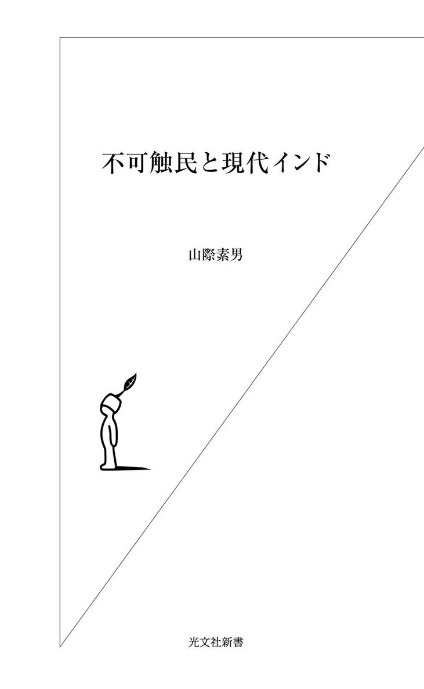
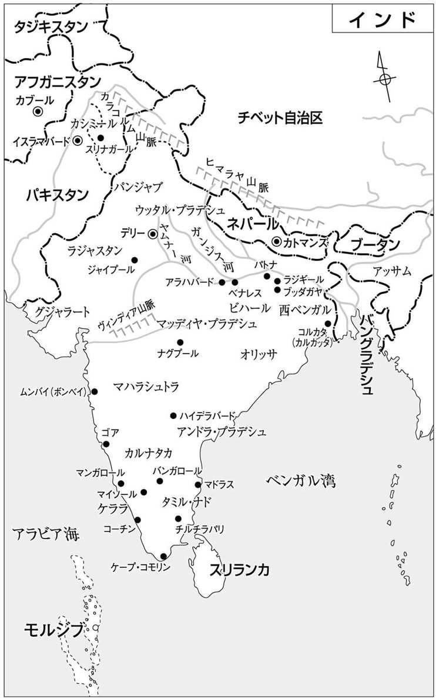

| 不可触民と現代インド | |
| 山際 素男 | |
| (2003) | |


四十年前、私はインド北部にあるビハール州パトナ市に滞在し、パトナ大学に留学していた。パトナ市は、デリーやボンベイ（ムンバイ）、カルカッタ（コルカタ）のような大都市の活気はないが、落ち着いた雰囲気のある古都である。私はあるインド人の家に寄宿し、そこから大学に通っていた。のんびりした街と親切な人びとに囲まれ、ご機嫌な日々を送っていた。
ある日、運転手と案内のインド人Ｋ氏とともに、街を離れて郊外まで車で出かけることになった。車が田園地帯に入り、道路には畑に急ぐ農夫の群が次第に増えていったその途中、突然ドスッという鈍く気味の悪い衝撃音と同時に、大きなものがフワッと宙に舞い、ゆるやかな放物線を描いて前方に落下した。車はブレーキを軋ませた。
するとＫ氏は短く一言、「チョロ（いっちまえ）」と命じ、轢かれた農夫の姿はみるみる遠のいていった。
「ストップ、ストップ！」慌てて叫ぶ私を、Ｋ氏は冷たい笑みで黙殺した。運転手は、ペロリと赤い舌を出し首をすくめると、アクセルをぐんと踏み込んだ。「ストップ！」私は叫び続けた。しかし、Ｋ氏は厳しい眼で私を睨み付け、一言も発しなかった。パトナに戻ってから、私はＫ氏に問いただした。
「あんな轢き逃げが世間に知られないはずはない。直ぐ新聞に載り、司直の手がのびるだろう」と私がいうとＫ氏は、
「そんなことはないよ。轢いたのはまぎれもなく〝アンタッチャブル（不可触民）〟なんだから。あんたもこのことは黙っていたほうがいい」
といったきり、普段と変わらぬ顔に戻ってしまった。彼のいった通り、轢かれた農夫の周りには大勢の農夫たちが目撃していたにもかかわらず、この轢き逃げ事件はパトナのいかなる新聞、ラジオでも報道されず、警察も全く動かなかった。
はねられた農夫が〝不可触民〟だったからだ。
この黙殺された〝事件〟を境に、私は悶々とした日々を送ることになった。轢かれた農夫のことが脳裏に焼きつき、苦しむ私は何人かの信頼できる知人に打ち明けた。しかし、返ってきた言葉はどれも似たようなものだった。
「生きているかも死んでいるかも分からない不可触民のことを知って、どうするのかね？」
「相手が不可触民じゃね。ほっときたまえ、それが一番いいんだよ」
私が尊敬し、寄宿していた家の主人も「心配するな」とうっすらと笑みを浮かべるだけだった。
私は沈黙した。私の理解しがたい〝何者か〟がそこに厳然と立ちはだかっているのを感じた。その〝何者か〟とは何だったのか――。
これが、私のインドにおける〝原体験〟であり、つまずきの元であった。そしてこの体験が、私を不可触民をはじめとするインド最底辺民衆に引き寄せるきっかけになった。
インドに留学し、通算五年も暮らしながら、その存在について無知のまま過ごしてきたことへの痛恨をこめ、その存在を通してインドを捉え直したい、これらの人びとを通してインド民衆の心の世界を垣間見たい、という思いによって二十数年前、『不可触民 もうひとつのインド』『不可触民の道』という本にまとめた。その後も私とインドとの関係は絶え間なく続いてきたが、その頃の民衆が今、どのように目覚め、苦しんでいるのか、何を感じているのかを知ろうと、二〇〇二年の暮れから数カ月ほどインドに滞在し、改めて民衆を見つめ直そうと思った。今回出会ったのは、最も意識の高い、目覚めた、いわばインド最底辺民衆の中でもエリートと呼べる人びとがほとんどであった。
今、インド社会はあらゆる分野で新しい大きな変化が現れはじめている。その中で、自分たちの目指す社会を熱く語る真摯な人びとの一断面を少しでも感じとっていただければ幸いである。
目 次
紀元前一五〇〇年頃、アーリア人といわれる、金髪、碧眼、白色人種の放牧民の一団がヒンドゥクシュ山脈を越えインド亜大陸へ侵入してきた。彼らはインダス文明を築いた先住農耕民族（現・南インドのドラヴィダ人がその子孫とされる）、行く先々の色の黒い原住族と戦いつつ、彼らを征服していった。
そして、バラモン（ブラーミン）を頂点とするカースト制度を作り上げていった。当初、バラモン（僧侶、司祭階層）、クシャトリヤ（王侯、戦士階層）、ヴァイシャ（商人階層）の三階層だったが、やがて被征服民をシュードラ（前上位三カーストに奉仕するカースト）を加え、後にいわれる四姓制度（カースト制）を築いていった。
しかし、後になってシュードラの下に〝不可触民〟（現在は指定カースト民と呼ばれる）というカースト外カースト民を作り、バラモンが不浄視する労働を押しつけていった。
バラモンたちは、まず祭祀を独占し、その呪力的権威をフルに発揮し宗教的権威者集団の地位を確立した。次に、厳格な排他的内婚制度を布き、自らを神と人間の仲介者、最も聖なる者として存在化してゆく。そこに彼らの最清浄性を保つため、浄不浄の観念を導入し、バラモン教の犯すべからざる掟を作っていった。
ここから、〝不可触民〟という、触れるだけで穢れとされる存在が人為的に作られていった。
肉体労働はもちろん、人間・動物の屍体処理、糞尿の処理、ごみ集め、靴職人、獣の皮剝ぎ、竹・籐細工、鍛冶職人などなど、〝不浄〟とされる一切の仕事を強制され、他のカースト同様、彼らの職業も世襲化されていった。
こうして何千年にもわたる〝忌わしい存在〟としての不可触民カーストが、今日まで存在しつづけることになったのである。
カーストという言葉は、十五世紀の終わりにインドに来たポルトガル人が、多数の排他的内婚集団（結婚を同一種族の集団のみで行う）によって構成されているインド人社会を知り、ポルトガルで家柄、血統、種族を意味する〝カスタ〟という語を当てはめたことによる。
後からきたヨーロッパ人もそれにならい、〝カースト〟という語が定着した。インド人は昔から〝生まれを同じくする者の集団〟を意味する〝ジャーティ〟という語でそれを呼んでいた。
この〝ジャーティ〟は、地域社会の日常生活で独自の機能、たとえば洗濯屋、壺作りなどを世襲的職業にしている排他的集団のことを指すが、今日、カーストと同じ意味で使われている。しかし、インド人はジャーティでそれらの集団を区別し差別してきている。同一カーストで沢山のジャーティがあり、インド全体で三千以上ある。（名前に刻まれた複雑な歴史へ戻る）（かくも長い〝奴隷〟の理由へ戻る）（ヒンズーの聖地を守ってきた〝不可触民〟へ戻る）
四種姓は〝ヴァルナ〟（色を意味する）で区別していた。それがカースト制の区分にも用いられるようになったのである。
カースト別人口でみると、ブラーミン（僧侶、司祭階層）五パーセント、クシャトリヤ（王侯、戦士階層）七パーセント、ヴァイシャ（商人階層）三パーセント、シュードラ（前上位三カーストに奉仕するカースト）約六十パーセント、〝不可触民、指定山間部族民〟二十五パーセントといわれ、ヒンズー教徒の八十五パーセントは低カースト、あるいは隷属階層ということになる。
しかし、このカースト別人口はイギリス政府が一九三〇年に発表して以来、一度も調査結果が発表されていないため、推測の域を出ない数字であり、現実には低カースト、指定カースト（不可触民）の人口はずっと多いといわれている。
だからこそ、バラモンたちは彼らの優位性を維持するため、カースト制を厳しく守らせ、神話、教典などの神聖さを強調、バラモンの神格化を徹底して下層民衆にたたき込んできたのである。彼らが一番恐れているのは、この歴史的事実、真実であり、彼らの正体が被支配層に知られることであった。
〈王様は民衆が王でないと思ったその瞬間、もはや王ではなくなる〉
といったのはマルクスだったように記憶するが、どこの国でも支配階層が最も恐れるのは己の正体が見破られ、真実が明るみに出ることである。
この、バラモン（ブラーミン）の正体を見破り、公然と彼らの権威と偽善性に挑戦したのが、〝不可触民〟アンベードカル（一八九一～一九五六）であったのだ。
一九二〇年前後から一九四〇年代始めにかけての独立運動時代、ヒンズーの支配体制、カースト制の強固な擁護者であり、〝神〟のごとく崇められていたマハートマ・ガンジー（一八六九～一九四八）は、自分の偽善性を鋭く批判し、不可触民解放のために自分に楯ついてやまぬアンベードカルと会見することになった。その時初めてアンベードカルが〝不可触民〟であることを知り、大層驚いたという。その時まで彼をブラーミンだとばかり思っていたのである。〝不可触民〟風情が、こんなにまで崇拝されている〝マハートマ（偉大）〟たる自分に逆らうとは夢にも考えられなかったのだ。
アンベードカルによって播かれた種である仏教と不可触民解放運動は、他の低階層にも広がり、それらの階層一般を広く指して使われるようになったヒンズーの〝ダリット〟（倒れし者、虐げられた人びとの意。指定カースト民、指定部族民、その他後進カーストが含まれる）民衆にもインドの歴史の秘められた真実が明かされるようになってきた。
つまり、ブラーミンたちがインドの歴史を本当に作ったのではない。ブラーミンこそがインド文化、文明の創造者なのだと教えられてきたことに大きな疑問を抱きはじめたのである。
武器らしい武器を持たなかった農耕先住民族が、鉄製の武器を持ったアーリア人による戦車・騎馬集団に徹底的に打ちのめされ、ブッダ以前の〝暗黒の千年〟といわれるインド文明、文化の空白期はどのようにして生まれたのか？
モヘンジョダロに代表されるインダス文明の担い手とされる人びとの高い文明、技術はどうして失われていったのか？
あれほど精巧に作られていた城壁などの煉瓦技術がその千年の間に失われてしまったのはなぜか？
ブラーミンたちが仏教を目の敵にし、弾圧し抹殺してきたのはなぜか？
ブラーミンとはそもそも何者なのか？
そして、先住民族ダリットとは何者だったのか？
こうした疑問は、アンベードカルが驚くべき知識と努力で解明しようとし、提出してきた。
彼はアメリカのコロンビア大学に留学、経済学博士号を取得したのを皮切りに、ロンドン大学政治経済学院、グリーズイン法曹学院で弁護士の資格を取り、社会活動を開始した。彼の学識は多岐にわたり、後に法務大臣となり、新憲法草案者に選ばれたのは、彼において他に適任者がいなかったからだといわれる。
『アンベードカルの生涯』（拙訳 三一書房刊）の著者ダナンジャイ・キールはこう書いている。
「じつにアンベードカルの生涯は人間的権利の勝利のための戦いであった。総ての人が一致して認めるのは、彼が人間的尊厳と虐げられた人びとの解放のために戦いつづけた戦士であったということだ。
この国、いや外国においてすら、アンベードカルほど波瀾に富み、刺激的でロマンチックな人間は稀であろう。牛糞にまみれた不可触民の子として生まれ、不治の業病のように忌み嫌われた少年時代を送り、床屋、宿屋、寄宿舎、寺院、役所といった社会的施設の総てから拒否され、飲水、食物も与えられない過酷な人生を歩まされ、やがて世界的最高学府で学位を取りながら、その一歩一歩を徒手空拳、血と汗を流し、一つ一つ獲得してゆかねばならなかった。
有力な政党、新聞、ジャーナリズム、財力の一切を持たず、むしろそれらと戦いながら、その実力によって法曹界、政界に地歩を築き、遂にインド憲法の父と崇められるに到った。
アンベードカルは新聞も編集した。経済学、社会学、歴史、政治の分野に健筆を揮い、膨大な著作を残した。幾つもの学校、大学を興し、労働組合運動のリーダーとなり、政党を創設と、その一つだけを取り上げても普通の人の一生の仕事となるような事柄を次々と成し遂げていった」
また著者は別のところでいっている。
「マハートマ・ガンジーを不可触民の父といっているが、これは正に歴史の捏造である。アンベードカルこそが不可触民の父なのだ」
著者はブラーミン出の著名な伝記作家だが、彼の公正な目は出身カーストの壁によって少しも曇らされていない。
しかし、このアンベードカルの天才をもってしても独力では、また当時の学問的水準では十分な結論を出すことは到底無理であった。しかしそこには大きな歴史上の疑問が隠されているのは否定できないだろう。
そして、この五十年の間に、インド最底辺民衆が自国の歴史への大きな疑問を抱くと同時に、彼らの間に「このインドの本当の主人公は自分たちなのだ」という意識がむくむくと頭をもたげてきたのは事実である。
これが、いつまでも支配者面をしてきたブラーミン階層の最も恐れていることなのだ。
人口の上からいっても自分たちの方が圧倒的に多い、などといった声が上がってくる。つまり、これが意識の変化、世界認識の変化であり、変革意識の芽生えである。
どんな支配階層も一番恐れ、警戒するのがこの兆候である。
今、世界各地で宗教的原理主義集団がテロリズムの姿をとって猛威を振るっているが、インドでもＢＪＰ（インド人民党）という政党が政権を取り、ブラーミン至上主義者たちを中心にヒンズー原理主義ともいえるイデオロギーを振りかざし、インドという国全体を変えようとしはじめている。
現在のインドの政治的状況は、元はといえば一九四七年の独立以来、一党独裁体制を長年つづけてきた国民会議派が分裂につぐ分裂で弱体化し、求心力を失ったことにある。
この国民会議派というのは、一八八五年に結成された政党で、当初はイギリスによる人種差別行政に反発するインド知識人、中間層を代弁する組織であった。この組織は限られた階級、階層の利害を代弁する穏健な人びとの集まりであった。次第にＢ・Ｇ・ティラクら急進的民族派が主導権を握って展開された運動が、やがてマハートマ・ガンジーの指導下でジャワハラル・ネールなどの急進派とＶ・Ｊ・パテルなどの保守派が統合されてゆく。民族資本家ビルラーなどの支援によって、ガンジーに代表される地主階級など、保守派に反対する左翼的流れ、労働組合、農民組合などに代表される階層が対立してゆきながらも広範な国民的基盤を作り上げ、独立運動を推し進めていった。
独立後、国民会議派は長期政権を維持してきたが、現在、初代首相ネールが築いてきたセキュラリズム（政教分離主義）がもろくも崩れ、その間隙を縫ってヒンズー原理主義政党であるＢＪＰがナーガ（大蛇、竜）のように鎌首をもたげてきたのだ。インドの政治は正にそういう意味では新たな群雄割拠の時代に突入しているといえる。
十九世紀の中頃から始まったインドの近代化はイギリス、ヨーロッパ文明、文化との接触から起こってくるのだが、インドを神秘化し、特別な文化を古くから築いていた国としての見直しを唱える人びとはむしろヨーロッパ人たちだった。
マックス・ミューラー（ドイツ人サンスクリット学者）、神智学協会のアメリカ人ヘレナ・ブラヴァツキー、アイルランド人アニーベズンド夫人（彼女の作ったカレッジは後のヴァラナシー大学になった）などが著名だ。
ブラーフモ・サマージ（古典的インド思想の復興結社、一八二八年設立）の創始者でブラーミンのラーム・モハン・ローイは社会改革の先駆者の典型といえる。彼は幼児婚の非人間性を批判し、女性の社会的地位の向上、教育の機会均等、離婚や再婚の自由、寡婦殉死――夫が死ぬとその死体と一緒に焼かれる――の風習の禁止、カースト制度の批判など、当時としては画期的改革運動を展開した。
また、アーリア・サマージ（アーリア協会。ヴェーダの古代的思想の復興を唱える結社）の創始者でダヤーナンダ・サラスヴァティー（一八二四～八三）の社会改革運動もインド社会に大きな影響を与えると同時に、古代インド文化の復興を説き、独立運動の火付け役的仕事を果たしている。ベンガル人のラーマクリシュナ、その弟子のヴィヴィカーナンダはラーマクリシュナ・ミッションを設立し、アメリカ、イギリスに渡りインド文化と思想の高さを説き、多くの外国人の信者まで作った。
これらの時代の先駆者たちの啓蒙運動は、インド人自身の目をインド文化へ向けさせ、民族意識を目覚めさせると同時に、ブラーミンの特異性、神格化も一方で強めさせていったといえる。
ＲＳＳ（民族奉仕団、一九二五年に設立。マハートマ・ガンジーを暗殺し、ネール時代は政治活動を禁止されていたヒンズー原理主義者の結社）の創始者、ヘードゲーワールか誰かが、〈ブラーミンは宇宙の何処かから突然このインドにやってきたのだ〉とかいったというが、一種の、自分たちを神秘化し、神の使者のように考える兆しは設立当初から強くあったようである。
どの民族も神話を創造し、その過程で〝選民意識〟を抱くようになる。こうした幻想はむしろ健康な想像力を育てる、人間に備わった大切な能力の一つである。ただそれを間違った方向に持ってゆくと大変なことになる。日本もかつて〝神国〟という幻想を抱き、日本人は特別な人種だと思い上がってしまったことがあった。
幻想は人間の重要な才能だが、現実と夢との関係が単なる錯覚に陥る時、たとえば、道に落ちていた縄を蛇と思い込み、それに咬まれて死んだというのは明らかな錯覚だが、他人の目には見えなくとも、ある〝もの〟をありありと視るという幻想は時としてその幻想を、現実に〝存在させうる〟ものであり、精神の非常に重要な働きである。
インドの独立運動を突き動かしていったのもこの〝インド幻想〟であったのかもしれない。人びとは古き良き時代のインドを夢みて惜しみなく命を捨てていったのではないだろうか。かつての日本人のように。ガンジーも、人びとが各自の分を忠実に守る〝古き良きカースト社会〟を夢みていた。それがインドの独立を夢みさせ実現させたといえよう。
このヒンズー教、ブラーミンの構築した共同幻想社会に真っ向から闘いを挑んだのが、アンベードカルであった。
一九三二年、イギリスはインド社会の分断を狙って、多岐にわたる職能、宗教階層に対してそれぞれの属するグループ毎に選挙権、被選挙権を与えた。医者は医者、教師は教師、イスラム、クリスチャン、それぞれの社会成員を選挙し、国会、州議会に送っていいというわけである。イスラムはこれを機にインドからの分離独立の機運を具体化してゆくことになる。
当時、すでに〝不可触民〟代表としてイギリス政府にも認知され、イギリスで行われた各政治、宗教社会の代表者会議には〝不可触民〟代表として〝円卓会議〟にも出席していたアンベードカルは、この分離独立選挙をめぐりガンジーと激しい戦いを演じていた。
〝不可触民〟階層にも分離独立選挙をさせよ、と迫るアンベードカルにガンジーは徹底的に反対し、最後は無期限断食に入り、〝死の断食〟をもってアンベードカルを追いつめた。
その当時、こういうエピソードが残されている。
「ガンジーさん、私には祖国がありません。だから自分たちの国を作りたいと願うのです」
とアンベードカルはいった。するとガンジーは、
「何をいうのです。あなたは〝不可触民〟の立派な指導者として社会的に高い評価を得ているではありませんか」
と驚いていった。
「いいえそうではありません。私たちはこの国で自由に水すら与えられず、飲むことができません。そんな国をどうして祖国と呼べるでしょうか」
ブラーミンの共同幻想社会は、労働力としての不可触民の存在を絶対的に必要としながら、対等の人間としての存在を〝幻想〟の社会からは「不浄」という幻想によってあっさり切り落としていたのである。〝幻想〟の怖さは正にここにある。
しかし、ガンジーはイスラム教徒の分離独立選挙は認めながら、〝不可触民〟の分離独立選挙は最後まで認めず、〝死の断食〟をつづけた。ヒンズー社会、メディアの激しい攻撃に晒されながら、アンベードカルも彼の〝脅迫〟に耐えつづけた。
このままでは〝死んでしまう〟というところまでいって、アンベードカルは遂に分離選挙の夢を諦め、ガンジーの脅迫に屈した。
その後アンベードカルは、一九四七年独立インドの初代法務大臣となり、初代首相ネールの願いでインド憲法草案を起草し、マヌ法典ならぬ、人間の自由、平等、人権を謳う新しいインド人の民法を作り、特に婦人の地位向上のために奮闘した。絶筆となった『ブッダとそのダンマ』を書き終わった直後、一九五六年十二月に急逝してしまった。
だが、アンベードカルの遺したもう一つの、そして最大の遺産は、同年十月の仏教への改宗であり、彼と共に改宗した〝不可触民〟五十万人の仏教徒である。
彼は仏教を通して世界人類への〝愛〟をインドから再び甦らせ発信しようと願ったのである。志半ばで倒れた彼の後、しばらく指導者らしい人物が現れず、仏教徒、指導層は国民会議派にかき回され分断されていった。
そこへ現れたのが日本人僧・佐々井秀嶺（一九三五年生まれ。一九八八年インド市民権取得）である。一九六八年渡印し、インド仏教徒の中に入り、以来仏教復興に文字通り身命を賭してきた。
彼は今日、インド仏教徒の押しも押されもせぬ大指導者となっている。
彼はビハール州ブッダガヤにある世界的に有名な仏教遺跡、大菩提寺を仏教徒の手に返せという解放運動を一九九二年に開始した（大菩提寺は紀元前三世紀頃、マウリヤ王朝のアショーカ王が仏教に帰依し、ブッダを記念して建立したといわれる。七世紀頃再建され、五十二メートルの大塔は玄奘三蔵の『大唐西域記』〈七世紀〉にも記述され今日と同じものと想定されている。二〇〇二年、ユネスコによって世界遺産に指定された）。
仏教が衰滅した後、長年放置されていた大塔をいつしかヒンズー教徒が自分たちのものとして扱うようになった。ヒンズー教ではブッダはヴィシュヌ神の化身という伝説があり、それを元に今も大菩提寺はヒンズー教のものだとＲＳＳ（前述、民族奉仕団）、ＶＨＰ（世界ヒンズー協会、一九六四年に設立。ヒンズー聖職者組織）たちは主張しているが、世界の仏教界、学者たちのほとんどは仏教遺跡であることを認めている。
そこには大菩提寺への世界の仏教国、信者からの莫大な寄進をこれまで専有してきたＲＳＳ、ＶＨＰたちと結託した一部インド仏教徒の暗い癒着があり、問題を複雑にしている。
ともあれ、長年にわたる佐々井師の並々ならぬ努力と、仏教徒の遺跡として認めたがらないＢＪＰ政権の妨害をはねのけ、ユネスコに協力してきた佐々井秀嶺師を高く評価したユネスコは二〇〇二年、彼をジュネーブとパリの国連、ユネスコ本部に招待し、厚く感謝の意を表した。
さらに二〇〇三年三月、ＢＪＰ政府は、佐々井師をマイノリティ・コミッション（少数社会委員会）の政府委員に任命した。佐々井師は来年の総選挙目当ての懐柔策でしょうと笑っているが、この委員会は、五つの宗教社会、イスラム、シク、キリスト教、仏教、鳥葬で有名なゾロアスター（イラン系拝火教）から成り、各一名、すなわち五人の代表と議長で構成されている。
一九七〇年代、度重なるコミュナル紛争で多くの犠牲者が出るのを憂慮した故インデラ・ガンジー首相（インド初代首相ネールの娘、インド第三代首相。一九一七～八四）が提案し、ヒンズー教徒と各コミュニティーの協調と融和を深めるために、コミュニティーの中から最も信頼され、人望の厚い人物を選出し、社会の安定を図る使命を与えられた。それだけ委員の権限は強く地位は高い。中央政府の副大臣扱いで、調停や調査のために必要な行政命令を全インドに発することができる。
ニューデリーの政府高官の住む官邸街の一角にオフィス、住宅を与えられ、運転手付き車、その他交通機関、宿泊施設を自由に利用できる、と大変な厚遇である。
仏教徒のために役に立つならと引き受けた佐々井師だが、表向きＢＪＰ政府に公然と楯つく行動は取れなくなった。仕方なく大菩提寺解放運動の委員長は右腕のアーナンダ師に引き継がせ、側面から応援することになった。しかし、中央政府の首相と直談判できる機会が増えるとあって、就任式の場で早速バジパイ首相に〝大菩提寺を早く返してくれ〟と嚙みつき、首相の目をパチクリさせた。二〇〇六年までの三年間の任期をどう役立てるか楽しみである。
今、アンベードカルの播いた種は見事に開花し、仏教徒は一億人を超すといわれる。そして、その最先端に日本人僧がおり、何百万ものインド仏教徒に慕われ尊敬されていることを今回の滞在で改めて実感した。
三千年の支配体制、すなわちバラモン（ブラーミン）を頂点とするカースト制社会を変革しようとするインド低カースト、ダリット民衆は、誰がこの国の主人公であるべきかを明瞭に自覚しはじめている。そしてブラーミンたち上位三カースト、十五パーセントの支配階層は大きな危機感の表れとしてＲＳＳ（民族奉仕団）、ＶＨＰ（世界ヒンズー協会）のようなブラーミンエリート集団が独特の〝神国思想〟をもって体勢を立て直そうとしている。〝我々アーリア種族も先住民だ〟などといいはじめているのはその危機感の裏返しである。
ブラーミンの作り上げた〝共同幻想〟からようやく目を覚まし、アンベードカルたちの作った新しい共同幻想――自由、平等、友愛――という社会を国作りの根幹にしようという思想と、その実行に向かう人びとの姿をみてみよう。
一九四七年インド独立後、政府は憲法によって不可触民＝指定カースト民のために社会的弱者保護を目的としてリザーブシステム（優先的保留制度）を設けた。政府関係機関すべてに、平均十五パーセントの割合でその人びとに優先的に職場、地位、教育機関などへ参加できる制度である。この制度は、イギリスによるインド統治時代に発足した、後進カースト向上のための福祉政策に端を発している。
後進カーストの中で頭のいい、有能な者を特に選んで公務員に採用するリザーブシステムは後進カーストの人びとに格好のチャンスを提供し、これによって上位カースト階層によって独占されていた分野に〝不可触民階層〟が進出できる機会を与えられた。（参照元へ戻る）
そこへ現れたのがカンシ・ラムの創設したバムセフだった（ＢＡＭＣＥＦ＝THE ALL INDIA BACKWARD-SCHEDULED CASTE, SCHEDULED TRIBE-AND OTHER BACKWARD PEOPLE AND MINORITY COMMUNITY EMPLOYEES FEDERATION＝全インド後進指定カースト、指定部族カースト並びにその他後進コミュニティ従業員連盟）。
カンシ・ラムは一九七八年、この独立後誕生した新しい、いわば〝エリート階層〟を組織し、抑圧された八十五パーセントの階層のために献身する集団を作り上げたのだ。
彼の組織はその後みるみる発展し、会員百四十万を超え、全国の県単位の支部が生まれ、各種新聞、百を超える協同組合が活動しはじめた。一九七八年当時には平均月収千五百ルピーを上回る公務員が現れ、百四十万人から集められる会費、寄付は順調に蓄えられ活動を支えた。一九八〇年にはその額は一億ルピーに達した。こんなことはインドの歴史上初めての現象であった。やればやれるのだという自信と意気込みが大きく盛り上がり、津波のようなうねりとなっていった。
インド公務員千五百万人中、リザーブシステムによって公務員に採用された〝指定カースト〟民は一九八〇年代初めには約二百万人に達し、現在は二千万人中約三百万人を超える。これは立派に一つの社会的階層であり、高い教育を受けた知的エリート層である。
一方、このリザーブシステムの枠は平均十五パーセント、二十五パーセントを超えてはならないと憲法で規定されているが、現在では選挙の票稼ぎや政権の人気取りに利用され、州によっては五十、七十パーセントを超えるところも出、上位カーストの不公平感、不満を募らせ、社会的混乱を呼んでいるのも事実である。
バムセフの活動はある程度まで成功し、これまでの労働組合組織や政党の翼賛的活動には見られなかった、社会福祉的、文化的啓蒙運動を展開してゆくようになり、新聞、パンフレット、宣伝活動を全国的ネットワークとして広げていった。
カンシ・ラムはその勢いをかってＤＳ４という青年男女を中心とする政治結社を組織し、やがてそれが一九八四年に結成されたＢＳＰ（バフジャン・サマジ・パーティ＝人民大衆党）という本格的全国政党へと成長してゆくのである。その頃から色々な問題が発生し、バムセフの分裂という形でカンシ・ラムは政治の世界に専念していく。公務員は政治活動はしてはならないという法規を破ってまでカンシ・ラムの新しい政党に参加するべきかどうか、バムセフの内で大きな、深刻な激論が戦わされ結局分裂という形になってしまったのである。
この分裂騒動は大きな痛手となった。残ったバムセフ員もどうしたらいいのか分からぬ状態であった。それ以後もバムセフは三つに分裂した。
現在、彼とマヤワティー（現・女性党首）の率いるＢＳＰは現政権のＢＪＰ（インド人民党）と連繋し、人口一億四千万のウッタル・プラデシュ州（Ｕ・Ｐ州、インド最大の州人口を擁し、政治の要とされる）政権を確保している。このことは詳しく後述する。
正直、私は、バムセフは分裂を重ね、事実上衰滅か、それに近い形に弱体化しているのではないかと思っていた。
しかし、二〇〇二年の暮れ、パトナ市で開かれたバムセフのインド全国大会に出席し、五千人の参加者、その参加者の多くに会うことによって認識を新たにした。この組織は立派に復活していたのである。カンシ・ラムの時と変わらぬ勢いを取り戻しているようであった。
そして、そこに出席していた多くの〝目覚めた〟人びとと語り合った。
バハル氏は、バムセフのインド全国大会に出席するためロンドンからわざわざ駆けつけてきた。五千人近い集会者の中でも、とりわけ背が高く、がっちりした体軀、仕立ての良さそうな背広とネクタイ姿のバハル氏は人目を引く。スピーチの英語もインド英語ではなくイギリス仕込みだ。
「あの人は誰です？」
私の問いに、
「ああ、あの人ですか。後で紹介しましょう」
係員らしい一人が、うん、うんと大きく頷き、私が注目したことを喜んでいる風であった。
スピーチの後、バハル氏を紹介され話をうかがった。
「バムセフとの出会いは三年程前でした。それまでそんな組織があることも知らなかったのです。
ロンドンの私の会社に訪ねてきたバムセフのメンバーから色々と説明された時には、主旨には共感するけれども、きっと大した組織じゃないだろうなと内心思いました。とても控え目で大言壮語するわけでもなく、いわゆる活動家風にまくし立てるタイプではなかったからです。
でも、自分たちの運動に確信を持ち、強い使命感を抱いているのが伝わってきました。それで彼らの大会に出席する気になったのです。
大会の規模、組織の内容、燃えるような参加者の情熱、活動ぶり、すべて私の予想を裏切るものばかりでした。とても感動しました。この国にもこういう仲間がこんなにもいたのだ。大きな発見でした。この経験が私の生き方を変えたのです。去年（二〇〇一年）はロンドンで主としてイギリス在住の〝指定カースト民〟（不可触民）の大会を持ちました。今度はカナダで開催しようと思っています。そうです、バムセフの国際組織を作ろうと思っています。インドのカースト制によって人生を否定されている同胞は今でも何千万人といます。そんなインドを見限って移住してきた仲間はイギリス、カナダにも沢山いるのです。私もその一人なのです」
話しているところへバハル氏の奥さんが現れた。熱気がむんむんしている大会場の演壇の後ろのテントで話をしているからお互いに大声でないとよく聞き取れない。バハル氏の声はよく通るがミセスの方もはきはきとしていて聞き取り易い。絹の美しいサリーに大柄な体を包んだ彼女は、控え目な様子で腰を下ろす。バハル氏に劣らぬ立派な顔立ちである。
四十前後だろうか。大きな目、形の良い鼻、口、どうみてもかなり上層カーストの奥さんといった感じだ。バムセフのメンバーは指定カーストや後進カーストといった人びとを中心としているから、そんなに高いカースト出身とは思えないが、見た目といい物腰といい、気負ったところもなければ、成り上がり、といった感じは少しもない。自然で〝堂々〟としていた。
バハル氏は五十五歳。とすると彼女も五十近いのかもしれない。二人共実に若々しい。
「生まれは？」
「パンジャブ州のかなり大きな町です」
「カーストは？」
といいかけると、目をくりくりと大きく開き、悪戯っぽい笑みを浮かべた。
「〝この世で最低中の最低のカースト〟ですよ」
とたんに周りでどっと笑いが起こる。が、私にはピンとくるものがあった。
「〝バンギーですよ、バンギー〟」
その言葉に再び笑いが弾ける。バハル夫妻もまるでその言葉を楽しんでいるかのようににこにこしている。
しかし私は少し緊張し、ぐっと身を乗り出した。
〝バンギー〟（清掃人）という言葉の重さがずっしりと伝わってくる。
目の前の夫婦と、〝バンギー〟という言葉は余りにかけ離れていて結びつかないのだ。しかし、厳然たる事実なのだ。恐らく周囲の仲間も、その言葉からイメージするものとバハル氏夫妻の姿とのコントラストが面白かったのかもしれない。
カースト社会の中で最も忌み嫌われる人びと、それが〝バンギー〟だ、といっても過言ではあるまい。
「小さい時から母親と一緒に町へ出、道路掃除をしました。私の頃にはそんな姿は見かけなくなっていましたが、父たちは町を歩く時には、髪に烏の羽根をつけ、〝パヤース〟〝パライース〟（どいて下さい）と大声で叫ばなければならなかったといいます。そんな風にして自分の穢れた存在を〝カースト・ヒンズー（上位カースト・ヒンズー）〟に警告しなければいけないのです。他の〝不可触民〟より更に穢れた、傍に寄るだけでも不浄な存在だったからです。
特に糞尿を扱う人びとは最悪でした。社会でなくてはならない仕事なのに、そのことによって徹底的に貶められるのです。ヒンズー教は結局〝浄、不浄〟の観念で人間、いや人間だけでなく他の自然、動物、物質も差別するのです。それが宗教的戒律と結びついています。
ですから、私たち〝バンギー〟は絶対不可欠な職業に従事しているのに、この世で最低の扱いをされてきました。学校でもどこでも罵られ、侮辱され通してきました。確かに汚いといえば汚い仕事です。糞壺を両手に抱え、頭に載せ、便所から便所へ渡り歩き、糞尿車を押して郊外へ捨てに行き、それを一生くり返す人生なのですから」
私は昔見た光景を今もまざまざと思い出す。
四十年程前、ビハール州のパトナ大学に留学していたことは前述したが、ある友人の家に遊びに行った時、内庭にふと目をやると、頭に大きな壺を載せた女性が庭を横切っていった。
よく見ると、壺には人糞が山盛りになっていた。彼女は壺を両手で支え、足を踏ん張るようにして外へ出て行った。異様な光景だった。思わず後から表へ出てみると、道の脇に大きな箱車が止まっていた。荷台の屋根の一部が開くようになっていて、彼女はその中にどさっと中身をぶちまけ、再び壺を頭に載せ、トイレに戻しにきた。箱車の上の籠の中には幼児がちょこんと座っていた。
「あんな〝バンギー〟なんかに興味があるのかい？」
友人は苦笑しながらいった。しばらく言葉が出なかった。都会の〝バンギー〟の赤裸々な姿を見たのはそれが最初であった。
私が滞在していたインド人の家は宏壮な邸宅で、トイレは水洗式だった。しかしその頃は水洗といっても地中に浸透させる方式が大半であった。ホテルやレストランも大体がそれらしい設備のところが多い。都市の貧しい住居のトイレは、直接壺の上に垂れ流すのをその時に知った。田舎へ行けば、トイレは無いのが普通である。朝早く小さな真鍮の水壺を片手に近くの草原に用を足しに行く男女の姿はどこでも見かける風景であり、その方がむしろ自然に思えた。素手で糞壺を頭に載せる姿の方がずっと衝撃的だった。
この〝バンギー〟クラスは、疫病に真っ先にやられるのは当然であろう。特別忌み嫌われても仕方がない。そう自他共に思って何千年と過ごしてきたのだ。
町の水道でも、村々の井戸の水も直接手で触れるのはもちろん、傍に近寄ることすら禁じられてきた。夜、こっそりその掟を破って直接井戸水を汲んだ女性たちが、村人に知られ、頭を坊主に剃られ、素っ裸で首にロープをつながれ引き回されたという記事を、今でもしばしば目にすることがある。
あの酷暑のインドで、誰か〝親切〟なカースト・ヒンズー（上位カースト・ヒンズー）が気紛れに水を与えてくれるのを、井戸を遠巻きにして待ちつづけるしかない人びと。それに耐え切れず、泥水に手をつけ、疫病に罹る運命に耐えつづけるしかない人びとが〝何億〟（！）も何千年と存在してきている社会を当然の如く見過ごしているインド。
その姿を厳しく糾弾している書物、少なくとも日本の学者、研究者の書いた物には、インドに来るまで一度もお目に掛かったことがなかったし、今も無い！
最近になって、都市ではバキューム・カーが人手に代わるようになっている。だが田舎ではどうなのだろう。さして変わらぬ風景のままではないだろうか？
一九九四年、グジャラート州のある町で、突如ペストが発生し、みるみる死者が続出、文字通りインド中が大パニックになったことがある。
その時私はたまたまインドにいて、その状況を肌で感じた。まず病院の医者が我先にその町を脱出し、発生源の町の住人たちは、診察も検査も受けず、我勝ちに地方へ逃げ出し、遠くカルカッタ（コルカタ）、ボンベイ（ムンバイ）、デリーなどの大都市から出稼ぎにきていた何千人という人びとも一斉に逃げ帰っていった。一時インドは戒厳令下に置かれかねない狂乱状態を呈していたことがある。
その最中、人口千三百万のインド随一の都市ボンベイの街角で汚物、ゴミの清掃をさせられている人びとがいた。ある新聞は、「バンギーと称されてきた人びとは、防疫設備も防護マスク・手袋も一切支給されず、タオルで口を覆うだけで、鼠をはじめ動物の屍体を処理し、濛々たる埃の中で汚物、塵芥を集めて回っている。何千年というこの国の宿痾のカースト制は少しも変わらずこの人びとの上に君臨している」と痛烈に批判していた。
バハル氏はいった。
「二十一世紀になっても基本的にこの国のカースト制は変わっていません。少なくともカースト意識は人びとの心の中に根を張ったままなのです。ですが、私はあらゆる侮辱に耐え、反抗心を燃やし猛烈に勉強しました。私の頃には、〝不可触民〟階層への保護政策や優遇措置が次第に普及していましたから、私たちは積極的にそれを利用し、活用しました。
その根本にあるのが、一九四九年にアンベードカル博士が作った〝インド憲法〟です。その一つを取ってもアンベードカル博士の偉大な功績が分かります。
私たち〝不可触民〟カーストでなければ、このことは実感できないでしょう。
最も虐げられてきた人間を立ち上がらせる現実的基盤がアンベードカル博士によって保護され、その上博士は〝仏教〟を通して人間の自由、平等、友愛が普遍的なものであることを教えてくれたのです。ある時からそのことに気づき、博士の著作を猛勉強しました。そして、ヒンズー教の教義、神聖な神の言葉や前世の定めなどというものは、〝神〟が作ったものではなく、ブラーミンがこしらえたものだということがはっきりとしてきたのです。
人間は一度目覚めれば後戻りすることはありません。どれほど自分たちがブラーミンの思想によって盲目にさせられてきたかが判ったのです。
私は学校の成績はトップでした。体格も良かったし、運動能力も抜群でした。その頃私はパイロットになる夢を見ていました。本気でなろうと思ったのです。周りは皆笑いました。
〈バンギー風情が飛行機乗りになるんだと？〉
そんな話聞いたことがない。散々馬鹿にされ、何処に行ってもまともに相手にされませんでした。何か大それたことを自分はやろうとしているのだろうか？ パイロットになる夢を抱いて何が悪いんだ。正直、猛烈に腹が立ちました。
〈バンギーがパイロットになるって？〉
上位カーストだけでなく、我々の仲間でさえ笑うのです。しまいには悲しくなりました。〝バンギー〟が人並みの志を持つのがそんなに馬鹿げているのか？ でもその侮蔑が一層私を奮い立たせたのです。〝こんな国なんか捨ててしまえ〟。本気で考えはじめました。
アンベードカル博士は、マハートマ・ガンジーに初めて会った時、こういったといいます。
〈ガンジーさん、私には祖国がありません。ですから我々自身の国を持ちたいのです〉
ガンジーは驚いていいました。
〈何をいうのです。あなたは立派な教育を受け、この国の民衆のために活躍しているではありませんか？ 人びとはあなたをあんなに尊敬しているではありませんか？〉
〈いいえ、どんなに評判が高くなっても、我々〝不可触民〟は自由に水すら飲むことを許されません。そんな扱いをする社会を、どうして自分の祖国だと思えるでしょう。そんな社会を祖国として愛せという方が間違ってはいませんか？〉
アンベードカル博士の予想もしない言葉にガンジーは暫し絶句したといいます。
私も全く同感です。私は移民を決意し、あらゆる方策を模索し、イギリスに渡ることに成功しました。貧しい〝バンギー〟の息子がイギリスに行くことがどんなに大変だったか、想像に任せますが、単なる労働者として移民するのはチャンスさえあれば決して不可能ではありませんでした。
とにかくロンドンに移り住んでから私は死に物狂いで働きました。パイロットの夢は捨てましたが、自分の〝人生〟は絶対に捨てませんでした。幸いあの国には、階級制度はあっても基本的人権を否定するカースト的差別はありませんでした。生まれによって、その人間の全人格を否定する思想で私の人生を縛る社会では少なくともなかったからです。
あらゆる屈辱と差別しか与えられなかったことによって逆にそれをバネにして私はロンドンに飛び立ったともいえます。差別が私を鍛え、強くしたのです。
私の周りのインド人は、一部の上位カースト、裕福なクラスを除いて総じて低カースト、貧しい階層の人びとでした。貧困と差別に絶望し国を離れた人びとばかりでした。それでも刻苦勉励して自分の人生を築き上げていきました。その人びとに励まされ、私は次第にチャンスを見つけました。
私はスポーツマンだっただけでなく、ある種の芸術的才能、センスに恵まれていました。デザイナーの世界に飛び込んだのです」
「ほう」。私は微笑み、「素晴らしい！」と声をはずませた。なんだかとても嬉しくなった。 バハル氏は奥さんを振り返り、大きな笑みを交わした。
「彼女にもいいセンスがあるのです。生まれつきの芸術家といってもいいでしょう。
私は十年程前から衣裳デザイナーの道を歩きはじめたのです。そのきっかけを作ったのが彼女なんです。彼女はイギリス人の経営するブティックに勤めていました。
そこにはテレビ、劇団関係者、俳優、芸能人といった人たちがよく出入りしていました。人びとは斬新な感覚、奇抜なもの、実にさまざまな欲求を抱き、自分なりに表現したいといつもうずうずしています。インド的な感覚、色彩も昔から人気があったし、サリーなんかパーティ用衣裳に強い需要があるのです。ですが、インドものは現地で仕入れ、それをそのまま並べ、買っていった人たちが自己流に工夫して使っているのがほとんどでした。ですが余程センスや才能がある人でなければ素材を生かしきれません。
ある時、彼女は客がデザインに苦心しているのをみかねて、アドバイスしてやり、そのうち自分で作りはじめたら、それがとても客に喜ばれたのです。私も興味を覚え、自分でデザインしはじめました。学校で習ったわけでもないのに見よう見真似で、自分のイメージしたものが作れるようになったのです。これがけっこう受け、本気で商売としてやってゆく気になったのです。私のデザインは女性に特に評判がいいのです。〝創造性〟があるとよく誉められます。今は、娘も息子も一緒に手伝って働いています。ロンドンのその道ではちょっとは知られるようになっています」
バハル氏は楽しげであった。奥さんと肩を寄せ合い、微笑みを交わす姿は、単なる成功者の自信や誇りといったもの以上の、むしろ謙虚な充実感を味わっている風であった。
ここまで来る道程の〝異常〟なまでの屈辱感を晴らしてやる、やってやる、といった気負いや復讐の快感を味わっている人間の姿は少しも感じさせない。感謝の気持ちを忘れない人の持つ、他者への思いやり、励ましの心、といったものがにじみ出ていた。〝立派だな〟、私は素直に彼らの成功を祝福したかった。
「どんな人間にも何か才能があるものです。長所があるものです。それを生かすチャンスとチャンスを成功に導く努力です。私はそう信じています。
そして何よりも勇気です。生き抜く勇気です。
自分たちが切り拓いた道の上には、自分を生かしきれなかった、あるいは生かそうと必死になっている仲間が一杯いるのを知っています。バムセフの活動はそういう仲間に呼びかけ、励まし、共に歩むためのものなのです。アンベードカルの説く同胞愛、それを支えるブッダの教えが私たちの日常生活の土台になっているのは、それが本当に正しいのだと信じられるからです。〝バンギー〟というこの世で最も卑しめられ、虐げられてきた者にはそのことがよく分かるのです。アンベードカルも仏陀も、私たちを救うために生まれてきたんだと素直に〝実感〟するのですよ。虐げられている人びとへの共感とその共感を深め、広めるのが自分の使命だと素直に思えるのです」
バハル氏はいつしか〝己の思想、働き〟について熱烈に語りはじめていた。仕事で儲けるのは、そのためである、といわんばかりであった。
彼はある意味で特別な人かもしれない。しかし、己の才能と成功を他者のためにも生かそうとするには、己と他者というものの関係が余程深く認識され、己自身と切っても切れない、体の一部と化した〝心の働き、認識力、想像力〟が伴わねば、才能も単なる才能として重宝がられ利用されるに過ぎないだろう。それが金になればいいではないか。才能の無い奴らには所詮手の届かない世界というものがあるさ、と嘯いてすませる人には、自分の見えない世界を更に探ろうとする、見ようとする想像力と心の働きが乏しいのだ。
バハル夫妻だけでなく、会場の内外で出会う人びとは、話し合えば誰しも楽しい人たちである。しかし、その人びとの背後には想像もつかぬ屈辱と忍耐の歴史が潜んでいるのだ――。
カリヤニ・タクールさん五十六歳は、一九四七年東ベンガル（東パキスタン。現・バングラデシュ）の小さな村に生まれた。一九六〇年に西ベンガル州のカルカッタに移住してきた。その後、三度の印パ戦争、特に一九七二年の第三次印パ戦争で一千万人を超える難民が一挙に西ベンガルに流入し、彼女の同胞のほとんどがインドに入ってきた。
流暢な英語である。そしてタクールという名にも惑わされた。インドでタクールといえば北インド地方の有力富農カーストである。チャンバル渓谷の女性ダコイット（盗賊）として名を馳せ、投降後国会議員に選出されたプーラン・デヴィー（一九九七年、『女盗賊プーラン』という自伝を出し、日本でも翻訳出版され評判になった）が二〇〇一年、デヴィーたちに殺されたタクールたちによって暗殺されたのはまだ耳新しい。
何度か聞き直し、やっと分かった。彼女の本来のジャーティ（第一章参照）はナマシュードラと呼ばれる、〝指定カースト〟つまり元不可触民カーストである。十九世紀後半から二十世紀前半にかけてナマシュードラ運動というベンガル一帯で〝不可触民の地位向上運動〟の一つとして、英植民地政府はイスラム勢力と協力関係を結び、活発な社会改革運動を展開していた。
その運動の中心的存在が、グルチャンド・タクールという人物であった。それで私は前述の、有力富農カーストの〝タクール〟と混同してしまったのである。彼はチャンダルという蔑称である己のカースト名を捨ててナマシュードラと改め、彼に従う人びともナマシュードラと自らを呼ぶようになった。ナマシュードラ・タクールという名は、だからベンガル地方ではよく知られる有力な〝指定カースト〟グループの一つになっている。
名称一つにも複雑な歴史がある。この人びとの歴史と切っても切れない〝名前〟を理解するまで相当な時間がかかった。そして、彼女の教育程度が高く、詩聖タゴールの創設したヴィスヴァ・バラティ大学（かくいう筆者も三年程度この大学に遊学していた）を出、英語は小さい頃から学んでいたという。英語に堪能なのは、ナマシュードラ・カーストの特色であり、それも彼らの大指導者タクールの薫陶によるものだ。
インド憲法ではインド社会の後進性を三つの範疇に分けている。
すなわち社会的後進性、教育面での後進性、そして〝不可触民と指定山間部族民カースト〟の後進性である。グルチャンド・タクールはナマシュードラ・カーストの向上には教育面の改革が不可欠であることを知り、教育に力を入れた。その一環として英語教育に特に力を入れた。だから彼女は英語が堪能なのだ。
カリヤニさんに話を聞いた。
「東パキスタンでは上位カーストなどからの虐待の経験はほとんどありませんでした。何しろ周りは圧倒的にイスラム教徒だったし、彼らの間にはカースト差別はありませんからね。ヒンズーとイスラム教徒が争ったり、憎しみ合ったりはしていませんでした。一九四七年の分離独立の際のあの突然の殺し合いはなんだったのかと今でも不思議に思います」
当時のイギリス政府官僚が地図の上に恣意的に引いた線によって、あっという間にインド亜大陸は二つに分断された。自分の庭が一方はパキスタン、片一方はインドに引き千切られた。
そして機関車の運転手一人だけを残し、全乗客が虐殺された列車がインド側に到着したのを皮切りに、双方の大殺戮が頂点に達し、死者は百万人以上といわれる史上稀に見る惨劇がくり広げられたのである。昨日まで隣人としてにこやかに挨拶を交わしていた人たちが突然殺人鬼に豹変してしまったのだ。
「インドとパキスタンが原爆まで所有して憎しみ合う理由なんかどこにもありません。全く政治的陰謀によるものです。自分の政治権力を強めるため、民衆に不信と敵意を植えつけ、憎み合わせているのです。宗教的敵愾心を煽るのもその手段なのです」
カリヤニさんは激しく、きっぱりと断じた。
カリヤニさんには息子と娘がいる。二人共成人し、州政府の公務員だ。
ナマシュードラ・カーストはグルチャンド・タクールの時代から積極的にイギリス政府の後進カースト向上のための福祉政策を活用してきたが、独立後はリザーブシステム（第二章参照）を積極的に利用し、グループ全体の向上を図ってきた。
大半が貧しい農民階級であり、ほとんどが土地を持たない貧農、小作農だった。彼らが社会的に進出するためには、高い教育水準と、さまざまな社会的優遇措置を活用するのが一番の近道である。後進カーストの中でも頭のいい、有能な者を特に選んで公務員に採用するリザーブシステムはナマシュードラにとっても格好のチャンスを提供した。
カリヤニさんは夫と共に一九七八年に旗揚げしたバムセフに当初から参加していた。会合はしばしばカルカッタのカリヤニさんの家で開かれていた。十数人の発起人たちに混じり、カリヤニさんも積極的に発言した。エリート〝指定カースト〟階層の存在を、同胞のため、インドのカースト社会変革のために生かそうという、これまでにない発想と試みであるバムセフの中で新しい理想と情熱に燃えていた。
カリヤニさんはいう。
「私たちが直面している問題は、現実を変えてゆくにはさまざまな政治的課題と取り組む必要があるのに、共闘してゆく政治的組織がないことです。政治運動はしないけれど、社会改革はできる、私たちはそういう限定の中でやってゆくしかありません。
しかし、政治的連帯を結んでゆく組織がないのは歯がゆいと感じます。カンシ・ラムもその限界を感じ、ＤＳ４という政治組織を作り、そしてＢＳＰという純粋な政党を全国政党にまで持っていったのです」
そんな状況の中でどうやって運動を進めているのか？
「インド全体で〝指定カースト民〟の数は二十五パーセントということですが、昔から少しも増えていませんね？」
「そうなんです。大体カースト別の人口比率統計は、イギリスが一九三〇年に行って以来、一度も公表されていないのです。その時は確かブラーミン五パーセント、クシャトリヤ七パーセント、ヴァイシャ三パーセントだったと思います。この数字も七十年間変わりません。指定カースト民が十八パーセントから二十五パーセントに増えた位のものです。
こんな数字でインドのカースト別人口が計れると思いますか？ イスラム人口にしても同じです。今彼らの人口は凄い勢いで伸びているのですよ。
バムセフの伸長もこの人口が基礎なのです。それにしてもいいですか、ヤマギワさん、あの有名な〝マンダル報告書〟もこの一九三〇年のカースト別人口を基にしているのです。（※注 マンダル報告書というのは、故インデラ・ガンジー首相〈インド初代首相ネールの娘、インド第三代首相。一九一七～八四〉が最高裁判事のマンダル氏に命じて、前述したリザーブシステム＝保留制度の見直し調査を行わせたものである。
時代の推移によるカーストグループの変動、人口の変化などに合わせ、保留枠の調整をするのを目的になされた調査であり、一九八〇年に報告がなされると、保留制度の対象になる人びとは州人口の平均二十五パーセントに達することが明らかになった。そのためこの〝マンダル報告書〟による勧告は一向に実施されてこなかった。
ところが一九九〇年、時のジャナタ・ダル政権のＶ・Ｐ・シン首相はマンダル勧告を実施すると発表した。これに憤った主として上位カースト階層の青年男女学生たちが猛烈な抗議運動を展開し、方々の大都市の街頭で焼身自殺を図り、百人以上の犠牲者が出るという悲惨な事件が発生した。轟々たる非難が巻き起こり、シン首相は退陣し、再び国民会議派が政権に返り咲いた）
リザーブシステムのお陰で私たちも社会的に向上し各分野に進出する機会を与えられてきたのは事実です。こういう制度は逆差別を生む、時代錯誤だという声も〝指定カースト〟の間からですら生まれているのも事実です。カンシ・ラムもその一人です。保留制度の恩恵でバムセフの組織が作られたのに、今はバムセフ潰しのためにリザーブシステム反対を唱えているとしか思えません。
それはともかくとして、マンダル勧告の保留枠算出の基礎になっているのが、一九三〇年代のイギリスの記録だというのが問題なのです。つまりインド全体で各カースト人口の占める割合が本当には分かっていないのです。そんなことで正しい政策が作れますか？」
「たとえば、西ベンガル州は昔から〝指定カースト〟扱いされる人口は他の州と比べて高くはなかったのに、今は三十五パーセントを超えているのです。同じ指定カーストである指定山間部族民を含めないでですよ。それは州政府が独自の調査をしたからです。
つまり、インド全体で指定カースト、指定山間部族民という〝不可触民〟カースト、その他後進部族民といった低カースト、ヒンズー階層が実際どれほどいるのか正確な数字を政府も摑んでいないのです。上位三カースト十五パーセント、指定カーストその他後進階層八十五パーセントという数字を我々も口にしていますが、本当のところは何も分かっていなくて大体その位だろうで済ませているのです。それがこの国の実情なのですよ。
イスラム教徒の人口はすでに三億を超え、仏教徒も一億、キリスト・シク教徒は合わせてとっくに五千万を超えているとなれば、それだけでインドの人口の半分は異教徒ということになります。もしかしたら、ヒンズー人口は実際よりずっと減少していて、あと二、三十年もしたら少数派になってしまうかもしれませんよ」
ここで周囲からどっと笑い声が起こった。手を叩いている者もいた。彼女の発言が余程、痛快だったのだろう。
「キリスト教、イスラム、仏教への改宗はどんどん進んでいます。仏教徒六百万人とか七百万人とかいう数字は政府の政策上作りあげたでたらめであり、そんな数字を信じている仏教徒はだれもいません。ナマシュードラだけで三百万人近い仏教徒になるのですから。馬鹿馬鹿しくて話になりません。八十五パーセントの後進階層がすべてヒンズー教徒だなんて誰が信ずるものですか。
インド人口の八十五パーセントはヒンズー教徒だなどといっているのは政府やブラーミン、上位カースト・ヒンズーの連中ばかりです。彼らはその事実を肌で感じているはずです。
だからこそ、政府の許可なく改宗はできないという、基本的人権のひとつである信仰の自由を侵すという、あきらかに時代に逆行する法律を作ろうとしているのはそのためです。現に、チェンナイ州（旧マドラス州）議会では、そういう法案を通してしまい、グジャラート州でも同様の法案を通そうとしています。これが、ＲＳＳやＶＨＰに支えられるＢＪＰ政権の実体なのです」
カリヤニさんは語気を強めた。
「昨日、バムセフの大会に取材にきた『ヒンドゥスタン・タイムズ』の記者との間でこんなやりとりがありました。私が、
〈あなた方、ブラーミン、クシャトリヤ、ヴァイシャたちは元々侵略者なんだ。異邦人なのだ。先住民である我々を追いやり、カースト制を作り、下層民として押し込めたのだ。我々はそのことを長い間口にすることすら許されてこなかった。だがこの歴史的事実をやっと口にすることができるようになった。今にみているがいい、我々はこの国の八十五パーセントを占めている先住民の子孫なのだ。我々こそが本当のインド人なのだ〉
というと、その記者はこういったのです。
〈私も心の中でその通りですといいたかったけれどいえませんでした。
あなた方のいう〝八十五パーセント〟を私たちは日々肌に感じているのですよ。我々十五パーセント、特にわずか五パーセントのブラーミンを中心とした支配の時代はあきらかに終わったのだ、と。
これが偽らざる気持ちです。我々十五パーセントは、今も政治権力、官僚制度、マスコミ、経済、司法、議会、あらゆる分野で支配的地位にいます。でもその状態はそう長くは続きません。人間は一度本当のことを知ってしまうと、見違えるほど強くなり、逆に知られた方は怯えてしまうのです。
だから、必死にヒンズー神話をふり撒き、神とその宗教的権威をふり回し、ブラーミンの権威に人びとを跪かせようとするのです。私はカヤスタ・カーストです（ヴァイシャ・カーストの少し下のクラス。昔から書記カーストとして知られている。死神マヤの書記という伝説があり、タグ《殺人秘密結社》たちもこのカーストは避けていた。世界的に知られるシタール演奏者ラヴィ・シャンカールや有名な映画スター、アミタブ・バチャンなどもこのカヤスタ・カースト。Ｕ・Ｐ州政府の上級公務員の九十パーセント以上はカヤスタだといわれる）。ブラーミンとクシャトリヤの混血などといって田舎では威張っているのです。
しかし、あなた方の集まりに出席し、話を聞いているうちに、自分がいかに浅はかだったか、自分自身について、歴史に対して無知であるかが分かってきました。
でも、私もインド人であり、これからもインドで生きてゆきたいと思います。ですから、我々の方が認識を改め、あなた方と一緒に暮らしてゆけるように努めなくてはならないんだ、と痛感します。これからもよろしくお願いします〉
なんていい、頭を下げるのです」
そこで明るい笑い声が湧いた。
「そんな態度をとるカースト・ヒンズーもいるんですね？」
私もいささか驚きを隠せなかった。
「います、います。公で、人前で口にし難いから口をつぐんでいるだけで、我々と共感を分かち合いたいと思っている上位カーストの人はどんどん増えています。何千年もの慣習、一種の心理的慣習になってしまったカースト意識にいつまでも拘っている時代ではないのを彼らも肌で感じとっています。それが正しい時代感覚というものではありませんか？」
別の男性メンバーが口を添える。
「インド人の著名な文化人類学者、スリニバス博士がこんなことをいっています。
〈インド人にカースト意識を甦らせたのは、むしろイギリス人だった。十九世紀の終わり、郵便事業を興し、受取人の姓名を明記させた。これが村々で隣人、各自のカーストへの関心を呼び起こし、カースト意識を呼び醒ましたのである〉
つまりインド人にとってカーストは余りにも自明であり、誰もカーストを意識したり、拘ったりしないほど生活に溶け込んでいたということなのです。何百年も先祖代々の職業に従事し、職業をみればそのままその人間のカーストが分かったからです。
カーストというものは、その人間の体や顔に貼りついたもう一つの皮膚のようなものだったのです。ですから職業を変えたり、放棄することはその人間の存在理由を放棄するほどの出来事であり、非道徳なものとすら受け取られていたのです。
マハートマ・ガンジーはこういっています。
〈もしヒンズー社会が存続しうるなら、それはカースト制度の上に成り立っているからである。自治独立の芽はカースト制の中にこそ求められるべきだ。インドでは我々の兄弟の子供同士は結婚しない。だからといって互いに愛し合うことを止めはしない。
ヴィシュヌ（ヒンズー教三大神の一つ。宇宙の維持神）派の婦人たちは極めてオーソドックスで家族の他の成員と食事を一緒にしないし、共通の容器から水も飲まない。だからといって家族を愛していないだろうか。これと同じように、異カースト間で食事を共にせず、結婚をしないからといってカースト制が悪いとは決していえないのである。
カーストは享楽に制限を設ける。カーストは各人がそれぞれのカースト的境界を越えて享楽にふけることを許さない。食事や結婚でのカースト制度を破壊し、西欧的社会制度を採用せよというのは、ヒンズー教徒はカーストの真髄である世襲的職業原理を放棄せよということである。世襲的原理は永遠の原理だ。
もし、ブラーミンをブラーミンと呼べないなら、ブラーミンは私にとって意味をなさない。ブラーミンが毎日のようにシュードラに変わり、シュードラがブラーミンに取って代わるようになれば社会的、政治的大混乱が生じるだけだ。カースト制は社会の自然な秩序である。インドではそれに宗教的装いが施されている。他の諸国は緩やかな状態で続いてきたカースト制の有用性が理解できず、従ってインドと同じ程度にはカースト制の利点を生かしえていない〉
また別のところではこんなこともいっています。
〈宗教的義務として上位カーストに奉仕するだけの、いかなる財産も所有せず、所有したいという望みすら持とうとしないシュードラ（第四位カースト。上位三カーストに奉仕するためだけの奴隷階層）こそ最高の賞賛に値し、神は彼に祝福を惜しみなく与えるであろう。
私は解脱を得たいとも再生したいとも思わない。そしてもし不可触民に生まれたら、彼らの悲しみ、苦痛、彼らが被っている屈辱を分かち合い、彼らと共にその状態から解放されるために努力するだろう〉
なんとも不思議な人ですね、マハートマ・ガンジーという人は。
こうした無権利状態のまま何千年も放置されてきた人びとの自由と人間的権利、社会平等を勝ち取るために、実際にガンジーは何をやってきたのです？
アンベードカルがガンジーに向かって、
〈私には祖国が無い。水も与えられない社会をどうして祖国と呼べるだろう〉
といったのは有名な話です。そしてアンベードカルが一九三二年、イギリス統治下での選挙制度改革案に、〝不可触民〟に他のヒンズー教徒とは別個の分離選挙権を与えることを提案し、イギリスがそれを認めようとした時、ガンジーはそれに徹底的に反対し、有名な〝死の断食〟をもって抵抗、遂にアンベードカルに分離選挙権の取得を撤回させました。
要するにあの人、ガンジーは不可触民の運命より、カースト制インドの社会秩序体制を擁護し優先させたのです。ですから、支配カーストはガンジーを独立の父として祭り上げ、不可触民の父とまでいわせ、アンベードカルを打ちのめしてきたのです。
でなければ、第三位のヴァイシャ風情をブラーミンたちがどうしてああまで神同様にまで祭り上げたりするものですか。ガンジーの非暴力思想を今でも持ち上げる人は外国人にも大勢いますが、彼の擁護したカースト制社会でどれほどの暴力が支配し、八十五パーセントの下層民がどれほどの死の苦しみの下に呻吟してきたか理解しているのでしょうか？」
話は飛ぶが、プーラン・デヴィー（前述、盗賊から国会議員になった女性）の取材中、彼女の主席裁判官と親しくなった。彼は彼女の入れられているグワリオールの刑務所長に、筆者を会わせろと掛け合い、てこずらされていた時、ふとこう洩らした。
「あの男（所長）はヴァイシャ上がりで、金の亡者なんだ。あんたからも大金を巻き上げようと法外な金額を匂わせている。私は絶対にそんな奴には妥協しない男だ。イギリスやフランスのジャーナリズムが莫大な金でプーランや所長を懐柔しているのを私はよく知っているよ。大体あのヴァイシャ・カーストという連中は、独立闘争の時何もせず、手をこまねいて高みの見物をしていたのだ。一番勇敢に献身的に闘ったのはブラーミンだった」
「ガンジーもヴァイシャ・カーストではありませんか？」
私が反問すると苦虫を嚙みつぶしたような顔をしていった。
「あの人は例外ですよ。彼は南アフリカで白人植民地主義者と彼らの人種差別主義と素手で闘ってきた経験があり、そういう権力者との闘い方を知っていたのです。
そういう闘いの経験が乏しいブラーミンたち上位カーストたちでは、あの狡猾なイギリス人支配者に手も足も出なかった。そこでガンジーの智慧と経験に頼り、彼を指導者として祭り上げたのですよ。それになんといっても彼は古いカースト社会秩序の護持者だったから、安心だったのです」
「でもＲＳＳ（民族奉仕団。ヒンズー原理主義者の結社）はガンジーを殺してしまったじゃないですか？」
「うーん。あれはガンジーがパキスタン側に余りに譲歩し過ぎるとして、彼を裏切り者呼ばわりした過激思想家の行動だったんです」
「今でもインド民衆はガンジーを聖者扱いして崇拝しているではありませんか？」
「私自身ブラーミンなんでちょっといい難いんだけれど、インドで〝聖者〟を作り上げるのはわけないのですよ。これまでどれだけの聖者が生まれ、支配階層が民衆を騙してきたと思います？ まあこんなことはこの辺で止めておきましょう。私のクビが危うくなるからね」
高裁の裁判官は破顔一笑した。高級官僚にしては珍しいタイプであった。
〈プーランは何もやっていない。殺したといってもＵ・Ｐ州側の小競り合いで撃ち合いの最中に一人位はやっているかもしれないというだけで、それも確証はないんだ。あれは無知で可哀想な女だ。むしろ社会的犠牲者といっていい。マスコミがでっち上げた偶像にすぎない〉
といったのも、この裁判官であった。
カリヤニさんの話に戻ろう。
「ガンジーがいったように、カースト制度がなくなったらインドではなくなる、というのはある意味で当たっています。では代わりにどんなインドが生まれるのか？
今、ＲＳＳを基盤とするＢＪＰ（インド人民党）政府は、ブラーミン、クシャトリヤ、ヴァイシャ三上位カーストは元々インド人だった。我々も先住民族だったのだと、途方もないことをいいはじめています。彼らの歴史感覚は一体どうなっているのでしょうね」
彼女の言葉に周囲も一斉に頷き、笑いが起こる。
それにしてもカリヤニさんの舌鋒は鋭く、知識も豊かだ。こういう女性活動家が都市を基軸としてではあってもインドの至る所で活発に動き始めているのだ、と実感する。
「昔のインドでは許されなかった改名も新しい憲法下では自由に行われるようになりました。といってもカースト名を変えるのは今日でも口でいう程容易ではありません。個人では実際上は不可能に近いでしょう。ブラーミンで名の通った人にカーストを捨てる人も稀にはいますが、下層階級はもしカースト名を変えるとすれば集団で行うしかありません。それも地域社会から放逐覚悟の上です。
私たちがチャンダルからナマシュードラに名を変えたのも、グルチャンド・タクールという偉大な指導者が命懸けで実行したからです」
「ところで今、カンシ・ラムとマヤワティーのＢＳＰがウッタル・プラデシュ州でＢＪＰと連立政権を握っていますが、どうしてこんなことが可能なのでしょうか。本来お互い天敵の間柄なのに？」
私はつい問いたくなった。恐らくこの問題はかつて盟友であったカンシ・ラムに対して、彼女や仲間たちが一番答え難い、答えたくない問いであろうと感じていたからである。しかし私の杞憂に過ぎなかった。
「政治的に生き残ってゆくにはああするより他ないのですよ。一億四千万もの人口を抱えるインド最大の州政権を単独で獲得するのはとてもじゃないけどムリです」
ここで彼女は白い歯を見せた。
「日本の人口はどれ位ですか？」
「一億二千万。日本より多いですね」
「とにかくそんなばかでかい州の政権を握るのはカンシ・ラムやマヤワティーたちだけではムリです。ですがＢＪＰも単独で勝ち取る力はありません。ですからカンシ・ラムはＢＪＰか国民会議派のどちらかと組むしかないのです」
「目下羽振りのいいＢＪＰを選んだというわけですか？」
「その通りです。彼にとっては相手は誰でも構わないのです。次は恐らく国民会議派と手を組むでしょう。もし国民会議派が受け入れればね。〝指定カースト民〟のための有力な政党はこれまでなかったのです。大半は国民会議派に取りこまれてその駒にしか過ぎなかったのです。そういう意味でもＢＳＰはユニークな存在として注目されたのです。バムセフから一気に五年そこそこで全国政党に成長したのもそういう背景があったからです。
でもそこには限界がありました。何度もいうように、この国の政治、官僚、経済、マスコミ、司法、教育、ありとあらゆる機構、組織は、上位三カーストで分担され、掌握、支配されています。彼らが一致団結してある勢力、組織、個人に対して反対キャンペーンを張れば、大抵は潰されてしまいます。これまでの歴史がそれを証明しています」
「アンベードカル博士の存在がどれほどの脅威だったかは、逆に彼への攻撃と封じ込めの凄まじさが彼の偉大さを証明しているのです。ガンジーとその権威に対して真っ向から挑戦し、不可触民を最低の社会的奴隷から〝人間〟の位置に引き上げたのはガンジーなんかではなく、アンベードカルなのです。この真実を隠すために支配階級は全力でアンベードカルの存在を無視しようとしてきました。
ガンジーが自分のアシュラム（修養所）で、結婚する男女のどちらかは不可触民を選べなどと命じたほどに、彼は不可触民のことを我が事のように想ったのだ、などということを彼の偉大な人間性のように持ち上げる者がまだいますが、そんな〝言葉〟でこの国が変わるとか、変わったとか考えている者はいません。
でも、それがデマゴギーの怖さなのです。〝言葉〟は無力だけれど、場合によってはこれほど怖い武器もありません。教育、マスコミ、財界すべての機関を総動員することができる限り、自分たちの支配は保てるということをハイカースト層は知り抜いています。
そして我々の一番のウィークポイントはそこなのです。
宣伝を大量生産する〝力〟がまだまだ足らないのです。人口的にいくら彼らを凌駕していても〝社会的意識〟が変えられないのもそれが大きな大きな理由です。発言する場を与えられていないし、発言しようとすれば、役所でも会社でもたちまち放り出されるか、片隅に追いやられてしまいます。だから私たちはバムセフという組織を作り、積極的に応援し広げてきたのです。
でも、カンシ・ラムは急ぎすぎたように思います。彼は自分と自分の政治権力を生き延びさせることに汲々としています。そういう人間は必ず周囲から見離され、信用されなくなるでしょう。〝不可触民〟という悪夢から醒めたばかりの我々を力強く抱きしめ、独り歩きできるように育ててくれる社会がまだ余りに弱いのです。
ですが、それも過去のものとなりつつあります。私たちの組織を〝外〟から力ずくで潰すことはもはや誰にもできないでしょう。アンベードカル博士の存在とその意義がようやくインド八十五パーセントの民衆に見えはじめ、それと同時に〝仏教〟というこれまで隠し通されてきた私たちの最高、最大の遺産が彼の手によって差し出されたのです。私たちの信念や情熱はこの毎日の事実から生まれてくるのです。負けるものですか。私たち〝先住インド民衆〟が今やこの国を作り変えつつあるのです」
一気に語る彼女の頰は紅潮し、周りの人びとも膝の上の拳を握りしめ、深く深く頷いた。私は圧倒され、そして励まされた。
「ところで西ベンガル州は三十年以上にわたって共産党が政権を取っていますが、全体の状況は他の州と大きく変わっているのですか？」
私は聞いた。
「他州と基本的にはさほど違いはないと思います。今手元に統計表がないので数字ではいえませんが、指定カーストの識字率は男子が五十五パーセント、女子は三十パーセント位だと思います。山間部族民カーストになれば更にぐっと減ると思いますよ。
貧困ライン（平均月収五百ルピー以下）の人口は農村部で三十パーセント、都市部で十五パーセント位でしょうか？ ビハール州なんかはもっとひどいと思いますが、それほどびっくりするほどの差はないと思います。〝不可触民扱い〟といった例は確かに他州より少ないと思いますが、それでも表面化されない形では色々と行われています。共産党は〝進歩的〟というイメージを宣伝しているから、〝不可触民性〟が表面化されないよう上手に処理しているのです。
ダリット階層の経済的、文化的問題がこの三十年間で基本的に改革されていないということが彼らの政治の欺瞞を端的に証明しているではありませんか。本当に生活が向上し、子供たちの教育が徹底しているのならどうして児童労働が劇的になくならないのです。八年生になると女子の八十パーセントは学校をやめていくのです。やめて働かされるのです。
低カースト民が政府に反対し抗議運動を起こさないよう、新聞、ラジオ、テレビを使って政府に都合のいいことを実に巧妙に浸透させています。
指定カースト出身の州大臣も数人いますが、彼らは共産党ではないし、政策の決定権はありません。なんといっても、昔から共産党はブラーミンの党なのですから、本質的に国民会議派と変わらないのです。それはケララ州の左翼政権も同じことです。政治権力が貧しい民衆を自分たちの利益になるよう利用するのが政治力であり、支配の構造だということは、昔も今も、彼らのイデオロギーに関係なく、構造的に〝不変〟なのです」
「あなた方ダリットが政治権力を握ったら？」
ふとそんな言葉が脳裏をよぎったが、口にはしなかった。人間への不信感をこの人びとの前でもくり返すのがなんだか恥ずかしかった。
少なくともこの国を変えなくてはならないと真剣に考え、求めている人びとであるのは確かだろう。そう思いたかった。
この国でも女性は確実に目覚め、行動を起こしている。そして高い知性と情熱を持って動いている。その数は少なくとも止まることのない勢いで突き進んでいる。
ワーマン・メシュラム氏、四十八歳。カンシ・ラムを中心に一九七八年に結成されたバムセフの委員長である。ナグプールの寒村で生まれた。二人の弟がいる。独身である。バムセフ幹部には独身者が多い。カンシ・ラムも独身である。運動に献身するには独身の方がいいということなのか？ それだけ仕事に専念できる、という信念に根ざしているようだ。「そうですね。僧衣を着ていない坊主みたいなもんですよ」と自らいい、ふ、ふ、と小さく笑う。がっしりした体つき、髭面の精悍な顔からは坊主臭さは漂ってこない。本人の心境がそういわせているのだろう。
今回、パトナ市で開かれたバムセフの全国大会で会った時、私の方は覚えていなかったが、メシュラム氏をはじめ、古いメンバーの多くが私を覚えていて私を驚かせた。彼は七八年の結成時二十四歳ですでに参加していた。オールドデリーのカロルバグ地区で旗揚げしたバムセフのオフィスに私がしばしば足を運んだ頃のことを覚えていてくれたのだ。
一九七八年のバムセフ創設当時、カンシ・ラムは、カロルバグの小さな事務所で筆者にこう語ったのをよく覚えている。
「このカロルバグという町は、元々〝不可触民〟の町だったのです。今でもそうですが――。オールドデリーはこの辺りを中心に発達してきており、七、八十万人の住民のほとんどが指定カーストとイスラムです。英国統治時代、〝清掃人カースト〟をこの地区に集めたのが、カロルバグの町のはじまりなのです。清掃人階層にはバンギー・カーストとイスラム教徒が多いのです」
Ｕ・Ｐ州の女帝としてその名も高いＢＳＰ（人民大衆党）のマヤワティー州首相もこのカロルバグの出である。ここで彼女は小学校の教員をしている時、ＢＳＰに加わったのだ。そして今はデリーの仏教徒の最大の拠点の一つになっている。
カンシ・ラムはつづけていった。
「あなたも知っているように、この国の社会にはヒンズー教徒から、奴隷、あるいは奴隷以下の、家畜以下に扱われてきた〝不可触民〟という人びとが大勢います。その人びとの数は、インド政府の統計では二十五パーセントになっていますが、実際は三十パーセントを優に超えているはずです。そしてインド国民の半分以上、我々の調査や運動の過程の経験から七十パーセントの人びとが貧困ライン以下の生活を強いられています。それは数億という人びとが飢餓線上をさまよっているということを意味します。
この最低の階層から出たエリート公務員が今や二百万に達しています。
彼ら全体の平均年収は約二百四十億ルピー（七億円）を超えています。この中には州長官、政府高級職員、各種政府機関、委員会のメンバー、原子力科学者、最高裁判事など、さまざまな分野に名を連ねています。
しかし、軍隊、警察、新聞、テレビ、大学をはじめとする教育機関、主要基幹産業、銀行、大労組といった社会の中枢部から依然として閉め出されています。
たとえば、この数億の指定カースト民の全資産をすべてかき集めても、インド二大財閥のタタ、ビルラの資産に及ばないのです。我々〝指定カースト〟階層がいかに貧困に苦しみ、同時に経済的に抑圧されているか。農村に入ればこの事実がもっと恐ろしい程の分厚さをもってあなたの目の前に迫ってくるでしょう。この国の農民はこの貧困と〝無知〟の泥沼に今もどっぷりと浸り、その身を腐らせているといってもいいのです。
この階層を目覚めさせるには、我々自身の手ではじめるしかありません。支配カーストは奴隷の反乱を何よりも恐れているのですから。『マハーバーラタ』や、『ラーマーヤナ』といった神話、彼らの神々のパンテオンの夢物語に奴隷をいつまでも眠らせておきたいのです。政党も労働組合も私たち階層のために作られたものはないのです。
それには我々自身のために、我々自身の手で作った組織によって、人びとを長い眠りの底から目覚めさせるしかありません」
「我々が目指すのは〝不可触民階層〟の解放だけではありません。イスラム、キリスト教、仏教、シク、その他少数社会に属する人びとの数は全人口の十七・三パーセントを占めています。
この人びとはそのほとんどが〝抑圧〟された人びとであり、ヒンズー支配層と組んで利益になる層はほんの少数です。この人びとに〝不可触民〟、その後進社会階層六十八パーセントを足せば、インド社会の八十五パーセントが〝抑圧〟された、政治、経済、社会的に解放されるべきインド人ということになります。残りの十五パーセントがブラーミン、クシャトリヤ、ヴァイシャです。この三者が、この国のすべての権力、政治、経済、官僚機構、封建機構、封建的勢力を握っているのです。
クリスチャンをみてみましょう。ケララ州やタミル・ナド州の南インドのクリスチャンは、お墓まで出身のカーストで差別されています。不可触民出のクリスチャンは他のハイカースト出身者、教会によって差別されています。別の場所に隔離され葬られているのです。クリスチャンの五十パーセント以上は〝不可触民〟出身なのにです。イスラム然り。私の出身のシク教徒も三十パーセント以上が〝不可触民〟です。
中央政府の三千三百人のＩＡＳ（上級国家公務員、いわゆるキャリア組）中、ブラーミンが二千人で六十パーセント、それに他のハイカースト出の官僚を加えたのが中央官僚であり、実質的な政策立案者たちです。こうした例を挙げればきりがありません。
つまり、この国は三千年来こうしたカースト支配下で動いてきているのを忘れてはなりません。我々が事あるごとにブラーミン階層を攻撃するのに対して、カーストによって社会を分断し、分裂させているのは我々の方だとマスコミは批判しますが、事実がそうなのだから、その頂点と社会のひずみの原点を叩かなくては何も変わらないではありませんか。
アンベードカルはブラーミン支配のインド社会を徹底的に批判し、闘いつづけてきましたが、それ故に彼の著作は長い間発禁同様の形で葬られつづけてきました。彼の厖大な、貴重な著作が未だに自由に手に入らないのは何故ですか？」
（※注 アンベードカルの著作は、十数年前からマハラシュトラ州政府によって、ヒンディー語、英語、マラティ語で全集が出版されはじめ、中央政府からヒンディー語、英語版が出版されている）
メシュラム氏の話に戻ろう。彼は大学を出、七年間中央政府の電気事業機関に勤務した後、バムセフ専従員となり、全生活をバムセフの組織活動に専念している。
メシュラム氏に話を聞いた。
「私たちは今、〝ジャイ・ムルニヴァシ＝先住民の勝利を！〟を合言葉にしようという運動を広めています。
仏教徒なら誰でも知っている〝ジャイ・ビーム＝ビームはアンベードカルの名前＝アンベードカルの勝利を！〟は仏教徒の合言葉、挨拶として広まっています。
それと同じように〝ジャイ・ムルニヴァシ〟を我々ダリット（虐げられた人、倒れた人）の合言葉、挨拶にしようというわけです。憲法で規定された〝指定カースト〟、〝指定部族民〟その他後進カーストの範疇に入る人びとは皆ダリットです。
つまり、アーリア人がインドに侵入してくる以前からインドにいた先住民なのです。
インド人の八十五パーセントはこのダリットです。〝ナマステ〟というヒンズー風挨拶言葉も、仏教のナムアミダブツが訛ったものだという説がありますが、それはともかくブラーミンの広めたヒンズー教の前には、ダリットの信仰する宗教は仏教かジャイナ教だったのです（ジャイナ教とはブッダと同時代の徹底した不殺生主義の宗教。マハーヴィーラ＝前五～六世紀＝を大成者とし、無神論的思想を唱えたことによって、ブッダと同様、異教、異端者の宗教としてバラモン教から排斥された）。
カースト制はバラモンたちが作ったものであり、それを先住民に強制したのです。
彼らは被征服者であるダリットを三千ものジャーティ（第一章参照）に分断し、そのジャーティの中で互いに憎み合わせ、闘わせてきました。そして一切の知的能力、知識を奪い取り、物事を正しく見、判断する力を根こそぎにしました。
バラモンの聖典とされるヴェーダを教えることのできるのはバラモンだけであり、クシャトリヤ、ヴァイシャたちは学ぶことを許されていただけで教えることは禁じられていました。今でも大学などの教授をはじめ、教育者の大半をブラーミンが独占しているのもそのためなのです。ヒンズーの聖典をシュードラが〝立ち聞き〟していたというだけで耳に煮えたぎった油を注ぎこまれる罰――死刑ということです――を受けたことは、〝マヌ法典〟にくり返し出ています（マヌ法典＝前二～三世紀に成立した最古の法典。マヌは〝人類〟を意味しインド人の生活法規の基準となってきた。その中で〈不可触民〉は徹底的に貶められ、不浄な存在として人間的尊厳を奪われてきた）。
アンベードカルがヒンズー寺院を〝不可触民〟にも開放せよという運動を進めている最中、寺院の門前で〝マヌ法典〟を焼いたのは有名な出来事であり、そしてその時実際に〝マヌ法典〟を焚書の刑にふしたのはブラーミンでした。
それはまあ脇に置いて、侵略者――緩やかな移民者だったというインド人の学者もいますが――と猛烈な死闘を演じたダリットたちが戦いに敗れ〝奴隷〟化されたのは疑いもない事実だと思います。でなければダリットを何故かくも長い間奴隷化しておく工夫を営々と行ってきたのか説明がつきません。
今、ＢＪＰ（インド人民党）政権は、アーリア種族は元々インドにいた先住民だなどという途方もないことを言い出し、民族融和思想を広めようとしています。まるでナチスの人種差別の反対を提唱しながら、実はあくまでアーリア・ブラーミン優越思想を延命させ、彼らを中心とした支配の衣替えを画策しているのです。
ですが、ダリットは自分たちが最大の犠牲者であるということにも気づかず、やすやすと騙されてしまいます。知識階級はそのデマゴギーを知りながらＢＪＰの欺瞞的政策、宣伝を支持しています。何故ならインドの知識階級は圧倒的な上位カーストの支配体制を擁護した方が自分たちの得になると思っているからです。
しかし本当に得になるのでしょうか？
そのことを深く真剣に考える知識階級は実に少ないのです」
「〝ジャイ・ムルニヴァシ〟という言葉一つ取り上げても、そこには深い歴史的背景と意味があります。
インドでは年長者に対して遜ってその人の足に手を触れ、その手で自分の頭に触れる挨拶の仕方があります。シュードラはマヌの足から生まれたから卑しく、ブラーミンは頭から生まれたから貴いという神話があります。つまり、相手の足に触れることは己を卑しめることで相手に敬意を表しているのです。
ですから低カースト者がブラーミンに道で出会うと、〈先生の御足に触れさせて下さい〉といって足に触れますが、これは〝敗者〟であることの古い記憶の名残りなのです。
言葉から歴史の内容は消えても〝関係〟だけは焼きごてのように態度によって表現され、何千年もの間その〝関係〟は刻印されてきているのです。つまり、〈奴隷であることを忘れるな〉、〈はい忘れません〉という言葉が体に染みついてしまい、自然にブラーミンの前では跪いてしまう習性が表れるのです。
これこそが、アンベードカルのいう〈〝奴隷根性〟は奴隷であることを奴隷自身が気づかなければなくならない〉ということです。
以前、ジャルカンドという土地を旅していた時、山間部族民に出会い、彼はとっさに私に〝ジョハル〟と挨拶しました。かつてはマハラシュトラ州のマハールもハイカースト民に出会うと〝ジョハル〟と挨拶したものです。アンベードカル博士はこの習性をやめさせようと一生懸命運動をしたことがあります。
〝ジョ〟は人、〝ハル〟は〝失う〟〝負ける〟を意味し、〝戦いを失った者〟といった意味なのです。つまりマハールもあの山間部族民も遠い昔、アーリア人と戦い、敗れた〝人びと〟であったことを今日でも勝者のアーリア・ブラーミンに告白しているのです。
こうして敗者の劣等感は伝統化し、体に染みついてしまいました。そういう心的習性を植えつけられた人間は、〝ご主人さま〟に反抗しようなどと考えることすらできなくなります。それが奴隷根性というものです」
「マハールという言葉にも深い意味が隠されています。サンスクリットでマハーリという意味は〝強敵〟を意味します。マハールは昔からナーガ（大蛇、竜）と称する非常に勇武の気性に富んだ種族で――ブッダのシャカ族もナーガ族だったといわれますが――アーリア人に猛烈な抵抗をし、非常に恐れられてきました。ナーガ族に対してこのマハーリという言葉が用いられ、いつしかこの人びとの子孫がマハールと呼ばれるようになったのです。
その意味では、アーリア種族が悪鬼を表す言葉としてアシュラ、ダイティヤ、ラークシャサといった言葉を使いますが、それらはすべて敵であった先住民への蔑称になってしまったのです。元々、角の生えた邪悪な鬼という意味は少しもありません。〝色が黒いもの〟といった意味だったのです。
またある時、別の山間部族民に会ったら、〝ホォ・ジョハル〟と挨拶されました。ジョハルは分かるが、ホォというのはどんな意味だと尋ねると、誇らしげにホォは〝反逆〟という意味だ。我々が革命児であることを表す言葉だといいました。
私はマハラシュトラのマハールの例を上げ、ジョハルが本当に誇るに足る言葉だろうかと話すと、彼は驚きを隠せませんでした。
イスラム教徒の挨拶は、例えば〝サラーム・バルカム〟といえば〝アルカム・サラーム〟という返事が返ってきます。どちらも相手の健康を祝福する言葉です。
これがヒンズー教徒同士だったらどうでしょう。〈バラモンさん、あなたの御足に触れさせて下さい〉といったら〈おお不可触民さん、私にもあなたの足に触れさせて下さい〉というでしょうか？ 他のカースト、イスラム、仏教徒に対してもブラーミンは決して同じような挨拶を返してこないでしょう。挨拶の仕方一つにも〝不平等〟〝差別〟の伝統が牢固として介在しています」
「これも私自身の経験ですが、顔見知りのブラーミンに〝ジャイ・ムルニヴァシ〟と挨拶をしたらどうするか、反応をみたことがあります。
ある時、道で会った顔見知りのブラーミンに〝ジャイ・ムルニヴァシ〟と挨拶してやりました。普段私はいつも〝ジャイ・ビーム〟といっていたのですが、彼は一言も返事をしませんでした。ところが私が〝ジャイ・ムルニヴァシ〟といったとたん、彼はぎょっとしたように私の顔を見つめ、やおら大声で〝ジャイ・ビーム〟と挨拶を返しました。
そして〝どうしたんだいメシュラムさん。ジャイ・ビームを忘れたのかね。大事な言葉を忘れては恥ずかしいじゃないか〟と忠告すらしたのです。
どうです？ とても面白い反応だとは思いませんか？
ムルニヴァシには、マハトマ・プレー（ジョテラオ・プレー、マハラシュトラ州プーネ出身。一八二七～九〇。インドで初めて〝不可触民〟のために学校を創設。夫人はインド初の女性教師）、アンベードカル博士、ビルサ・ムンダー（ムンダーは最古の原住民の一つ。ビルサは十九世紀終わり頃イギリスに抵抗して立ち上がったムンダー族の指導者）、ペリヤール（南インドの社会改革者、一九七三年頃没）など非アーリア種族の輝かしい歴史を背負う、偉大な人びとの総称でもあるのをそのブラーミンは知っていたのです。
ですから彼らブラーミンの中にはムルニヴァシという言葉に過去の恐るべき殺戮と戦いの記憶が眠っており、それが呼び覚まされるのでしょう。ジャイ・ビームの方がまだましだと思ったのです。その方が出所がはっきりしているからです。しかしムルニヴァシは漠然とし、まるで原住民の住む森が突然現れてきたような幻想を抱かせるのかもしれません。
また、こういう話があります。パンジャブ地方のある都市に住むバムセフ活動家がある日、スクーターで裁判所へ出掛けたところ、後ろからついてきた〝ブラーミン〟が、活動家のスクーターの後ろに書いてある〝ジャイ・ムルニヴァシ〟を指さし、これはどういう意味なのかと聞いてきました。彼はその意味を十分承知していて、その活動家の正体を探ろうとしたのです。それほど彼らはその言葉に神経を尖らし、警戒心を抱いているのです。
ですが、活動家はブラーミンの意図を察知し、名前を尋ねました。しかしブラーミンは名前を明かしません。名前をいえばブラーミンであることが直ぐ分かってしまうからです。名前なんかどうでもいいではないかと口を濁すブラーミンに重ねて彼はいいました。
〈名前なんかどうでもいいのなら、このムルニヴァシもただの名前に過ぎません〉
そういわれブラーミンは渋々自分の名前を告げました。それで彼のカーストは分かりましたが、確認のため、〈ブラーミンですか〉と聞きました。彼がそうだというと、活動家はすかさず、
〈あなたがブラーミンならこのムルニヴァシはあなたにはどうでもいい存在です〉
といい、ブラーミンは黙ってしまいました。
取るに足らない些細なことのようにみえても、その中にとても大切なメッセージが隠されていることがあります。私たちはそのことを理解しなくてはなりません。
近頃我々の〝敵〟は〝ヒンズー主義〟の名に隠れようとしています。ムルニヴァシを利用すれば、そいつを簡単に引きずり出すことができるでしょう」
「〝ヒンズー〟とは一体何なのでしょう？ それは丁度オレンジのように、ヒンズーという言葉の外皮の奥にヴァルナ・ダルマ（ヴァルナは色を意味し、皮膚の色の違いで人を差別する価値観）があり、このヴァルナ・ダルマの中にカースト制があり、カースト間の差別、不平等が潜んでいるのです。
かつてヒンズー教はバラモン教として知られていました。しかしバラモン教では将来問題が発生するかもしれないと考え、ヒンズー教と言い換えたのです。つまり、彼らがムルニヴァシの敵だと簡単に見分けられないようカモフラージュしたのです。
ヒンズー教徒の中には医師、技術者、弁護士、大学院出身者、ＩＡＳ（上級国家公務員）などがいます。これらヒンズー教徒の中から我々の敵、すなわち我々ムルニヴァシを今まで通り支配しようとする人びとを見分けられなくては〝目覚めた〟人とはいえません。どんなに高等教育を受け、知識を蓄えてもこの見分けがつかない人は〝自覚〟しているとはいえないでしょう。高い教育を受けていることと〝目覚め〟ているというのとは同じではありません。
カースト制度を作り出した元凶であるブラーミンたちは今、大きな危機感を抱き始め自分たちのアイデンティティを隠そうとしています。かつて彼らはブラーミンであることを誇りに思い、ブラーミンであることをどこでも吹聴していました。しかし今それが変わってきたのです」
「一九九三年、ウッタル・プラデシュ州（人口一億四千万、インド最大の州人口を擁し、政治の要とされる）で社会党のムラヤム・シン・ヤダヴ（後進カースト）とカンシ・ラムの率いるＢＳＰが同州で連立政権を樹立しました。その結果、これまで暴行、強姦、殺人といった凶悪犯罪の被害者の八十五パーセントは指定カーストと後進カースト民だったのが、なんと一気に五パーセントにまで落ちてしまったのです。そしてブラーミンの印である額に白い線を引いたりして我が物顔に道を歩いていた連中が一斉に白い印を消し、こそこそ歩くようになりました。
やがてこの〝ジャイ・ムルニヴァシ〟は、〝ジャイ・ビーム〟と共に〝ナマステ〟に代わって全インドに広がってゆくでしょう。それはひとえにダリット民衆の自覚にかかっています。
カースト名は私たちがつけたのではなく、ブラーミンが勝手につけたものです。
最近グジャラート州政府のブラーミンたちは、蔑称的カーストの名を変え始めています。〝清掃人〟を意味するバンギーをヴァルミキー（『ラーマーヤナ』＝『マハーバーラタ』と並ぶインド二大神話の一つの著者とされる人物の名）、漁師カーストのコーリィをサガルプトラ（海の子）などと言い換えようとしています。だからといって彼らの職業も社会的地位も少しも変わりはしません。こうした名称の変遷は昔から続いています。
かつて我々への蔑称となったダスユ、ダイティヤ、ダーナヴァ、ラークシャサ、アスラなどは十把一からげにシュードラと呼ばれ、その中からアティシュードラ、〝不可触民〟と呼ばれる人びとが生まれたのです。カースト呼称はこうしてブラーミンたちの政策的な策略として利用されてきました。
最近ではガンジーが現れ、我々をハリジャン（神の子）と名づけてくれました。最悪の悪ふざけとして私たちはもちろん拒否しています。我々が〝神の子〟なら、ブラーミンは何と呼んだらいいのか、〝悪魔の子〟とでも呼ぶべきなのか、とハリジャンの呼称に反対したアンベードカル博士は議会でそう皮肉りました。
北インドでは今でも子供が生まれると、ブラーミンがその家にやってきてひどい名をつけていきます。例えば、クダラム（クダは 埃）、ブッドゥラム（ブッドゥ＝愚か者、ラムという呼び名は指定カーストの名の末尾によくつけられ、前述したバムセフの創設者、カンシ・ラムもその例）、といった具合です。
我々政府職員、幹部クラスですら、自分のカースト名や苗字を変えることがあります。それもすべてカースト・コンプレックスのなせる業です。私たちがどこかに転勤になると、我々の〝カースト〟がいち早く次の職場に伝えられます。新任者のカーストが何であるかによって対応の仕方が決められるからです。その人間によってではなく、所属カーストによって扱いが決まるからなのです」
「ブラーミンに私たちのカーストを尋ねられた時、私たちがどんな気持ちになるか、我々以外のカースト者には理解できないでしょう。我々の中に潜んでいる劣等感は三千年の年月の中で培われたものであり、どんなに表面的に飾ったり、無関心を装っても心から消えるものではありません。
一方、ブラーミンに彼のカーストを聞いてごらんなさい。ヤジュールヴェディ（聖典の一つ）・ブラーミンだとかトリヴェディ（三ヴェーダの教師）・ブラーミン、チャルヴェディ（四ヴェーダの専門家）・ブラーミンだとか、得々として自分の家柄の高さを自慢するでしょう。
何もいうべきものがないから、自分のカーストについて劣等感を持ち、黙りこくってしまうより、〝先住民カースト〟だよと声高く、誇りをもっていえる社会を作ろうと我々は努力しています。
劣等感から生じる憎しみ、恨み、怒りを相手にぶつけるのではなく、人は皆誇りをもって生きる資格と権利があるのだということを告げ、知らしめるために提唱しているのです。その根底にあって私たちを支えてくれているのが仏教の平等精神です。
さっきもいいましたが、ＢＪＰ政権は最近、アーリア種族も先住民だったといい張り、グジャラート州なんか学校の教科書にそういう歴史観を記述し、子供たちに教えようとしています。なんと非科学的歴史観だと嘲笑うだけでは済まない大きな問題です。
インドの科学者、研究者の間にもそういう説を支持する者が出てきています。たとえばひどいのになると、コンピュータ技師で自称ヴェーダ研究家のＮ・Ｓ・ラージャーラムという男は、インダス文明の遺跡の一つハラッパーで発見された文字と印章の幾つかを解読したといい、〝オーム〟、〝パドマ〟、〝アグニ〟、〝スヴァスティカ〟という言葉があったと主張しました。
しかし、後でこれが全くのでっち上げで、〝馬〟という印章が雄牛であるかのようにコンピュータで細工したりしたのが露見しました。要するにこの種の人たちは、インダス文明すら自分たちアーリア種族に属するといいたいのです。これまでもこの手の詐欺まがいの論議は度々なされてきました。例えばドラヴィダ種族はインダス文明の担い手でもなく、インド先住民でもない、もしそうならアーリア種族だってドラヴィダ種族同様先住民であり、我々が外来人ならドラヴィダ種族も外来人だ、などというのです」
「そこで登場したのが、最近のＤＮＡ、遺伝子工学を駆使した研究です。詳しいことは省きますが、この研究は、アメリカのソルトレイク市のユタ大学とインドのアンドラ大学文化人類学部とヴィザカパトナム遺伝子研究所の合同チームによって進められました。
一九九六年に南インドのカースト別人口分布調査として始められ、二〇〇一年までに全インドから集められた遺伝子分布を最新技術を用いて分析し、その結果が徐々に明らかになってきました。
これまで、頭指数、鼻の長さや幅の計測、皮膚紋学（指紋、掌紋など）、血液型、蛋白質、ペプシンなど酵素変化等々の研究は行われてきましたが、決定的な確証に欠け、大方を十分納得させられませんでした。また、アフリカ、アジア、ヨーロッパから採取したサンプルの比較研究もなされました。そこで重要な働きをしたのがミトコンドリアＤＮＡの比較調査です。それぞれのグループの親近性、疎遠性、性別による特徴なども調べられました。
その結果、これまでの文化人類学、言語学、考古学などでは摑めなかった事実が分かってきたのです。
例えば、ブラーミン上位カーストとヨーロッパ人のミトコンドリアＤＮＡ、Ｙ染色体の差は、低カーストインド人とヨーロッパ人の差より小さい。また、ブラーミン上位カーストとヨーロッパ人の差は低カースト民とヨーロッパ人、また上位カーストとアジア人との差より小さいということが判明しました。
結論をいえば、インド人カーストは原アジアタイプと西ユーラシア混合タイプだということであり、カースト序列はヨーロッパ人種への近縁性に依るということが分かってきました。上位、特にブラーミン階層はアジア人よりヨーロッパ人種により近く、クシャトリヤ、ヴァイシャ・カーストとの近似は前二者より低いのです。つまり、ブラーミンは西ユーラシア人種により近いということなのです。
このＤＮＡ調査によってもアーリア種族が外からやってきた人種であり、彼らが作ったカースト制度の最上位を占め、一貫して文化、社会的優位性を保持しつづけてきたことは明白です。彼らが来るまでカースト制度なんかインドには存在しなかったのです」
「ロミラ・パタール女史（著名なインド人歴史学者）などに代表される、アーリア人は鉄製の武器で武装し馬に乗って侵略したのではなく、ゆっくりと波が押し寄せるように移民してきたという意見は正しいのでしょうか？
例えば、Ｙ染色体分析によれば、上位カーストはアジア人よりもヨーロッパ人の方により高い類似性を有しています。また、西ユーラシア系女性との混交はヨーロッパ人のＹ染色体との高い類縁性をもたらしています。
つまり、ヨーロッパ人のＹ染色体とインドの高カーストＹ染色体の高い類似性は、西ユーラシアのほとんどの移民は男だったということを意味します。こうした状況では移住者の過半数は男だったとしか考えられません。考古学的、言語学的考証では、アーリア人が馬、戦車、鉄製武器を伴っていたことを示しているのですから、遺伝子分析の結果とも一致することになります。波のようにゆっくりと移動してきたのだったらこんな性的偏りをもった侵入の仕方はしなかったはずです。
調査の結果は、明らかに鉄製武器を振りかざした騎馬集団が、戦争など知らない平和な農耕種族の上に襲いかかり、徹底的に痛めつけ、やがてカースト的秩序で隅々まで固めることによって支配体制を築き上げていったことを間違いなく証明しています」
「バラモン教典、マヌ法典など一切の文献は女性を〝シュードラ〟として扱っています。インドではどうしてこんなに女性一般を〝奴隷〟として扱ってきたのか不思議といえば不思議です。
結婚制度が何故こんなに厳しく、同族結婚制を強制してきたのか。上位カーストの男性と下位ヴァルナ――色の黒い先住民の意――の女性との結びつきを大目に見、生まれた子供を父方のカーストに帰属させながら、低ヴァルナの男性と比較的上位ヴァルナ（高いカースト身分に属する女性がカースト制度が確立された後生まれてきたわけだから）の女性との結びつきを極端に忌み嫌ったのは、結婚を利用して低位カーストの男性が上位に昇るのを避けたからだと考えられるでしょう。
こうして考えてみると、インドに侵入してきたアーリア人はほとんどが男であり、女は先住民しかいないのだから強引に先住民の女を自分のものにしてゆくしかなかったはずです。
西ユーラシアの白人種の男たちは先住民の女性を片っ端から略奪し、強姦、暴行を働き征服していったはずです。すべての女性の地位が一様に低く、自分たちの妻となってもシュードラとして扱ってきたのはこのインド侵入時の状況が生み出した帰結といえるでしょう。
こうしてみると、バラモンの教典が女性すべてをシュードラとして扱っている理由がはっきりしてくるではありませんか。
インドで今もって同族結婚が厳しく守られ、下位カーストの男性と上位カーストの女性との結婚がタブー視される理由がはっきり見えてきます。ミトコンドリアＤＮＡとＹ染色体の分析から、異カースト間の女性の動向が見えてきます。カースト制の遺伝子構成は、アーリア人の侵略という歴史的事実と女性の社会的地位との関係を明らかにしてくれるというわけです。
こうした科学的裏付けによってインドのカースト制の成立、社会的構成、男女の関係が改めてはっきりと見えてくると思います。これまでのカースト論議、支配関係をもっともっと合理的に、誰もが納得する形で説明することができれば下らないカースト戦争で互いに傷つけ合うことはないのです。あとは真実を真実として正しく認める理性があるかどうかの問題です」
「これらの研究結果は一九九八年の世界的に有名な権威ある科学雑誌『ネイチャー』に発表され高く評価されました。また、二〇〇一年には、これも有名な雑誌『ゲノム研究』に、〝インド人原住民の遺伝子学的証拠〟と題して掲載され、これも高い評価を受けています。
ですが、こういう現象を面白く思わない人びともいます。例えば、高級英語雑誌『インディヤ・トゥデイ』などは〝遺伝子でカーストの上下を決めていいのか〟などと題して批判し、あるものは、そんな研究は無視しろといい、高名な学者の一人は『遺伝子情報でヴェーダ時代にアーリア人がインドに入ってきたなどどこで判るのか？』などと反論したりしています。
大企業経営者のほとんどが上位カーストグループであるインドの雑誌、新聞、テレビといったマスメディアはこの遺伝子研究の成果に冷淡かつ敵意を抱いています。
しかし、アーリア種族が外来人であることはそれ以前から、歴史学、考古学、言語学上の研究によって広く知られている事実です。その正しさを別の方法で論証してみせたわけで、アーリア種族をどうのこうのというために研究したわけではありません。
ある雑誌は、『遺伝子まで動員してカースト戦争を引き起こそうというのか？』などとまるでピント外れの非難をしましたが、とんでもない言い掛かりです。
我々はインド・アーリア種族、先住民とはどういう人たちなのか、どういう関係にあるのか、カースト制はどんな状況の中で――異人種間の出会いによって――生まれたのかなどといった、これまで散々議論され、研究されてきたにもかかわらず、曖昧だった疑問点を少しでも明確にしたいと思っているにすぎません。そういう事実を正しく認識することによってカースト問題もより理性的に論議され、解決の方向に持ってゆけるのです。
そして何よりも大切なのは、何故こんなにも圧倒的多数の民衆――インド人の八十五パーセントですよ！――が、何千年もの間、低カースト民として奴隷扱いされてきたのかという、インド史上最大の謎を解明し、真実を知ることによって我々八十五パーセントの同胞を勇気づけ、自分たちが〝何者〟なのかを発見し、どう生きるべきかをインドの歴史上初めて自覚するための国民運動にしようとしているのです。
カースト問題を低カースト民が自由に触れることすら許されなかった時代は、アンベードカル博士によって打ち破られました。しかし博士の残した厖大な仕事を引き継いでゆかねばなりません。それが我々の任務なのです」
前にも述べたが、正直私はバムセフは分裂を重ね、事実上衰滅か、それに近い形に弱体化しているのではないかと思っていた。しかし、この組織は見事に復活していた。今までこの運動を何が支えてきたのだろうか。
「バムセフ分裂後の数年間は非常に苦しいものでした。今のＢＳＰがそうですが、バムセフもカンシ・ラムのワンマン組織でしたから、彼が抜けた後何をどう具体化し、行動したらいいのか指示する者がいなくなってしまったのです。我々がいかに彼一人に頼っていたかを痛感しました。それだけ彼の存在は大きかったのです。彼のメッセージ、八十五パーセントの被抑圧階層自身の手で、この国を作り直そうという思想に共感して参加したのはいいけれど、自分の頭で考えるということをしなかったのですね。彼の手足になって働こう。そういう意味では我々は、自分でいうのも何ですが、献身的で誠実な活動家でした。
ブッダとアンベードカルの説く教え、自由、平等、友愛。この三つこそ我々が渇仰していたものだったのです。
すべての人間はこの三つを求め、実現する権利があり、本来身に備わっているという思想はブラーミンたちによって奪われて久しかったのです。それがこの国に存在していたということ、アンベードカルによって復活したのだということを説き、人びとに生きる勇気と英知を吹き込むのが我々の使命だという喜び、誇り、それ以上に貴いものがあるでしょうか。これはそれらを徹底的に奪われ、奴隷としてしか生きる価値がないのだといわれつづけてきた者にしか分かりえない喜びと勇気の泉だったのです。
アンベードカルの仏教は〝悟り〟が欠けているから、〝仏教〟ではないという仏教者が外国にいるそうですが、この国に来て、我々の現実を真正面から見つめ、人びとの前でもう一度いってみるといいのです。
人びとが真に求めているのは〝悟り〟なんかではなく、一人の人間として生きる価値を見出すことなのです。それにはブッダの、アンベードカルの説く、自由、平等、友愛が何よりも大切なものとして育まれる社会が必要です。
ブッダは一族が滅ぼされる現実を前にして、人間の〝救い〟を求めたのです。私たちは常にそういう厳しい現実を強いられ、多くの者が倒れ、そして生き延びてきました。
生きることの喜びを分かち合おうとしない社会で、自分だけが〝悟って〟なんになるのです。飢えて死にかけている人間の耳元で、一杯の水、温かい手を差し伸べ、生きるのに必要な食べ物を与えることから出発するべきでしょう。
ブッダは生涯を歩いて歩いて歩き通し、教えを説いて回ったとアンベードカルはいっています。ですから私たちも毎日、毎日、一つの所に留まらず、一年中歩きつづけることを実行してきました。バムセフの〝使者〟は常に休むことなくどこにでも現れる。そういわれることを誇りにして生きてきたのです。
何もかも一から出直しでした。それでも旧バムセフの残してくれた遺産はありました。
ブッダとアンベードカルの思想、人びとの中に残された変革への情熱、人的資源、それらに活を入れるために何をすべきかを考えに考え、討論に討論を重ねました。行動するにはしっかりした考えと方針が欠かせません。大きな夢と計画、組織力を動員しなくては、この国の支配体制とは闘えません」
「我々の基本的思想は、〝社会にお返ししよう〟です。これはカンシ・ラムが提唱したことですが、今でも正しい考え方だと思います。我々が他の同胞より多少とも恵まれているのは、今も抑圧されている同胞のお陰なのです。公務員の給料は市民の税金です。先ず最も必要としている同胞にその恩恵を少しでも返すべきだということです。
カンシ・ラムの時のようにワンマン主義ではなく、計画、方針を決めるには自由な話し合いを重ね、それを中央に吸い上げ、代表たちで決定するやり方を徹底させてきました。
私が委員長に選出された時、さっきもいったように毎日のように旅をし、次々に人びとを説いて回りました。我々の目的、考え、計画を話し、一緒に参加してもらうよう説得するのです。
我々の目的は単純で明快です。我々が奪われていた自由と平等、友愛の精神を我々の間に甦らせ広めてゆくには行動しなくてはならない。ブッダとアンベードカルの言葉をくり返し伝え、共鳴させてゆくのです。そしてやる気を起こさせていきました。カンシ・ラムも実によく働き、動きましたが、我々はもっと働きました。彼は持病がありましたが、週に三日は旅を続け行脚していました。それを私は週六日やり通しました。その位歩かなくては信頼を勝ち取れないと思ったからです。
反応は素晴らしかったです。カンシ・ラムの頃には北の都市を中心に動いていたし、組織も特定の地域に限定されていました。我々はそれをうんと拡大したのです。今、二十州、五百五十県に支部を持っています。我々の仲間は理解するのも早く、納得すればどんどん積極的に協力してくれます。
若い青年層から優秀な人材をリクルートし、訓練所での教育にも力を入れます。青年層の参加はとても大切です。〝指定カースト〟層だけではなく、後進階層、ダリット一般にもどんどん呼びかけています。
〝指定カースト〟にだけ集中したのでは運動は広がりません。絶えず各地で集会を開き、討論会を持ち思想的に鍛えています。それも地方主義、地域主義に陥らないよう、常に中央を中心に運動を展開するようにしています。地域主義に陥るとどうしても考え方がちぐはぐになり、個人的能力や背景によって考え方が偏ったり、一種の後退現象が起こってしまうのです。それには常に地方から中央へ、中央から地方へと思想のフィードバックが行われる必要があります。民主的手段でそれを実践してゆく中で、自分たちの運動のスタイルを学び、経験の深め方を学んでいくのです。特定のボスや有力者の派閥の寄り合いにしてはなりません」
「運動の思想的中心になるもの、端的にいって何を拠り所に自己啓発をしているのです？」
「 〝心〟です」
ちょっと意外な返事が返ってきた。イデオロギーの変革を主張していたかと思っていたので不意をつかれた感じであった。
「私は若い頃からパーリ語（古代インド語のひとつで主に仏教用語を指す）を学び、教典もパーリ語で読んでいるのです」
メシュラム氏は微笑んだ。
「ブラーミン的思想と対決してゆくには、彼らのレトリックや欺瞞の技法を知らなくてはなりませんからね。何千年もブラーミン主義が民衆を騙しつづけられたのは、人びとの〝心〟を盗んだからなのです」
「大切なのは、各自が活動を通して自分たちの経験を広め、深めてゆくことであり、さらにここが重要なポイントですが、それらを自分の中だけ、活動範囲内、地域的なもので完結してしまわないことです。地域主義的傾向は仲間内の経験の共有で終わってしまいがちであり、独善的な考えや行動パターンに陥りがちです。我々のように非常に広範な民衆に働きかけてゆくには、この狭い地域主義で行き詰まることが多いのです。その弊害は決して無視できません。
例えば、アンベードカル思想の信奉者にもさまざまな考え方の相違があり、有力思想家、政治家の下であるセクトが生じ、独善的な運動体になり、組織全体を混乱させがちです。これはどの大衆運動、組織でも経験することです。組織的分裂という現象が常にみられるのはこのためです。
私たちが力を入れているのは運動の中央主義です。特に我々の組織は若いため――といってもすでに二十五年前に出発しているのですが、途中で分裂してしまったのです――、経験を積んだ年長の指導者が不足しています。
ですから若い活動家の育成が重要な課題の一つになっています。思想的にはマハトマ・プレー、アンベードカル博士、そしてブッダの思想などを中心に常に学んでいますが、現実面では自分たちの経験を拡散させず、組織を中央化させ、そこで全体のレベルアップを図ってゆくことに努力しています。そうしないと思想的混乱、逸脱、能力の低下といった現象が起こってきます」
「私は若い頃から、また大学でもパーリ語を学んでいましたから、ブッダがいかにビク・サンガ（僧院）を重要視していたかをよく知っています。教義を確立し、広めてゆくためにはこのサンガが不可欠だったのです。
ビク・サンガは僧たちの修行のための場ですが、ブッダの創設したサンガの基本は今の私たちにも十分参考になります。
一、サンガはすべてに開かれている
二、カーストの垣根はない
三、性的差別はない
四、社会的身分の区別はない
五、サンガにカースト秩序はない
六、サンガに身分制度はない
七、サンガにおいてすべては平等である
八、サンガにおける秩序はその人の価値であり、生まれによらない
ブッダはこうもいっています。サンガはビクという川が注ぎこむ海のようなものである。川はそれぞれの名と生まれを持っているが、一度海に注ぎ入ればその名も生まれも失せ、一つになる。サンガもそれと同じで、ビクが一度サンガに入れば、海の水のように他の者と一つになってしまう。ビクにはカーストも身分もない。
仏教の根本教義である八正道（一、正見＝正しく四諦〈ブッダが最初に説いた初転法輪の教えで、苦諦、集諦、滅諦、道諦の四つの聖なる真理。すなわち、苦諦＝この世は苦である。集諦＝苦の原因は世の無常と人間の執着にあるということ。滅諦＝無常の世を超え、執着を断つということが苦滅の悟りの世界である。道諦＝滅諦にいたるためには八正道の正しい修行方法によるべきである〉の道理を見ること。二、正思惟＝正しく四諦の道理を考え抜くこと。三、正語＝真実のある言葉を語ること。四、正業＝清浄な生活をすること。五、正命＝身〈すべての行動〉、口〈言語〉、意〈心、精神〉の三つの業を清浄にして正法に従って生活をすること。六、正精進＝涅槃〈悟り〉に至る努力を継続すること。七、正念＝邪念を離れ、正しい道を固く心に留めること。八、正定＝精神を集中し、安定して迷いのない清らかな境地に入ること）、こういった教えは、私たちが今でも立派に従う価値があるではありませんか。
私はもちろん仏教徒ですし、アンベードカルの教えを学ぶ者ですが、博士の著書『ブッダとそのダンマ』は誰にでも、というより、読み書きも満足にできない者にも分かるように書かれているのです。
このことは、〝無知〟といわれ通してきたダリット民衆を前に、仏教について語りかける時、何よりもよく理解できます。最も虐げられ、苦しみ抜いた者のために先ず書かれたものであることが、体を通して分かってきます。そういう人間に理解されてこそ万人のものになり得るのではないでしょうか？
ブッダの説いた教えが、高い教養、王侯貴族のような人びとに受け入れられたのは、誰よりも深い苦悩をなめた人びとの心に向かって、その人びとを救う教えだったからこそ権力者の心にも届いたのだと思います。その逆では決してありえません。
そういう意味で、仏教は絶対者への帰依を求める信仰の教えではありません。幸せになるためにはどう生きればいいのかを説いた教えです。現実的で実践的生き方を説いているのです」
「〈善を行い、悪に加わらず、罪を犯すな。これが仏教徒の生き方である。善いことを行うべきなら何度でも行い、心をそのように向けさせよ。善行の積み重ね、それが幸せというものである。それは自分には訪れないだろうといって〝善〟を軽んずるな。一滴一滴の水が水がめを満たす。少しずつ善を積むことによって福徳は生まれる〉
〈人を傷つけるな。悪意を抱くな。これが仏教徒の生き方である。鞭を当てる必要がない元気一杯の馬のように、何の非難の口実も与えない人がこの世にいるだろうか。信頼、徳、精励、瞑想、真理探究、知と行いの完成、安らぎによってその大きな苦悩を捨て去るがよい。最上の苦行は苦を耐え忍ぶことであり、〝ニルヴァーナ《究極の安らぎ、悟り》〟こそ最高である。他人を傷つける者は修行者ではない。他人を悲しませる者はわが弟子ではない。殺すな、殺させるな。幸せを願う人を苦しめず、殺さず、己自身の幸せを求める人は幸せをつかむだろう〉
また、こうも語っています。
〈怒りを抱かず敵意を忘れよ。愛によって汝の敵に打ち克て。これが仏教徒の生き方である。彼は私を罵った、私を虐く扱った、私を打ち負かした、私から盗んだというような思いで自らをさいなむ人は怒りが納まることがない。征服は敵意を生む。征服されたものは窮境に喘ぐ。勝利も敗北も求めない、安らぎの人は幸いである。憎しみは憎しみによって止まることがない。憎しみを終わらせるのは愛である。これは永遠の真理である〉
〈人は己の心を造り上げる。善を追い求める心を培うことが正しい道の第一歩だ。これは仏教徒の根本的教えである。すべてにおいて心が根源的要素であり、優位を占める〉」
「アンベードカル博士の説くブッダの教えは、私たちや私たちの仲間のような人びとの心に一番早く届くことを私は知ったのです。ブッダも、アンベードカルも人の苦しみ、苦しんでいる人はどういう心なのかを誰よりも理解していました。ですから、誰よりも苦しんでいる人びとの心にその言葉は真っ直ぐ届いていくのだと思います。そういう意味で、『ブッダとそのダンマ』は我々ダリットに最も相応しい、心に届きやすい書なのだと感じます。
何度も何度も数えきれない位、『ブッダとそのダンマ』の中の言葉を人びとの前でくり返すので、大切な箇所はほとんど暗記しています。他の仲間の多くもそうです。自分にとって大切な思想は、何よりも先ず自分自身が深く理解し体得していなくては正しく他人に伝えることはできません。
体験を通してそういう風に〝心〟を作り変えてゆくことがとても大切だと思います。
我々はブッダの教え、アンベードカルの教えを人びとに伝えることによって、人びとに新しい世界を伝え、そういう世界を自分たちのものにするため社会を変えてゆこうとしています。そのために運動しているのであり、運動の形態、在り方を常に高め向上させてゆく必要があるのです。
それには〝心〟の変容が必須です。この国にこれほどカースト差別が根強く行き渡ってしまったのは、それが〝正しい〟、〝当然だ〟と人びとが信じるほどに、人間の心をそういう観念に縛り付けてしまったからなのです。そのために神々を利用し、信仰心を抱かせ、神話の内容が真実そのものだと思い込ませたのです。それを実践し、成功したからこそ今もってインド人のカースト意識は変わらないのです。
そういう文明、社会を作り出したのがブラーミンであり、彼らの利益に徹底的に合わせる技術を鍛え上げてきました。人びとがそういうブラーミニズムの虜になり、そこから抜け出られないようにしてきたのです。だから最初からそういうブラーミン中心の思想や宗教に批判的だったブッダとその仏教はこの国のブラーミンたちから憎まれ、恐れられてきました。
油断していると我々の思想や組織の中にブラーミン的考えが忍び込んできます。仏典の中には昔からブラーミン的思想が随所に織り込まれているのもそのためです。いわばブラーミニズムの海の中で新しい水脈を汲み上げようとしているようなものなのです」
「私のいう中央制というのは、現代の司法制度に似たところがあります。
下級審、中級審、高等審の順があり、真実をくり返し吟味し、最終的判断や決定は最高裁に委ねるように、各県、州レベルで思想的その他さまざまな問題への決定権は持たず、中央で決めるやり方を重視します。そのためには十分な討議を行い、正に民主主義的討論の場の内で決められることが不可欠です。個人的権力や権威は、その特定の人物が欠けた時、組織は直ぐに分裂を起こしかねません。
ブッダの死後にもそういう問題が発生し、仏教は実にさまざまな宗派を生み出しました。サンガが生きた組織として活力を持ちつづけられるように、ブッダは非常に気を配っていました。サンガのダイナミズムを維持するために色々な方法を探り、固定観念に縛られず、生き生きとしたエネルギーを持って、瑞々しく新鮮な思想として民衆に浸透してゆけるよう、そのためにサンガという場と組織を大切に育てていったはずです。
教えの権威は大事ですが、権威を固定化、無謬化してはなりません。それが組織を、人をあっという間に堕落させるのです。私たちの思想をできる限り平明かつ独自で、純粋、明確なものにしてゆく必要があります。そのために理論化を深め、実践で訓練することが大切になります。イギリス留学中のアンベードカルの良き理解者で教師でもあった、当時の有名な社会学者、ハロルド・ラスキはこういっています。
〈人間の行為こそがその人の思想をいい表している。何を言ったかがその人間の思想ではなく、何を行ったかがその真の思想なのだ〉と。
私たちの仲間には非常に高い知性、教育を受けた人びとが大勢います。仏教徒もたくさんいます。若い活動家を訓練し、シンポジウム、セミナー、幹部合宿を定期的に持ち、さまざまの補助機器、ビデオ、オーディオカセット、映像器具、冊子といった教育器具を駆使して啓蒙に励んでいます。
州、県単位の組織を通してこうした活動をこれまでたゆみなく続けてきています。
カンシ・ラムは今、政治に没頭していますが、何億というダリット民衆を目覚めさせる仕事は一朝一夕に達成できるものではありません。人びとが何を目指し、どう社会を変革してゆくべきかを自覚する道はこれから先長い道程が必要なのです。
政治権力を握って一気に変革させるのが一番の近道と彼は信じているでしょうが、ダリットだけの政治権力、政権はすぐには訪れないでしょう。色々な勢力と妥協し、協力してゆかねばならないと思います。さまざまな思想、異なった目的を抱いた階層・人びとと交わらねばならないでしょう。その過程で、ダリット解放という本来の目的を見失ってしまっては何もなりません。
ですが一方で、個人的栄達、営利の道に走る人びと・集団になり果ててしまう例があまりに多いのも事実です。ですから我々はイデオロギーの明確さを常に培ってゆかねばなりません。そのためにマハトマ・プレー、アンベードカル、ブッダの思想を中心的支柱にし、運動を発展してゆかねばならないと考えています。仏教は我々の大切な思想的糧であり、〝心〟というものの大切さを学べる重要な〝学校〟だと信じています」
「その格好の教育的教材、といっては失礼かもしれませんが、バンテージ（師匠）・ササイはなくてはならない存在です。日本人でありながら、我々ダリットと生活を共にし、生きる勇気と他者への思いやりを体現している人格、姿によって我々を励まし、勇気づけ、我々に確信を与えてくれている人物は、インド広しといえども滅多に見ることのできない存在なのです。
ですから、無理を承知で強ってバムセフの大会に出席して頂いたのです。大会出席者の中に僧侶が大勢いるのも我々の組織の特長の一つです。アンベードカル思想の継承者運動として当然の帰結といえるでしょう。政治と宗教の関係がこの国では余りに古い思想と迷妄の土壌になってきたため、政教分離主義、セキュラリズムが必要だったのであり、ネールたちはそれを熱心に推進してきました。
ですが、本来宗教と政治は敵対するものではないと思います。それは両方共一般民衆社会の安定と人びとの幸せのために働き、機能すべき人間の営みの一つなのですから。それがある絶対的権力、権威として民衆社会を抑圧しはじめる時、両者は不幸な癒着、あるいは敵対関係に陥ってしまうのです。そこには必ず理由があり、その理由の性質、性格によって社会的現象もさまざまな形で表現されてくるでしょう。
それらの現象の根底には多くの場合、一般民衆の貧困とか、特定の階層の利益に偏り過ぎることから生じる矛盾が表面化してくるはずです。つまり人間の忍耐の限界を越えた圧力が発生し、それに耐え切れなくなった人びととその要因になる力、階層の対立として社会を不安定にするのです。
宗教の目的は、仏教は特に絶対的権威者、つまり神のような存在に奉仕する人間という観念を持っていません。ですから、そういう存在者の下の人間という概念を宗教的本質とするなら、宗教とはいえない、むしろ特殊な〝宗教〟なのでしょう。それが正しいかどうかを議論するより、絶対者を持たない仏教の特質、特長をよりよく、より深く理解する必要があるでしょう。
何れにせよ、そうした複雑で深遠な現象、現実を正しく判断できるだけの知性、感性を培う必要があります。しかし今すぐ誰にでもできる業ではありません。それよりも今日の現実の中で、己の心が納得し、それに従ってゆこうとする気持ちを己の中に抱けることが大事なのではないでしょうか？
バムセフという組織は特殊な組織のように見られがちですが、政治運動に直接携わらないからといって、政治から目を背けているわけではありません。むしろ運動を広げ、強めてゆくこと自体が政治と深く関わっているのだと思います。
私たちは政治から逃げているのでは決してありません。政治運動、政治家、政党、そして政治そのものと直接関わらないという立場を崩さず、政治の世界もひっくるめた、社会の矛盾に苦しめられている何億というダリット同胞に何故今も苦しまなくてはならないか、何が原因なのかを自分自身に問おうではないか。
それに対して、正しい答えを持っている優れた教師はいるのだ、これまで間違った教師のいうことに従い、人間としての誇りを捨てることが正しい道徳であり、賢い人間の姿だなどと三千年もくり返されてきた価値観以外の世界があるのだということを知ろうではないかと呼びかけているのです」
「過去に受けた仕打ちへの恨みを晴らしたり、相互のカースト対立を煽ったり、憎しみをかき立てたり――反対者はよくそういいますが――するために運動しているのでは毛頭ありません。インドという国の成立、特にアーリア人が侵入してからのインドに隠されているさまざまな謎の中でも、我々先住民が何故かくも長きにわたって奴隷化されてきたのか、という問題を我々の手で解明しようとするのは当然ではありませんか？
こうした運動を恨みや憎しみからではなく、真実とお互いのよりよい関係のために進めてゆくのが私たちの使命です。こうした運動には高いモラル、倫理観が必要です。高い倫理と知性が運動に正当性を与えるのです。
アンベードカル博士の最大の遺産は、そのために我々に仏教の存在を教えてくれたことです。仏教は元々我々先住民のものだったのです。それを奪い取られてしまったことにようやく気づいたのです。
そしてその先頭に立ってひるみなく突き進んでいるのがバンテージ（師匠）・ササイです。
不思議といえば不思議ですが、実は少しも不思議だとは私たちは思っていません。インドから中国、中国から日本へ伝わった仏教が、今、日本人バンテージ・ササイによって再び帰ってきたのだと思っています。バンテージは偉大な使者なのです。そして使者を呼んだのはアンベードカルです。うまく符合していると思いませんか？ ネールの書いた〝インドの発見〟ではなく、〝新・インドの発見〟を私たちは書き始めているのです」
そういってメシュラム氏は愉快そうに笑った。自信に満ち、雄々しく戦いに向かう戦士の顔は別人のように柔和な笑顔になっていた。
十年振りのチャンバル渓谷であった。この地に、かねがね会ってみたい人物がいた。それもできるだけ早い時期に。相手は百歳に手が届こうというチャンバル・ダコイット（群盗）の元首領で、今は仏教徒の指導者であるアーナンダ・デオ師だ。
インド仏教徒の大指導者である佐々井秀嶺師はデオ師の親友である。佐々井師が案内して会わせてやると以前から約束してくれていた。それでなければ、私も断念していたろう。
三十年前、ダコイットを追って取材をしていた時には、地元の警察署長自ら、そうでなければ警護の武装警官を必ずつけてくれた。一般のインド人は今でも怖がって渓谷に入ろうとはしない。
チャンバル渓谷一帯に、何十万、いや何百万かもしれない仏教徒が存在する、と佐々井師にいわれ耳を疑った。
まさか、あのチャンバルに？
私が知る限り、三十年前の渓谷地帯には仏教徒の影すら見えなかったのに、と思っていたのだ。
チャンバル渓谷というのは、インド中央部を南北に縦断するヴィンディヤ山脈に発し、アーグラの南でヤムナー河に合流するチャンバル河流域に広がる一大浸食地帯である。
面積一万三千平方キロ（日本の四国に匹敵）、中でも、マッディヤ・プラデシュ州側のモレナ、アンバー、ビンド、向かい側のラジャスタン州ドルプール、サワイ・マドプール、ウッタル・プラデシュ州のアーグラ近郊、バー、エタワ、ジャラウンなど約五百平方キロ（愛知県がすっぽり入る）の渓谷地帯は、一望千里、眼の届く限り深い裂目と切り立つ断崖で埋め尽くされている。
渓谷といっても山が削られてできた谷間ではない。ほとんど真っ平らなガンジス平野の数百メートルに及ぶ沖積土が、何万年の月日の間に抉り取られ、ずたずたに切り裂かれて生まれた数限りない深い亀裂の谷々なのだ。山らしい山は無く、森林も見当たらず、剝き出しの赤茶けたローム土質の地肌に、鋭い刺をもつアカシヤの灌木が崖の斜面にしがみついている位のもので、点在する色褪せたブーゲンビリヤの花が頼りなげな顔をみせる。二、三十メートル、時には二百メートルを超す無数の崖山の群がほとんどすべてだ。
牛や山羊、人も迷い込んだら最後、二度と戻れない迷路は、人一人通るのがやっとであり、乾期には摂氏六十度を超え、雨期、集中豪雨に見舞われれば、谷々は幾十万本の奔流と化し、地軸を揺るがし、崖を崩し、畑地を、村落すらをも丸ごと呑み込む。そこは正に地底の地獄そのものだ。
ダコイットが隠れ家にしていた虎の棲家だった洞窟に入ったら、岩に朱色の絵の具で描かれた象、虎、ライオン、アンテロープ（羚羊）など、さまざまな動物、それを狩る狩人の姿が生き生きと躍っていた。 古 は豊かなジャングルだったのだ。
群盗の歴史は古い。それもほとんどがチャンバル渓谷を根城にしていた。一度渓谷に逃げ込んだら軍隊をもってしても容易に捕捉し難い。中でも極めつきは、五百年の長きにわたり二千万人以上の人間を〝縊殺〟しつづけてきた「タグ」という稀代の殺人秘密結社である。
一八四〇年代始め、イギリス、それもウィリアム・スリーマン（一七八八～一八五六）という一軍人の努力によってタグの暗躍に終止符が打たれた。その功により彼は時のヴィクトリア女王により〝サー〟の称号を授与されている。
タグは濃い伝説の霧に包まれ、五百年の間その姿をほとんど知られてこなかった。
彼らはカーリー女神の絶対的信奉者で、カーリーから授かった〝黄色いネッカチーフ〟を腰に巻き、裕福な商人を装いインド全土を隈なく渉猟しつづけ、出遭った旅人はことごとく〝ネッカチーフ〟で縊り殺した。カーリーの命により殺しに武器を使わないのも彼らの信条だった。
こんな殺人集団社会が長く、人目にもつかず存続しつづけてこられたのは何故か？
一つは、イスラムがインドを支配し、何百というヒンズー領主の支配体制と社会秩序が崩れはじめたことが大きい。王侯、大小領主たちによる相互の略奪戦争で諸国は荒れ放題、道路は打ち捨てられ、貯水池は枯れ、城も廃墟と化すなど町々は荒廃の中に沈んでいった。そこにイギリスの侵入である。
ムガール帝国は戦争につづく戦争で疲弊し、イギリスによって止めを刺された。この時代の社会秩序の乱れはピークに達していた。その混乱に乗じてイギリスは着々と次のインド支配の出番を準備していったのである。
前述したタグ懺滅の立役者スリーマンはこういっている。
〈王侯、領主の軍隊と盗賊集団の違いは、ただその規模の差だけだと民衆はいっている。両者とも秋の収穫期になると、〝神々〟のお告げをうけ、前者は敵の居城や都市を襲い略奪、後者は村々、商人の倉を襲う。その違いだけにすぎない〉
一八、九世紀頃、闇の暗殺者タグと反対に表の略奪者として猖獗を極めていたのが、これまたチャンバルに巣くうピンダリーという騎馬集団であった。五十人から五百人もの群れをなし、町々、村々を疾風の如く襲い、家々を襲い、婦女子を犯し、娘たちをかっ攫い、ありとあらゆる乱暴狼藉を働いた。襲撃された村では、ピンダリーの手にかかるよりはと、自ら家に火を放ち一家諸共心中した者も少なくないと記録されている。地方の小さな土侯などは手の施しようがなく、領地の略奪がつづいている間、城門を固く閉ざして一歩も外へ出なかったという。
ピンダリーの前身はムガール支配に反逆したザミンダール（ムガール支配下の税徴収人）、大地主、豪族たちで、十九世紀初頭イギリスによって鎮圧されるまで、ある意味では特に中央インド地方の支配者の一人であった。
かの有名な一八五七年の〝セポイ（インド人のイギリス軍傭兵）の大反乱〟、ジャンシーの女王ラーニーの〝たった一人〟のイギリスへの挑戦、ゲリラ戦の名人でイギリスと戦い、最後はジャングルに追いつめられ虎に食われて死んだタンティヤ・トピーなどは、それぞれ各地のダコイット集団に支援されていたといわれる。
このインド自身が生み出した犯罪集団という社会的病弊に加えて、一九世紀初頭から始まったイギリス製綿布によるインド産綿織物の駆逐という大打撃が、インド伝来の手工業を急速に衰退させ、インド農村の経済的疲弊に追い討ちをかけた。
更にはイギリス式土地制度の導入と過酷な税徴収などによる耕作農民の没落、農村全体の窮迫は深まる一方であった。マハートマ・ガンジーが独立運動のシンボルとして伝統的糸巻き器を自ら紡ぎつつ各地を行脚したのもこのような歴史的背景、つまりイギリスの植民地的収奪への無言の抵抗運動でもあったのだ。
一八〇〇年から一九〇〇年まで僅か百年間に飢饉が大きな要因とはいえ、飢餓による死者は二千万人を超えている。イギリスの収奪的支配による農村の衰弱ぶりを裏書きして余りあるだろう。
インドはこんな状態で一九四七年独立した。しかも東西パキスタンの分離独立という大きな痛手を背負って。
一九四〇年から五五年にかけて十五年間もの間、チャンバル渓谷を荒らし回っていた、ラージャ（王）・マン・シン（一八九六～一九五五）という大盗賊がいた。
ダコイットの寿命はせいぜい二、三年である。その間にほとんどが警察や村人の手によって殺される。十五年間も渓谷で生き延びたダコイットはマン・シンしかいない。
官憲の発表した殺人だけで警官三十二名を含む二百人、実際は三百人を超すといわれる。
マン・シンが生き永らえた最大の理由は、略奪した金を、寺院、学校、病院などの建立に惜しみなく費やし、婦女子に決して危害を加えなかったからだとされる。カーリー女神に人間の鼻二百個を捧げると願をかけ、五十人目で殺されたダコイット、強姦魔として恐れられたダコイットなど二年ともたなかった。
アーナンダ・デオは、マン・シンが警察との銃撃戦で壮絶な死を遂げる前の数年間、彼のボディガードだった。それを機にダコイットから足を洗い、アンベードカルと出会い仏教に改宗した。
二〇〇三年一月半ば、私達はジープでデリーを朝早くに出発、チャンバル渓谷に向かった。
その頃北インド一円は四十年ぶりとかの異常寒波にすっぽり包まれていた。朝夕の濃霧もひどかった。十数メートル先しか見えなかったデリー市内を脱出し、一、二時間走ると周りは噓のように明るく澄んだ青に染まった。太陽の顔を見るや寒波も霧も一斉にどこかに消えてしまう。
後はアーグラ街道を南に向かって快適なドライブである。有名なアーグラのタージ・マハルはインドきっての観光地、ドル箱である。だから二百キロの道程も珍しくノンストップのハイウェーでつながっている。その代わり大型トラック、バスの横転車両が随所に転がる〝死のハイウェー〟でもある。道路を牛が平然と横切り、農耕トラクターが逆走してきたりするのだからたまらない。道路の両側はニュータウンの街並みも見当たらず、相変わらず田園風景の間に工場がちらほらする。
ダバンという、日本でいうとインターチェンジのレストランに当たる茶店が適当な間隔で立っているが、一台の車も客の姿もない。デリー―アーグラ間、花の街道筋なのに異様だ。
この二、三年こんな状態らしい。観光客がいないのだ。特に外国人観光客――欧米系――は皆無といっていい。時折出会う観光バスもがらがらでインド人がほとんどだ。アーグラでも欧米系の観光客は皆無に近かった。ＩＴブームでインドは好況の真っただ中ではなかったのか？
それは空港で真っ先に感じた。降りてくるのはインド人ばかり。ニューデリーのコンノートプレイス（デリー随一のショッピングセンター）で目を疑った。色の白い人種が一人もいない。日本人ですら、二、三組だ。目抜き通りの商店街の狭い歩道は外国人客で溢れていたはずなのに。
「ここ何年かそんな調子ですよ」と佐々井師は事もなげにいう。「インドは好景気だ、と思われているんですがね」。「ああそうですか？」と微苦笑し、「一般民衆には関係ないですよ」とにべもない。何十年も耳にたこができる位聞かされた言葉だ。
最近インドへ旅行してきたアメリカ在住の、古い日本人留学生仲間の友人が、帰り際東京に立ち寄り、いった。「都市も大通りから内に入ると下町の風景は変わっていないね。田舎に行ったら四十年前と全然変わりなしさ。あの変わらなさ、っていうのは〝凄い！〟と思うよ。でも、変だけどこれがインドなんだ、と妙に納得させられるところがあってね」
アーナンダ・デオ師の住居は、ウッタル・プラデシュ州、ジャラオン地区のコクラガオ村にあった。チャンバル河がヤムナー河と合流した地点から更に百キロ余南下した、渓谷の真っただ中である。近所にはプーラン・デヴィーの故郷ピライ、マン・シンの生まれ故郷バーをはじめ、名だたるダコイットを輩出した村々が谷間を縫って隣接している。いわばダコイット銀座みたいな地帯だ。
村に入った頃は、すでに夜の十一時を過ぎていた。真の闇である。何度も村を訪れている佐々井師もドライバーもさして迷わず、デオ師の家を探し当てた。家にパッと明かりがさし、人影が現れる。厚手のショールに身を包み、毛糸の帽子をかぶっている。巨体である。太くよく響く声で、何やら佐々井師と喋っている。寝込みを襲われただろうに、寝ぼけたところは全く感じさせない。どうやら我々の泊まる所を案内してくれるらしい。家に引き返し、毛布とショルダーを抱え、トーチを点して出てきた。私の隣りにどんと腰を下ろす。その拍子に私の体が弾かれ浮いた。力士かプロレスラーが横にきた感じだ。
ホテルに泊まった翌日、デオ師の家に戻って驚いた。コンクリート造りの三階建てで、前庭には使い古してはいるが、大型と中型ジープがでんと鎮座していた。大勢の弟子がにこやかに挨拶し、何やら皆忙しそうに動き回っている。
デオ師はえび茶の僧衣に身を包み、毛糸の頭巾に被われた褐色の顔は血色も良く、ほとんど皺らしいものがない。皮膚のたるみもなく、高く秀でた大きな鼻、ぐっと引き締まった口元は強い意志を感じさせる。笑みを浮かべると鋭い眼光に柔和な影を宿すが、直ぐ厳しさを取り戻す。それも謹厳とか、生真面目とかいった種類のものとは異質な、いささか人に親しみを覚えた野生動物の勁捷さを備えている。顔つきは全体に整った、ハンサム、といった言葉が似合う、実に堂々たる偉丈夫である。頸、腕、手足も太く頑丈で、犀を想わす。
佐々井師の通訳でインタビューを開始する。
「生まれた所は同じジャラオン地区（Ｕ・Ｐ州）でもチャンバル渓谷の奥の方だ」
一九〇六年生まれ。現在九十七歳。この年齢で生まれた年をはっきりいえるのは珍しい。もっと若くても生年月日を正確にいえる人は特に田舎では少ない。カーストはチャマール。パンジャブ州からビハール州一帯にかけて最大の指定カーストベルトを構成している。職業は皮革業が圧倒的に多い。
「父親は村でちょっとした雑貨屋を開いていたが、レスラーでもあった。ジャラオンはもとよりＵ・Ｐ州でも有名なレスラーだったよ。しょっちゅう試合やエキシビションに招ばれて賞品を一杯持って帰ってきたな。体格もずば抜けて良かった。二人の妹と兄と弟がいたよ。でも今は皆死んでしまった。わしが一番父親似で体も大きく力も強かった。その体を見込んで父は小さい時から厳しくわしを仕込んだのだ」
それで納得がいった。デオ師の体格はただ図体が大きいといったものではない。
昔、バラナシーの〝ドーム・ラージャ〟という、ガンジス河辺りで死体を焼く世襲のドーム・カースト（指定カーストの中でも低いジャーティ＝第一章参照）のボス一家を探訪したことがある。先代の〝ラージャ〟は下院議員にまでなった人物だが、後継ぎの長男はアル中で、朝から晩まで酒を喰らっていて話にならず、次男坊に色々と話を聞いた。彼は自分の家にジムを持っていて、レスラーでもあった。一番驚いたのは、一本三十キロもある鉄棒を二本、両手に握ってぶんぶん振り回すのである。私は両手でうんこらさと抱き上げてやっと少し上げるのがせい一杯であった。
バラナシーの河辺りでヨーガをやっている〝行者〟には体格がいいのが多い。彼らは大抵どこかのジムで鍛えているのだそうだ。異教徒の手からヒンズーの聖地を守るためには何時でも〝戦士〟として立ち向かってきた歴史と伝統がある。〝不可触民〟のドームとて聖地を守るために戦ってきたのだ、と彼は胸を張った。王侯、貴族、最高位のブラーミンとて、バラナシーで焼いてもらい天国に昇天するには、〝ドーム・ラージャ〟の許可なしでは〝焼いても〟もらえない。それが千年来の掟だそうだ。ついでにドームは一般には酒造り（密造酒）が本業で、泥棒カーストとしてイギリスによって長年弾圧されてきた歴史がある。
話は横に逸れたが、インドのレスラーにはそうした古い伝統的世界があるのだ。
八年制の学校を出ると、十八歳頃軍隊に入った。軍隊にはイギリス以来の習慣で、カースト差別が少ない。下層階級が入りたがるのはそれもある。それに色々なメカ技能を身につけられる。マッダオ・シン、モハン・シンなど名だたるダコイットには軍隊経験者が多い。武器の使い方だけでなく、兵器庫から武器を盗み、横流ししている内に自分もダコイットになってしまったなんていう例はざらだ。
しかしデオ師はそうはならなかった。父親は謹厳なカビール信者だった。
カビール（一四四〇～一五三三）は、バクティ信仰者（神への帰依心を深め、ある程度の平等観をもってカースト制度に否定的思想を深めていった）でバラナシーのバラモンの寡婦の子として生まれ、ムスリムの職人に育てられた。偶像崇拝や苦行、巡礼、祭祀などのヒンズー的儀礼、行事を排し、カースト制度を非難した。
この思想はシク教の創始者ナーナク（一四六九～一五三八）に強い影響を与え、シク教独特の性格を形成させた。そして十九世紀初めにはパンジャブ地方に一大王国を築くことになる。アンベードカルの父親も下級士官であり、熱心なカビール信者であった。
〝不可触民〟の中で比較的教育水準の高い階層には昔からカビール信者が多いのもこのことと深いつながりがある。
母親も父親と同じように信仰心が篤く、とても物静かで、人を口汚く罵ったりは決してしなかった。
「この両親の醸し出す精神的雰囲気がどうもわしの幼少から青年期にかけての土壌になっているようだな。とにかく乱暴な行動は好かんのだよ」
「でも、ダコイットになったんでしょう？」
「うーむ」
ぎろりと目を大きく剝き、苦笑いした。
「まあ、そのことは後でゆっくり話してあげる。チャンバルで生まれ育ったもんにしか分からない風土というものがここにはあるのさ」
三年間軍隊生活をつとめ、サズゥ（遍歴行者）になった。サズゥというのは質素な身なりをして、各地を旅して歩く行者だが、評判は芳しくない。婦女・幼児誘拐、人身売買シンジケート員、麻薬（大麻）常習者等々。彼らの七割は犯罪常習者だという研究者もいるほどだ。体に灰を塗りたくり、長い針を体中に突き刺したり、舌を刺し貫いて街を歩いていたりするのもその仲間である。まずは得体の知れない連中だ。
しかしまともな修行者もいる。サズゥには〝不可触民〟など下層階層出身者が多い。ヒンズー教の神々を敬うが、どのカーストにも属さない。というよりカーストを放棄することによってサズゥという特種な階層になるのである。だからサズゥ間にカースト差別は無い、これだけはサズゥたちは異口同音にいう。死んだ時焼かれて灰を河に投げてもらうこともない。カーストを捨てることはヒンズー教の儀式も捨てることになるからだ。ヒンズーでは三歳未満の幼児とサズゥは焼かない。成人またはヒンズー社会の成員ではないからである。それなのに、インド政府はサズゥに国鉄のフリーパスを与えている。変な国だ。いや、面白いというべきか。
「で、どの位サズゥだったのです？」
「そうさね、十六年間位かな。サズゥから足を洗ったのが四十四の時だったからな」
記憶力も抜群だ。
「どんな生活を送っていたんです？」
「民家や宿にはほとんど泊まらなかったよ」
「冬でも？」
「ああ、季節なんか関係ないさ。真冬にヒマラヤ地方には行かない程度の智慧は働かせたがね」
にやりとする。
「つまり足まかせ、風まかせ、ですか？」
「まあ、そんなところかな」
愉快そうにまたにやりとする。
「何が面白くってそんな生活をつづけていたんです？」
愚問といえば愚問だったが、私には真似ができない、というより、日本でそんなことをやっていたらホームレス扱いされてどこかの施設にほうり込まれるのが関の山だろう。
「楽しいからやっていたのさ。わしは子供の頃から詩を作るのが好きだった。音楽もだ。自分で作曲してその詩を歌うのさ。サズゥというのは、世捨人だから自然に何人かが寄り集まって群れになる。その連中も一緒に歌いながら旅をつづけるんだ。気楽なものだよ。
家族を抱え、食うこと、着るもの、出世のことなんかに気を使ってあくせく生きるしかない生活にはまりこむから人生が暗く見えるんだ。
それに、この国の一ついいところは、わしらみたいな放浪者を犬猫みたいに扱わない。それどころか、敬ってくれるんだ。悪いことをする奴もいるけれど、サズゥは世俗の世界を捨て、自由な天地をこの世で見つけ出している人間だと思ってくれてるんだな、きっと。信仰心の篤い、ということを信じてくれているのかね」
「何の信仰心です？」
「何かを一生懸命求めて、信じて生きようとしている者同士の信頼、なのかな？」
少なくともサズゥ、本当のサズゥは現代社会の都会のホームレスとは違うようだ。社会的脱落者という者を自分の社会的価値観で決めつけない人々が、サズゥも世俗者もひっくるめて包み込んでいる世界がこの国にはまだあるのだろうか。デオ師も求道者の一人なのだ。
「わしらは時々お布施をもらったり、何がしかの食物を恵んでもらうために村に行くことはあるけれど、決して村には住まなかった。小屋みたいなのを作って住みつくのもいたが、少なくともわしはそんなことはしなかった、しようとも思わなかった。
旅をしていると実に色んな人間に出会う。それに羊飼い、牛飼いなぞが寄ってきて、わしらの話を聞きたがる。彼らの生きている世界は本当に狭いからな。年に一度大きなプジャ（祭り）の時に町へ出る位だ。今でもインドの農村はそんなものさ。バスに乗れば好きなところへ行けるったって、バス代がなけりゃ仕様がない。貧しいのだよ。農民、それも土地のない、あってもその土地だけでは食べていけない農民は徹底的に貧しいんだ。インド中を旅してきたわしがその証人だよ」
「ところでデオさんはどんなものを食べていたんですか？」
「灰さ。灰を食べてたよ」
「.........」
へ、へ、冗談でしょう。急に腹の中がいがらっぽくなった。体に灰を塗りたくっているサズゥはよく見かけるが、灰を食べてるとは知らなかった。
「栄養は余りない、ないだろうな」
「そうでしょうね」
「普段からわしはあまり、物を食わない性でな。もちろん時々はチャパティや野菜の煮付け、カレーなども食うよ。でもわしは若い頃からギーを毎日五百グラムは摂っとった。これがわしの栄養源であり、体を作ってきたのさ」
ギーというのは、精製され液状になったバターであり、半透明の薄い白色をしたものが多い。五百グラムといえば、よく分からないが少なくとも牛乳十リットル分にはなるだろう。もっとかもしれない。
「ダコイットたちと知り合ったのもサズゥ時代だった。人里離れた谷間で、羊飼いたちと談笑していると、ライフルをかついで弾帯を巻いた男たちが音もなく現れ、にっと白い歯を見せて、側に腰を下ろすんだ。一目でダクー（ダコイットの呼び名）と分かるよ。
だが、羊飼いたちも別に怖がらない。我々もそうさ。はじめから奪われるようなものは何も持ってないんだからな。ダクーの方が情報を欲しがっているのと、人恋しいんだろうよ。何時警察や仇と狙って追跡している村人や別のダクーに襲われ射殺されるかもしれなくても、無害な人間とみると姿を現してくる。元々野獣なんかじゃないんだからな。有害と無害な人間の匂いを本能的に嗅ぎ分ける能力を養っているのだ。彼らの身上話を聞いているうちに親しくなるのが出てくる。ダクーをやめて投降するのもだんだん増えてくる。ブンデルカンド（チャンバルから南のレワ、サガル、ジャバルプール一円）に広がる広大なジャングル、山岳地帯のネタジー（師匠）なんていうあだ名がついてしまったよ。
ガンジャ（大麻）はよく嚙んでたな。気分が良くなるのと、空腹感を忘れるんだ。そして皆でわしの自作の歌を大声で歌って歩くと、自然と自分との境界線が溶け合ってくるんだよ。自然には誰に対しても悪意や悪企みはない。自然から生まれた人間だって元々そうじゃないか。心がだんだん澄んできて、歌声も鳥の鳴き声と重なり合い、空に吸い込まれてゆく気分さ。ついてきたダクーもそのうち覚えて一緒に歌ったりしていたよ。
わしとマン・シン・タクールとの出会いは一九五〇年頃だった。彼はその頃六十歳位。ラージャ・マン・シンの名をチャンバルで知らん者はいなかった。
わしが一九〇六年生まれだとすると、うーん、マン・シンは十三位年上だったかな。がっしりとした体格に白い髪と大きなカイゼル髭が印象的だった。敬虔なヒンズー教徒だった」
マン・シンは村のライバルであったブラーミン一家と宿命的対決によって家族をほとんど全滅させ、十一年間獄中生活を送った。その間に彼の五人の息子の内二人がライバル一族の手で殺されてしまった。釈放は彼の復讐のために行われたようなものである。
筆者は、マン・シンの末っ子、タシルダール・シンに一九九一年頃、チャンバルで二度会ったことがある。その当時六十七歳であったと記憶する。彼もマン・シンと行を共にし、一家で唯一の生き残りであった。
「チャンバルには大昔から復讐の掟があって、十三代まで遡るといわれるほど根深く厳しい風習があるのです。十二世紀頃、北インド地方のラージプート（王の子の意）族のチャウハーン・トマールという王族が、諸侯国との戦いに敗れチャンバル渓谷に逃げ込み、その子孫がそのまま居ついて、ラージプート、つまり戦士族の尚武の気性と復讐の掟を伝えていったといわれます。
チャンバル渓谷の神は、カーリー・マーター（カーリー女神）です。シヴァ神の妃ですが、ドゥルガー女神とか色々な名で呼ばれ、今でも盛大なお祭りが行われています。民衆の人気は今でも一番でしょう。シャクティー（性力）の象徴でもあり、血を好む神として恐れられてもいます。
十月に行われるダシェーラーという祭りは、ベンガル地方でカーリー・プジャ、ドゥルガー・プジャといってインド一盛大な祭りなのはあなたも知っていなさるでしょう。領主はこの秋の収穫期に互いに略奪に出掛け、チャンバルの盗賊群もインド一円で活動を開始するのです。その時には必ずカーリー女神に誓を立て、祝福と加護を祈願します。ダコイットの中には、カーリー女神に百五の人間の鼻を供えると願をかけ二十人目に警察に殺された者、生首を五十供えるといって十五人目で殺された者、色んなひどいことをした者は昔からこと欠かんのです」
どうしてそんな酷いことをやるのか？ カーリー女神はそれほど邪悪なことを唆す神なのか？
「いや、普通の意味で、つまり一般の市民社会でいう野暮とか残酷という意味とは違うのです。このチャンバルでは昔から殺らねば殺られる。眼には眼を、歯には歯をという掟が小さい時から染みこんでいて、権力に刃向かうには手にした武器とカーリー女神に頼るしかないのです。ほとんどが字が読めないし、ヒンズーの教典も読めねば、説いてくれる学のあるブラーミンもおらん世界ですから、昔ながらのカーリーにすがって生きてゆくしかなかったのです。カーリーは村人の夢に現れ、お告げで救ってくれているのです。ですからインド人は大なり小なり夢を大切にしますが、ここチャンバルの人間にとって夢に現れるカーリーの導きが人生の導き手でもあるのです。
チャンバルの人間はカーリーへの信仰に生き、死んでいくのです。自分の知らぬ神の世界と、現世とが交わるのが〝夢〟の世界だと信じています。ですからカーリーが現れ、ああしろ、こうしろといえば素直にそれに従い、首でも鼻でもちょん切ってしまうのです」
タシルダール・シンの話は今も忘れることができない、深い印象を残している。
デオの弟子二人がダコイットに殺されたのがマン・シンに出会うきっかけとなった。
理由はなんであれ、そうなれば、チャンバルの人間はチャンバルの掟に従わなくてはならなくなる。その掟を守らぬ者は、卑怯者として人びとの嘲りの的になり、渓谷で生きてゆけなくなるのだ。デオ師もやむなく掟に従い、殺した側のダコイット数人を血祭りに上げた。敬虔なサズゥは殺人者に一変した。しかしチャンバルの世界はそれで一人前扱いされる。近代市民社会の通念がその辺りでぷっつり切れてしまうというか、よじれてしまう。
マン・シンはつとにデオの評判を耳にしていたので、じき彼に連絡してきた。一目でデオの人柄に惚れたマン・シンは自分のボディガードにならないかと誘った。
お互いに身を守るにはそれしかないか。デオも申し出を受け入れた。何百人殺したか知らないが、身近で見るマン・シンは、閑さえあれば教典を読んだり、カーリーに祈りを捧げる信心深い男であった。戦利品は部下に気前よく分けてやり、施設や寺院への寄付を惜しまないのは、評判通りだった。かくして吟遊詩人にしてサズゥのデオはダコイットの道を歩みはじめる。
五年程マン・シンと生活を共にしたが、一九五五年、森の木陰で昼寝中のマン・シンは警察に包囲され、壮絶な撃ち合いの末あえなく射殺された。デオは、ボディガードとして当然共に死んでいたはずだったが、他の仲間の隠れ場所に連絡に行っていて危うく難を免れた。強運といえば強運だが、ダコイットとして人生を終わる運命ではなかったのであろう。彼はもっとなすべき使命を授かっていたのだ。
さして厳しい追及もされず、デオは再びサズゥ生活に戻った。警察はデオの前身をよく知っており、再びサズゥとして社会的に意義のある生活に戻ったことで、彼の罪を深く追及せず、裁判にもかけなかった。それは、佐々井師の忠実無比の弟子として、ナグプール郊外のマンサールで献身的に働いているアングリマーラにも通じる話である。
アングリマーラは少年時代からナグプールの不良少年として名を馳せ、喧嘩の出入りで十数人から三十人を殺している（本人は何人か正確に覚えていない。死に物狂いの切り合いの最中で殺った相手の人数など数えていないという）。
しかし後年、彼が佐々井師の弟子になりすっかり人間が変わったことを知った警察は、署長自ら僧衣を進呈し、前途を祝した。そういう世界がインドにはまだ存在しているのである。
マン・シンはデオを危険な銃撃戦に巻き込まれないよう気を配っていた節があった。この男はダコイットで終わる人間ではない。他とは違うデオの人となりを見抜いていたのかもしれない。マン・シンが死んで一年と経たぬ内に、彼はアンベードカルと出会うことになる。
「仏教には前から関心があった。でも仏教について教えてくれる人は身近にはいなかったんだ。アンベードカル博士のことは噂で知っていた。同じ〝不可触民〟出身で、政治、経済、法律に通じる大学者で、初代の法務大臣になっていることも知っていた。たまたまある街に講演にきていた彼の演説を聞きにいき、直接会うチャンスに恵まれた。
アンベードカル博士は演説の中で、
〈自分はヒンズー教を捨て、仏教徒になるだろう。ヒンズーの教えは人を幸せにすることはできない。そこには人間の平等も自由な精神も無いからだ。ヒンズーの神々は、人間の自由を奪い、バラモンに隷従することしか教えない。我々〝不可触民〟の姿を見れば分かることだ。だのに我々は何千年もの間いわれるがままにそれを運命として受け入れ、ひたすら忍従し、奴隷の身分に甘んじてきた。奴隷は奴隷であることに目覚めなければ、決して自由に向かって自らを解放することはできない。その自覚の中から〝力〟が湧いてくるのだ。それなくして真の人間性は何かという問いは永久に出てこない。そのためにはヒンズーの神々と教典そのものを捨て去る以外にないのだ〉
と力強く訴えた。
青天の霹靂とは正にこのことだった。雷に打たれたようにわしは暫く茫然となってしまったよ。感動をそのまま本人にぶっつけ、これからどうしたらいいのか問うた。博士は真剣にわしの言葉に耳を傾け、彼の著作を幾つか上げ、先ずそれを読んだらどうかとすすめてくれた。『ブッダとそのダンマ』『カーストの根絶』『不可触民とは何であったのか』とかいう本だったかな。それからは猛烈な勢いで彼の本を読み、仏典を読み漁るようになった。彼の言葉は砂漠に吸いこまれる水のようにわしの心に沁みていった。
一九五六年十月、ナグプールでアンベードカルと共に仏教徒に改宗した。わしの新しい人生は、アンベードカル博士と共にはじまった。五十歳位だったな。遅いも早いもないさ。変わるべき時には変わらなくてはならない。その人の決意がその人間を変えてゆくのだ。
しかしそれから十一年間わしは町にも村にも住まなかった。サズゥ時代と同じように旅をしたのよ。自作自演の歌。カビール礼賛はやめ、アンベードカルの教えを歌にしたり、ブッダを賞賛する詩に節をつけたりしてな。集まってくるサズゥや村人たちは耳慣れない歌詞なので最初はついてこなかったが、わしの話に耳を傾けるうちに一緒に歌うようにもなってきた」
話の途中、私の頼みに快く応じ、自慢ののどを披露してくれた。太くよく透る美声であった。この声で、大空の下、彼はブッダやアンベードカルの讃歌をひびかせて歩いてきたのだ。「〝不可触民〟も下層カースト民も元々生活はさほど変わらんからな。屈辱の日々を耐え忍んでいる人間同士は必ず通じ合える。それが真実の言葉、教えというものではないのかな。だから仏教は〝不可触民〟には最も相応しい教えであり、アンベードカルの言葉の一つ一つが皆の心に沁みてゆくのだよ。
わしはこういう生活を十一年間つづけてから僧になった。
今、わしの弟子は百二十人位いる。皆チャンバルやブンデルカンド地方に散って布教に励んでいる。ここに暮らしているのはもちろん皆仏教徒だが、元々は百姓だ。大体が小さいながら自分の畑を持っていて、かつかつながら農業で食べている。時々集まってきてわしと共同生活をしていくのを楽しみにしているようだ」
「中には元ダコイットはいるんですか？」
「いやここにはいないが、地方にいる弟子の中にはそういうのはいるがね」
「私のみるところでは、半分近くは元ダコイットみたいですね」
耳元で佐々井師はくっくっと笑った。
「どうみても仏教徒という顔つきじゃないのがけっこういるんですわ、うわっはっは」
楽しそうに笑いとばした。
これまでに佐々井師が導師を務めたチャンバルの改宗式で、さまざまな地域の人びと合わせて約一万人近くが仏教徒になっている。
「チャンバルやブンデルカンド一帯に今何人位仏教徒はいるのですか？ まぁ、ざっとの見当でいいですが」
私が問うと、デオ師はちょっと考え、
「まぁ一千万人？ というところかな」
「えっ」
と私は聞き直した。桁が一つ違うでしょう、といいたかったが、
「いや一クロール、一千万人はいるだろうな」
デオ師は自信ありげに頷く。公式統計では、インド全体で七百万そこそこなのに。
「その位はいますよ」
佐々井師も大きな声で和する。凄い勢いで増えている。不可触民だけでなく、ダリットが今どんどん改宗しているのだ。これは事実のようである。ムスリム人口も異常に増えている。そのうちヒンズー教徒がマイノリティになるのではないか。ダリットや〝指定カースト〟民は互いに笑いながら大っぴらに口にしている。
「ところでデオさんは今でも偉丈夫かついい男ですが、若い頃はさぞ女性にもてたでしょうね」
水を向けたが、〝全然〟とにべもない返事が返ってきた。
「わしが近寄ると、村人は体を硬くし、特に女はぴたっと口を閉ざし、話をやめ、後退りしていくんだ。若い頃からだよ。どうもわしはいつも厳めしい顔つきをして、しかも体が大きく、いかつい体格だったから、なんとなく威圧感を抱かせてしまうのかもしれないな」
素直に述懐する。結婚は一度もしない。ちょっと信じられない、といった風に首を傾げる私を見、デオ師はつけ加えた。
「カビールを若い頃から信奉しとったから自然と女性と距離を置く癖ができてしまったのかもしれないな。カビールは〝女には魔性がある〟といって女に近寄らなかったようだ。だからといってわしは女性を蔑んだりはしてこなかった。
仏教というものは本来、人間を性の違いで差別するものではない。男も女も同じ仏性を生まれながらに授かった同胞なんだ。ヒンズー教はカースト差別だけでなく、その上女性差別が徹底しているからインドの、特に下層カーストの女はいつもひどい差別をされてきている。ただわしの生き方には女性と特別な仲になることを避ける何かがあったのは確かだ。でもそれが差別だとは思わんがなぁ」
「アンベードカルは二度結婚しましたよね」
「あの方は、僧ではなかったし、サズゥでもなかった。世俗人として生き、苦悩する同胞を解放するためこの世に送られてきた、〝菩薩〟だったのだよ。形にこだわることはないと思う。そういう姿で全身全霊をもって生き抜いた人なんだ。結婚していようといまいと、仏教は男も女もそういう人間を〝菩薩〟と呼んできたのじゃないのかな」
「チャンバル、ブンデルカンドにもちょっとした町々の辻に、アンベードカルの像が立っている。アンベードカルの思想と仏教は誇張ではなく、新しい人間社会に欠くことのできないものとして浸透しつつあるんだ」
「パンツの替えがなくなったから、近くの町で買ってきてもらえないか」
実はインドに着いたその夜、ひどい下痢をおこし、パンツの替えがなくなっていた。
そのように私がいうと、佐々井師は早速弟子のドライバーに買いにいかせようとした。そして私が財布から五百ルピー札を取り出し渡そうとすると、やにわに、ぐっと太い腕が伸び、その札をぐいっとひったくった。〝パンツなんかわしが作ってやる〟デオ師はいい、弟子に何やらいいつけた。
帰る時には僧衣の生地で作った、真っ赤なパンツを二枚〝ほらできてるよ〟と渡してくれた。佐々井師はわっはっはっと大笑し、いい記念だから持って帰りなさいという。ありがたく頂戴したが、家の者に笑われるのが目に見えており、結局持って帰らなかった。でも、デオ師からパンツを恭しく受け取るところは記念に撮ってもらった。
佐々井師は笑っていった。
「この男の前で金を見せると〝危ないんです〟よ。何とかかんとかいってせしめようとするんです。現金収入が乏しいのもあるんでしょうが、昔のダコイットの癖が直らんのですかな」
ふっふっと笑う。
他人のものは自分のもの。余裕のある者は貧しい、困っている者に恵むのが当然。
昔は乞食は恵んでもらっても決して礼なんかいわなかった。近頃は堕落して丁寧に礼をいうようになった。商人も親しくなると値を釣り上げてきたものだ。儲けさせてくれるのが〝友達〟というものだろう。今はサービスにまけてくれたり、ちょっと品物をつけ足したりしてくれるようだ。近代的商法が広まってきたのか。
しかし、チャンバルには〝近代〟はまだそこまで浸透していない。
「ナグプールにきて、私の部屋にあった魔法ビンが気に入ると、これは便利だ。もらってくぞ、と持っていってしまった。次の時も、新しく買ったのを見つけ、いいなこれ、おくれよ、といってまた持っていった。気にいったものには直ぐ手を出すのが悪い癖だよ、あの人は」
大分被害をこうむっているらしい。
チャンバル河は昔と変わらず、青々とした水を湛え、ブッシュの見えかくれする茶色い、禍々しい渓谷の貌も同じだった。
だが何か大きな変化が、この荒れ果てた広大な地にも訪れようとしている。血塗られたチャンバルの谷々に仏教の白い花が咲き綻びようとしている。
パトナ市周辺だけでなく、ビハール州一円に轟く〝赤ひげ〟先生にお目にかかった。代々ブラーミンの家系だ。仏教徒名はウペンドラナータ・カルナカラン・キルティ。
「昔はラグナヤクトが最後についとった。でもとっくに捨てたよ」
「何故です？」
「ブラーミンの苗字だからね。父も捨てていた。インドでは大体苗字でカーストやジャーティが直ぐ判る」
六十七、八歳位だろう。歳なんかどうでもいい。数えたことなんかないと笑う。
嗄れ声だが、若々しくぴんと張りがある。それでもぐいと突き出た大きな鼻と端正な面長の顔立ちは素性を隠せない。北インドの典型的ブラーミン面だ。故ネール首相（初代インド首相）と同系統のようだ。
「父は仏教徒ではなかったが、カースト制度は断固として否定していた。だからブラーミンの苗字を捨てたのだ。私が仏教徒になったのは、仏教の教義に賛同したからであって、ブッダその人を偶像視する気持ちはない」
カルナカラン氏は明言した。
「ブッダへの尊敬心から彼の像を礼拝するのは一向にかまわないが、ブッダの言葉として伝わっている教えは、〝私を盲目的に崇拝するな。私の〈ダルマ＝理法〉を実践しろ〟といっているではないか。私はその言葉が好きだし、それが正しい道だと思うんだ。家業としての医者の道を継いでいるが、その職業をブラーミンとしてではなく、仏教徒として実践することに大きな喜びを感じているのだ」
これまでどんな形で実践してきたのか、私は尋ねた。
「おお、それなら沢山やってきたよ。最初にやった仕事のひとつは、五年制の学校を作ったことだね。もちろん男女共学で、学費は無料だ。州首相や色々な有力者が患者にいるから、寄付や政府の公的援助も受け易い。私が仏教徒なのを知って尻ごみするのもいるが、私の評判のいいのを知っているから、自分自身や家族親戚のために頼れるホームドクターが欲しいと思うのも人情だからね。
とにかく私の家は代々カースト嫌いだから来る患者、その縁者すべてに、診察しながらカースト制の弊害、その元凶であるヒンズーの教典を徹底的に批判してやる。それでも診てもらいにくるブラーミンは大勢いるよ。額に白い印を塗ってブラーミン面してくるのがいると、汚らしいから拭き取れといって拭き取らせたり、首にぶら下げている数珠を、診察に邪魔だから捨ててしまえといって、ハサミで〝聖紐〟をわざと切ったりしてやるのさ」
「それはただのいやがらせでは――？」
「わっはっは、それで構わん。ブラーミンなどというものがいつまでも幅をきかせているからこの国は変わらず、良くならんのだ」
「怒るのもいるでしょう？」
「いないんだな、これが。〝バカ者〟でなければ、カースト制やその風習が現代に通用すると本気で信じているものはいないはずだよ。ブラーミンや上位カースト扱いされることが利益につながるからその悪弊を利用しているのだよ」
インドでバラモン（元だが）を前にしてこんな話ができるなんてのはそうはない。
「パトナだけでなく、ビハール州一円を巡回して診療しているそうですが、手術もなさるのですか？」
「内科医だけでなく、眼科医でもあり、白内障の手術もやる（※注 インドは特に目を患っている者が多い）。盲腸その他の外科手術もするんですよ、カルナカラン先生は」
通訳をしてくれているインド人が脇でいう。
「うむ、だからこのカルナカラン・キルティが人の役に立たねば名前が泣くよ。カルナカランは〝慈悲の人〟、キルティは〝善行によって人を喜ばす〟という意味がある。
難しい病気や手術はパトナの総合病院を紹介してやる。立派な設備と医師も揃っている病院だが、地方の貧しい患者はとても自費では診てもらいにくることすらできないんだ。だから私が回ってできるだけ悩みを軽くしてやっている。朝から夜まで、大変だよ」
からからと笑った。
「色んな患者がくるんだ。村のプジャ（祭り）、結婚式などに招ばれて歌ったり踊ったりする、女装した男の芸人、その逆の男装の女なんかも遠くから訪ねてくる。ブラーミンの医者は、彼らを下賤者だといって診るのを厭がるのだ」
昔親しくなった〝指定カースト〟の銀行員は、妹の病気が重くなりブラーミンの医者に往診を頼んだら、絹の布を手首に巻いて脈を計った。〝穢れる〟からだ、といったのを思い出す。
「それだけ方々、特に地方を回っていると社会が変わっていきつつあるのを感じませんか？ たとえば寡婦の再婚禁止、幼児結婚、時にはサティ＝寡婦殉死（夫が死ぬとその死体と一緒に焼かれる風習。十八世紀ヨーロッパ人旅行者の一人は〝ベナレスの河岸では何百人という寡婦を生きたまま薪の上で焼き殺す〈サティ〉の業火が夜になっても消えることなく燃えつづけていた〟と記している）なんていう事件は今でもあるのですか？」
「寡婦の再婚はどんどん増えているよ。元々サティとか寡婦の再婚禁止などという悪習はブラーミン階級の習慣だったのだ。ヒンズーの大半を占める〝指定カースト民〟やダリットにはそんな風習はなかったのだ。ブラーミンを特殊な選民視させるための非人間的な宗教政策だった。ダリットの女たちは夫が生きていたって堂々と他の男と交わり、夫がいなくなったら――死ななくたって〝いなく〟なることは幾らでもあるからね――他の男（一番手近なのは夫の兄弟）と結婚していたのさ。サティなんかその最たるもので、ああいうことを女性に強制して夫の権威とヒンズーの掟の神聖さを女性の犠牲において社会に見せつけてきていたのだ。
イギリスが十九世紀の初めに〝サティ〟を禁止したのも、それが余りにひどかったのと、その当時盛んになってきたブラーフモ・サマージという運動に逆に影響されたことがある（ラーマ・モーハン・ロイというベンガルのブラーミンが興したヒンズー教の改革運動。彼は幼児婚、女性の社会的地位の向上、教育の機会均等、離婚と再婚の自由、特にサティの風習を激しく攻撃した）。
だから私は女の患者に未亡人や、夫と別れた女がいると再婚をどしどしすすめている。ブラーミンなんぞのいい出した、離婚は罪だの、寡婦の再婚は亡き夫と神への冒瀆だなどというたわ言に耳を傾けるなってね」
それにしても、今日でもこういう言葉で熱心に語りかけねばならない社会がインドだけではなく世界中にごろごろしているのだと思うと、〝宗教〟の罪深さを思わずにはいられない。
「色々な悩みを抱え、あなたに相談しにくる女性も大勢いるのではありませんか？」
「ああ、いるいる。病気を診ている時間より相談事を聞いてやってる時間の方が長い位だ。
先ず女性にはいつもこういってやる。
女性はえてして盲目的信仰に陥りがちだ。自分の頭で考えようとしない。夫や周囲の言葉に従うだけではだめなのだ。新しい時代にどう生きてゆけばいいのか、と自分に問いかける位の〝知慧〟に目覚めなさい、とね。
たとえば借金までしてヒンズー行事や習慣事に無駄な金を使わないようにしなさい。そんな金があれば子供たち、自分自身の向上のために使いなさい。何よりも自分の知性を磨くのです。本位読めるようになる努力を惜しむな。それは自分の幸せに必ず役立つのだ、とね。バグワン（神）の言葉――それは結局バラモンの言葉にしか過ぎないのだ――なんかに頼ってはダメだ。
夫が死んだり、別れたら、周りに気兼ねなんかしないで、むしろ周囲の理解を得るよう努め、いい人と一緒になりなさいってすすめるのだ。ダリットだけでなく、上位カーストの女性、ブラーミンの女性でも再婚するのはもう少しも珍しくなくなっている。
アンベードカルの思想を学べ、彼の本を一生懸命読むように、といっているんだ。しかし田舎では識字率が余りに低くて、知的啓蒙といっても忍耐と努力がまだまだ必要なんだこの国は」
（※注 識字率。ビハール州の農村部では、男性五十八パーセント、女性三十パーセント〈二〇〇一年〉。指定カーストは男三十一パーセント、女七パーセント〈一九九一年〉。ビハール州農村人口、男五千万、女四千六百万。都市部では男八百万、女七百万。合計約一億一千万。この数字の上からみれば農村人口は全体の九十五パーセントを占める。前途多難である。NATIONAL HUMAN DEVELOPMENT REPORT 2001）
しかし赤ひげ先生の努力は決して無駄になってはいない。
「バガヴァッド・ギータ（古代インドの宗教詩）なんかくその役にも立たん。そんなものを信じているやつは〝馬鹿〟だ。ああいうヒンズー教典が人間を愚か者にしてきたのだ。だからインドは変わらず、カースト制度がなくならないのだ。
ラーマやクリシュナなんて要するに神話的、お伽噺の主人公的存在にしか過ぎないではないか。その架空の存在であるラーマ寺院の〝跡〟（※注 十六世紀始め、ムガールの将軍がアヨッディヤーにあるラーマ＝ヴィシュヌ神の化身とされる＝寺院を壊しモスクを建て、バーブリ・マスジッドと称されるようになった）を巡って千数百人ものイスラム教徒とヒンズー教徒が殺されるなどといった事件は、異教徒支配への積年の怨みが根にあったにしろ、元々架空のものを巡っての争いで戦争騒ぎになるなんて余りに馬鹿げている。それも〝宗教〟的感情を政治に利用する〝悪党〟共の仕業だ」
赤ひげ先生の舌鋒は止まるところを知らない。これが我々みたいな人間のいうことならなんということもないが、ブラーミンの口から出てくるのが面白い。
僧になる前、何度も坊主にしてくれと佐々井師に頼んできたが、師はなかなかうんといわなかった。あんなに長年連れ添ってきたいい奥さんと別れさせることになるのが忍び難かったからである。まして、奥さん自身が、夫が僧になることに反対していたからなおさらである。日本以外の仏教国は昔から本来妻帯しない。これが仏教者の原理・原則なのだ。日本はそういう意味で特殊な仏教国といえる。
こうして、赤ひげ先生は十年前僧になったのをきっかけに奥さんと夫婦の縁を切ってしまった。「済まないが、坊主になってしまった以上は、あんたと一つ屋根の下には暮らすわけにはゆかない。わしと別れてくれ」。奥さんも覚悟していたのだろう。しかし彼女もまた仏教徒になり、長年一緒にいる間に覚えた医術と、アーユルヴェーダ（インド伝統医術）の技を磨き直し、一人前の医師に生まれ変わった。今は立派な医師として自立し、赤ひげ先生と同じような仏教の伝道師としても活躍されている。見事なものである。
現在、赤ひげ先生はパトナ市内の五階建ての家を、僧侶、行脚中の仏教徒、術後の患者などに開放し、食事の世話もしている。
「医者は病を治すのが仕事だが、わしは仏教僧として、人の心の病を癒す仕事を課されている。それには〝仏教〟の道を説くことからはじめなくてはならない。インド社会の最大の病根は、ジャーティで人間を差別することだ。それを変えるにはヒンズー教ではだめだ。自分たちの思想そのものが生み出したカースト制をどうやって直せるものかね。それには仏教しかない。アンベードカル博士が仏教を選んだのは正しかったし、その種子が播かれたことにわれわれは心から感謝しなくてはならないと思う。
ヒンズー教は未来永劫になくならないようなことをいっているが、インドには非ヒンズー的思想が大きなうねりをもって流れはじめているのだ。イスラム教、キリスト教、仏教も入って、特に一番保守的といわれる南インドのヒンズー社会に大きな変化が生まれはじめている。
数年前亡くなったマイク・ラム師の後を継いでわしも改宗に力を入れている。そしてマイク・ラム師はこのバンテージ（師匠）・ササイの弟子だった。だからわしはササイ師の孫弟子でもあるんだ。日本人僧がインドの仏教を大きく前進させていることを、わしらはとても誇りに思っているし、深く感謝しているんだ。
アンベードカル菩薩は〝不可触民〟〝ダリット〟だけでなく、わしらブラーミンも共にこのヒンズーブラミニズムに毒された社会から解放して下さろうとしたことの有り難みと意義をますます深く味わっているよ」
今述べたマイク・ラム師は、いわゆる〝犯罪部族民〟という汚名をイギリス官憲から被せられた元不可触民カーストの出身である。
一九九二年、佐々井秀嶺師が大菩提寺奪還運動を開始する直前、ブッダガヤの大菩提寺前の広場で特大のマイクで〝仏教徒のものは仏教徒に返せ！〟と切々と訴えている姿に強く打たれ、師の弟子になった。
彼の生い立ちは惨憺たるものであった。チャンバルのダコイットで説明したように、当時のインドはムガール帝国の没落とその後を襲ったイギリスという新支配者の交替期に挟まれ、社会は乱れきっていた。タグーやピンダリーといった大量殺戮集団とは異なり、空き巣、かっ払い、泥棒を専らとする犯罪集団が昔からインド各地に横行していた。
それに手を焼いたイギリスは一八七一年に〝犯罪部族法〟という法律を作り、取り締まりに当たった。約百四十種、七百万人に上る雑多なジャーティ、部族民を、中央インド中心に幾つもの〝ゲットー〟を設置し一般社会から隔離してしまった。外へ出るには必ず通行証を所持させ、それを持たない者は厳しく処罰された。この〝犯罪部族法〟は独立時まで継続し、ネールが首相になってやっと廃止された。
マイク・ラムも少年時代この〝囲い〟から町の学校へ通わねばならなかった。極貧の家庭で育った彼らはその服装から一目で〝特殊民〟と分かり、町、村、学校と行く先々で徹底的に苛められた。
〝毎日のように石を投げられ、理由もなく殴られつづけてきた。私の体にはその頃の傷跡が今でも沢山残っている。頭を割られ瀕死の重傷を負ったことがある。幸い命は取り留めたが、ほら、これがその時の傷だ〟
と彼は髪をかき分け私に見せた。太く醜い筋が頭頂部を走っていた。酷暑期になると流石に裸足で通りを歩くことができず、バナナの葉を何枚も重ねた〝バナナ靴〟を履き学校へ通った。
そうした逆境に耐え勉学に励んだ。世の中を見返してやるには学業で勝負するしかないと決心していた。十人の兄弟姉妹の中で飛び抜けて優秀だった彼に学業を続けさせてやろうと、両親や兄たちも必死に働き、食うものも食わず、彼を支え励ました。そして彼は遂にＩＣＳ（INDIAN CIVIL SERVICE 高等文官制度。後にＩＡＳINDIAN ADMINISTRATIVE SERVICEに改称）とＩＰＳ（INDIAN POLICE SERVICE 高等警察官制度）の両方に合格するという快挙を成し遂げた。国家公務員のエリート中のエリートであり、次官クラスは皆この連中である。彼は部族の英雄であり、ビハール州全体からも注目される存在であった。
彼はビハール州の鉄道公安警察のトップになっていた。ある日、仏教徒に改宗すると決意を告げた時、家族は顔色を変え、泣いて反対した。娘たちは外交官、銀行員に嫁ぎ、息子は弁護士と人も羨むパトナ市きっての出世頭の一家だった。しかしマイク・ラムの決心が変わらぬことを悟った妻は共に仏教徒になり、子供たちも次々に従った。一家全員が仏教徒となり、秀嶺を師と仰ぎ常に最大の敬意をもって迎えている。
マイク・ラムも佐々井秀嶺との出会いによって人生を変えた人間の一人である。数年前六十歳で急死したが、そのわずかの期間に百万人以上のダリットを仏教徒に改宗させている。
元ダコイットの怪僧、〝不可触民〟を師と仰ぐブラーミン医師、いずれも佐々井秀嶺を師として尊んでいる。
考えれば考えるほど不思議な人物たちである。
一九八〇年、デリーの初期小学校（小学校に入る前の期間、学校に入るよう親や子供たちを指導する教育機関）四千人の教員、主にダリット出身者の組合を初めて組織したのは、ラジャニー・ティラクさんである。
今年四十四歳。小柄だが意志の強そうな、きりっとした顔立ち、こちらを真っ直ぐ見る聡明な目。とり立てて活動家、といった雰囲気は感じさせないが、ダリット活動家として知る人ぞ知る揺るぎない存在である。
一般の教員組合は古くからあるが、ダリットを主体として組合が結成されたのが八〇年代というのは遅きにすぎる感がある。それだけ教員であってもダリットは抑圧されつづけてきたということであり、一方ダリット教員の数が急速に伸びてきたことをも物語っている。
彼女もご多分に漏れず、ダリット出身者として若い時から散々苦労してきた。
オールドデリーのジャム・マスジッドに近い大きなスラム街で生まれた。父親は貧しい仕立屋、母も家計を支えるため朝から晩まで働きに出ていた。七人の兄弟姉妹がおり、彼女は長女だった。一人兄がいたが、彼女を常に励まし支えてくれたのはその兄であった。彼は政府職員であり、ダリット作家として早くから名を知られていた。
政府から、開発するから出て行けと、一家はオールドデリーのスラム街から何の補償もなく追い払われ、ヤムナー河の向かい側に引っ越した。父親は昔気質の〝分からず屋〟で女なんか学校に行かなくていいというタイプの頑固者だった。しかし母親は良き理解者であり、子供たちにはできるだけ、最低限ではあってもきちんとした教育を受けさせようと奮闘していた。父は十年制（中学程度）まで行けば十分といい、それ以上彼女を学校に行かせようとはしなかった。彼女が中学校の頃、母親が一種のノイローゼぎみに陥った。長年の心労のせいだろうとラジャニーさんは述懐する。
母親が病気になってからは、未だ小さな弟妹の世話は一度に彼女の肩にかかってきた。
十一年生になった頃、学校を続けるのが難しくなった。家事だけではなく家計を支えなくてはならなくなったのだ。母親が働けなくなった分、彼女がその穴埋めをせざるをえなくなった。仕立屋としての父の収入は僅かなもので、兄の稼ぎだけでは一家十人をとても養えきれなかった。
「十五、六歳の頃、学校を続けられなくなり、すっかり意気消沈している私を励ましてくれたのは兄でした。彼は作家を目指していましたから色々な本をよく読んでいて、ある時プレーム・チャンド（一八八〇～一九三六。インド近代文学の巨匠）の『セーワー・サダン（休護所）』を貸してくれました。その小説にとても感動し、社会への眼を開かされたと今でも思っています。女性の社会的地位がどんなに低く、惨めなものであるかを痛いほど感じたのです。
女も勉強しなくてはいけない。女性が目覚めなくては女性の惨めさは永久に変わらないんだと子供心に刻み込んだのでしょう。その思いが、私を社会改革運動に突き動かしたのかもしれませんね」
彼女は頰を緩め、脇にいる小学六年生の娘に温かい眼差しを向けた。娘さんは素敵な美人で、利発さが溢れんばかりだ。話の途中で、結婚制度に話が及び、「親の決めた結婚に従うばかりが能じゃないよね。自分で相手を見つけ、恋をし、一緒になるんだ」と私がいうと、うん、うんと深く頷き、ぐいと片腕を伸ばし、ぎゅうと力こぶを作ってみせた。頼もしい小学生である。
「学校はいったん中断し、何か職業を持たなくてはと思い、最初看護婦になろうと思いました。女性の職業は今でも極めて限られていますが、当時はもっと狭かったのです。しかし兄は余り乗り気ではなくもっと別の職業を選ぶよう忠告しました。インドでは看護婦の地位はとても低くみられていますからね。他人の体に触れることはブラーミンが極端に厭がることであり、そこから床屋、マッサージ師、まして売春婦などもってのほかという、人間への差別が生まれてくるのです。ともかくそういうわけで、タイピストか電話交換手になろうと思いました。電話交換手の女性にはダリット出が多いのですよ」
と、彼女は白い歯をみせた。
「そうした職業を身につけるための職業訓練所に通いはじめましたが、女性が外で働くことそのものを厭がる父の目を避けて通わなくてはならないので大変でした。
父が朝店に出、夕方帰るまでに家事をやり、食事を作り、訓練所に通うのは並大抵じゃありません。でも私はやり通しました。その頃、兄の親友でラメシュという人が教師になるといいと強くすすめてくれました。家の事情を話し、自分の立場を説明したら、だったらなおのこと教師の資格をとるべきだと主張しました。そうしたいけれど学費はとても私だけでは賄えないというと、彼は兄や父までも説得し、自分もお金を出して援助してくれました。
そういうわけで、デリー大学のＢＡ（大学四年資格）コースに入り、一方、速記者の資格とデザイナーの仕事も覚えはじめました。もうそれこそ一日中目が回る忙しさでした。そんな中で青年共産党を主体とする学生の組織と接触するようになりました。兄もそのメンバーだったのです。それが社会的活動組織というもの、そしてそれを通して世の中を見る初めてのきっかけになったのです。
やはりそういう活動が性に合っていたのでしょうね、ＢＡの資格を取ると、仕事をはじめるよりその進歩的活動組織に力を注ぐようになったのです。仲間を集めて小さな学校まで作りました。もちろん生活費を稼ぐためにタイピストや速記者、色々な仕事をかけ持ちでやりました。その頃、さっきもいった小学校入学準備学校の教員に採用され、そこで働き出しました。臨時教員的扱いですから給与は話にならないほど安く、それだけでは生活できません。何しろ月給が当時百八十ルピーだったのです。正規の教員は四、五千ルピーでした。政府とユニセフの援助を基金にした一種の慈善事業みたいなものだったのです。
それでも小さな子供たち相手の保育施設の仕事は十分きつかったですよ。余りにひどいと思い、私と何人かの指定カースト民の仲間が四千人の教員に呼びかけ組合を作り、待遇改善運動をはじめました。現在は五百ルピー以上になっていますが、それでも低すぎます。正規の教員は七、八千から一万ルピー位は取っています」
「ですが私たちの組合に対抗する組織が作られました。国民会議派系の教員組織です。私たちの組織のリーダーは〝指定カースト〟出身でしたからそれへの反感を利用したのです。
こうして私たちの組織はカースト差別を煽るＲＳＳや上位カースト層によって分裂させられ、妨害を受け、潰されていくのです。露骨ないやがらせや妨害工作に嫌気がさしたのと、教員協会内部の腐敗のひどさが分かってきました。ユニセフや政府の援助資金・物資の横領、横流しです。児童のためのミルクや食糧を業者に横流ししているのです。
私たちの組合はそれに気づき抗議をしましたが、逆に上から猛烈なプレッシャーがかかりました。この国の腐敗のひどさをこの時いやというほど味わわされ、社会の不平等、不正の現実をみせつけられたのです。その時はとても落ち込みました。まだ二十歳そこそこでしたから経験も浅く、一途なところがありましたから――。
体も壊してしまい、結局教員も組合も辞めてしまいました。まあいわば人生で初めての挫折ですね。何もする気がなくなり、しばらくはぼんやりしてしまいました。兄や友人は心配していましたが、そういう時には余りあれこれいわない方がいいということも心得ていて、そっとしておいてくれていました。彼らの方がずっと大人だったのですね。
その頃ボンベイ（ムンバイ）地方で盛んになってきたダリット・パンサー（インド共産党――右派――の指導下に組織されたダリット青年活動組織）がデリー地区にも進出してきて、それに興味を感じて近づきました。しかしそこにも偽善と腐敗を嗅いでしまいがっかりしました。つまり表面でいっていることと裏でやることがまるで違うのです。女性活動家をセックスのはけ口にしたり、活動資金の奪い合いで血を流したりしているのです。
それよりも何か仕事を探して経済的に自立することが大切だと思い、たまたま友人のつてでボンベイの州政府職員の口を紹介されました。
父は案の定、女一人でボンベイみたいなところに行くなんて、といって反対しました。娘が外で何をやっているのか全然知らないし、知ってもその内容は分からなかったでしょう。結局兄たちの説得で父も渋々ボンベイ行きを認めてくれました」
「ボンベイに行ってから色々な人物に会い視野がうんと広がりました。ダリット運動ももっと違った角度から見るようにもなりました。共和党の政治指導者の何人かとも親しくなり色々な知識を吸収し、複雑なインド社会の仕組みを地べたからだけではなく、民衆を利用する側のやり口やイデオロギーについて色々と学びました。正に生きた学問であり知識でした。大学で法律とマスコミを専攻したのもこの時期です。
新しいサークルの中で、著名なダリット作家とその奥さんとも知り合いになりました。夫人が書いたインド女性の社会的地位に関する本は、マラティ語で書かれているのですが、何か強く惹かれ、何度も読んで大体が理解できました。インド女性の抱えている問題がどんなに深刻かつ人間の最も基本的なものであることかが痛切に感じられてきました。一口でいえば人間として扱われていないのです、私たち女性は」
「デリーに戻ってからも社会運動は続けました。結婚もしました。三十歳位の時です。
恋愛結婚、のはずだったのに、両方の親が私たちの結婚に強く反対しました。そこで世間体を考えて、最終的に親の決めた見合い結婚という形にして妥協したのです。ややこしいんですよ、インド人の結婚は。親、といっても父親がいればほとんどが父親の決めた相手と結婚するのが今でもこの国の習わしです。
私のカーストはチャマール（皮革加工、家畜の処理を主として行うカースト。北インド一帯の最大の指定カーストグループ）で、彼はバンギー（清掃カースト）でした。これが先ず両方の親が反対した理由です。ダリット階層にも異カースト、異ジャーティ間の結婚はタブー視されているのです。同じ〝不可触民〟ならジャーティが違ったっていいじゃないかと思うでしょうけれどそうは問屋が卸さないのです」
ラジャニーさんはくすくすと笑った。ダリット間にも身分の差は厳然とあるのだ。
「私の兄は結婚に賛成してくれました。異カースト間の結婚が喜ばれない理由の一つは、男の方が多少とも経済的に恵まれ、資産が少しでもあれば、別のカーストの女性と結婚することによって財産が目減りするのを厭がるからなのです。
金持ちは金持ち、貧乏人は貧乏人で少しでも自分たちの資産――資産らしい資産なんかなくっても――多少とも土地なんかがあればそれを他人者、つまり結婚相手の親族につけこまれる、なんてことを心に病むのです。この同族内結婚は色々な理由があり、とても複雑な構造になっていて私たちにもよく分からないんですよ。とにかく、反対を押し切ってヒンズー形式でなく仏教形式で結婚式を挙げました。
夫は共産党系の労働組合幹部でした。初めはその組合の手伝いをしていましたけれど、次第にアンベードカルの思想、彼の説く仏教思想に惹かれはじめました。そこには人間の平等性に対する思想が一番自然にあるように思えたからです。
でも夫は仏教、というよりか宗教と名のつくものすべてを認めず、アンベードカルの思想やその思想に共鳴する仏教徒たちのダリット解放運動にも好意を持っていませんでした。人間の不平等は階級性が基だ。その階級社会を壊さなくては平等な社会も、カースト社会も無くならないというインド共産党の主張を頑固に支持していました。
インド共産党の中心的指導者はほとんどがブラーミンですが、それだからといってダメというわけではないにしろ、〝不可触民〟として辛酸をなめ、その中から宇宙の真理とどこかで融合したような仏教とアンベードカルの説く仏教の合理性はとても人間的で、私には親しみ易かったのです。ほとんど毎晩のように議論し、結局別れようというところまでいってしまいました。お互いそういうところでは頑固だったんですね。今思うとそういう考え方の違いで愛情まで消えてしまうのも、と思ったりしましたが、終わったことはもういいんです。それでも子供も生まれたし、かれこれ七年間一緒にいました。でも結局別れることになり、娘は私が引き取りました。兄はそんな時にも私の良き理解者でした。彼自身そういう問題に真剣に取り組んでいる思想家だったからです」
「別れたもう一つの理由は、考え方の違いだけではなく、彼の封建的な男の優越観です。世界中の女性がこの男性優越社会で苦しめられていると思いますが、インドはその最たる社会です。そういう優越感で一方的に女を縛り付ける〝後進性〟がたまらなく厭でした。
私の周囲にもそういう女性への虐待例はたくさんあります。特に家庭内暴力です。ドウリィ（女性の持参金）が足りないとかなんとかで、姑とぐるになった夫の妻への虐待は日常茶飯事です。中にはケロシン油をかけられ焼き殺される妻も珍しくありません。意図的に虐待し、いたたまれなくなって家出したり、自殺したり、結局離婚してしまうと、早速後釜を見つけ、新しく〝ドウリィ〟を手に入れる、という寸法です。
最近、政府も家庭内暴力禁止法（ＤＶ法）を施行しましたが、これには大きな欠陥があります。身体的直接的暴力は目に見え易いけれど、精神的な暴力は見落とされがちだし、その方が実際は弱い立場の女性をずっと広範囲に、しかも精神的にずたずたにしてしまいます。あからさまな侮辱、ちょっとした過失や失敗を根に徹底的に苛め抜く、人前で散々馬鹿にし笑い物にするとかなんとか、後に証拠として残り難い虐待でどれだけ女性が苦しめられていることか。
インドのＤＶ法はこういう面に対する対策を全く考慮していません。その原因は、女性の社会的地位が余りに低すぎるから。先ずその一点に尽きるといっても過言ではありません。
インド社会はカースト制によって分断された縦割り社会であり、各階層の横のつながりというものが古くから培われていません。アンベードカルもいっているように、窓のない各カースト別に分かれた塔のような社会で、互いの連帯感、共通の意識に欠けた建物のようなものです。それが、〝正しい〟社会秩序、世界観なのですから人間全体の平等観というものが全く育たなかったのです。
ダリットの女性が、男のダリットより更に低い、男のダリット社会からも一段と低い地位に止められている不平等さが、社会の〝正しい〟秩序なのです。
ですから女性への不平等、差別は〝当たり前〟なのであって、それを改めるべき〝悪〟だとは女性もひっくるめて誰も考えてこなかったのです。別に誇張していっているわけではありません。それが〝正しい〟倫理、道徳観だったのです。ですから男が女を殴ろうが、蹴り倒そうが、男がそうしたいと思えば誰も文句はいいません。当然だからです。それに抗議すること自体が反社会的、反道徳的、反逆者的行為とみなされ厳しく罰せられてきたのです。
女性への虐待行為は〝正しい、インドの伝統的行為として〟是認されてきました。夫が妻を殴ることは少しも間違ったことではありません。妻というもの、総じて女性とはそう扱われて当たり前の存在、生き物なのです。女性自身がそれを非人間的悪だなどと考えなかったのですもの。夫は妻にとって神であり絶対的権威であり、権力者なのです。インド神話や教典はどこを開いてもそういう道徳観を唱え、正しいものとして称賛しています」
アンベードカルがいったように、『ラーマーヤナ』のシーター救出劇は全く非人間的な物語である（ラーマーヤナ＝二大神話の一つ。ラーマ王とシーター夫婦の物語で、悪鬼にさらわれたシーターを救出にランカ島〈今のスリランカといわれるが、何の根拠もない〉へ征服にゆく）。ラーマはシーターの貞操を疑い、シーターは己の潔白を証明するため火に飛び込み、死によって疑いを晴らそうとした。ラーマはそれでやっと疑いを解き、〝神々〟はそれを善しとしてシーターを甦らせてやったということ自体が女性の人格を無視し、無視したラーマを称賛し、ついでにシーターを貞婦と認めてやるというブラーミン一流の道徳観の押しつけにすぎない、と。筆者は『マハーバーラタ』を訳したが、全編にくり返されるのはその手の道徳の礼賛と押しつけで、訳していてうんざりしたことがある。
拙著、『不可触民 もうひとつのインド』と『不可触民の道』には、人間的権利に目覚めたダリット階層をこれまで通りの〝奴隷〟とし収奪しようとする地主、上位カーストの凄まじい暴力的弾圧が克明に描かれている。それらを参照して頂ければ、彼女のいおうとしていることがもっと具体的に理解して頂けるだろう。
ラジャニーさんはつづけていった。
「ともあれ、カースト社会における最大の犠牲者は女性なのです。カースト間の争いで犠牲になるのはいつも女性です。男ももちろん狙われますが、凌辱の対象は女性です。
英字新聞や高級週刊誌などにはほとんど出ませんが、ヒンズー語、あるいは地方紙には今でも度々掲載される記事で、ありふれた事件です。カースト争いの見せしめに、頭を坊主にされた上、素っ裸にされて村中を首にロープを巻かれ引き回される女性の話などです。
こんなことは昔から日常茶飯事であり、事件ですらなかったのです。最近ですよ、こういうことが〝犯罪〟として報道されるようになったのは。
逆毛結婚（低カースト男性と上位カースト女性との結婚）は特にタブー視され、それでも一緒になった若い男女が徹底的に追及され、遂に探し出されて双方の両親の目の前で村の広場で吊され焼き殺された、などという記事によくお目にかかります。ウッタル・プラデシュ州でも実際あった話で古いことではありません。
最近も、マッディヤ・プラデシュ州の田舎で、異カーストの男性と結婚した女性が、彼女の村の長老の命令で〝競売〟にかけられています。村の伝統的掟を破ったからです。
また同カーストなのに親の許可なしに自由結婚、つまり恋愛結婚をしたというだけで、父親が娘を木に吊して焼き殺してしまいます。こういう残酷なことをするのは主に農村地帯で、しかも低カースト民の間で密かに行われ、警察にも知られず、闇から闇に葬られていくか、警察も知りつつ手を出さないかなのです。インドには二つのインドがあります。進んだインドと遅れたインドです。後進的インドでは恋愛結婚は未だタブーであり、進んだインドでは恋愛結婚は自慢になります。でも、恋愛結婚が許されるカースト社会はインドの三、四パーセントにすぎません。
一般民衆は親の決めた結婚の方を有り難がっています。二つの家族が一つになるには親の決めた結婚でないと成立しないからです。そうでないと、ドウリィ（持参金）、色々な贈り物、品物を交換できないのです。ですから女性の九割以上は自分で自分の相手を選べないというわけです。これが現実なのです。
進んだ考えを持つブラーミンには娘を『指定カースト』やダリットと結婚させることに反対しないのがいますが、ダリットの娘を嫁にしようとはしません。これは今も不文律です。それをすれば彼のカーストから追放されるかもしれないからです」
ラジャニーさんは一九九五年、ＣＡＤＭ（ダリットのためのメディアセンター）というダリット出版社を設立し、「アビ・ムカナーヤク」という月刊誌を発行している。アンベードカルは一九二〇年、マラティ語の週刊紙「ムーク・ナーヤク（啞者の指導者）」を刊行した。そのことに触発されたのだという。それで雑誌の名前を〝ムカナーヤク〟にした。
「ムーナ・ナーヤク」の創刊号でアンベードカルはこういっている。
〈インド社会は梯子も入口もない多重の塔のような、不平等が固定化された社会だ。ブラーミンが学問を独占し、カースト・ヒンズー（上位三カースト）は彼らと同じ神を信ずる仲間を不可触視する。〝不可触民〟をこうした永久的な奴隷状態、貧困、無知から救うためには、彼ら〝不可触民〟を目覚めさせるという長い努力が必要なのだ〉
また別のところで、インド独立運動に関連してこういっている。
〈インドにとって政治的に独立することだけでは不十分であり、宗教的、社会的、経済的、政治的な平等こそが実現されなければならない。ブラーミンがイギリス政府の不当な権力に抗議する権利があるというのなら、〝不可触民〟はその百倍もブラーミンの支配に反抗する権利を持っている。イギリスの保護がなければ、間違いなくブラーミンをはじめとするカースト・ヒンズーは〝不可触民〟を足下に踏みにじるだろう。〝不可触民〟に基本的権利を与えられないような〝スワラージ＝自治独立〟は不可触民にとって新たな奴隷制を意味するにすぎない〉
彼女はこの言葉に強く共感し、今も本質的に変わらないカースト社会を変革するため、アンベードカルの後に従って生きてゆくことを心に誓っている。
「口では人は皆平等だなどといっていても、現実は少しも変わっていません。女性の社会的状況、地位をどう変えていくか、そのためには私たちはまだまだ闘ってゆくしかありません。その闘いはまだ始まったばかりです。
今、私たちが力を入れている運動の一つは、女性にリザーブシステムを導入せよ、という主張です。女性のダリット運動の進み方は余りに遅れています。
カースト・ヒンズー女性の目覚めた人びとは政治分野にも進出し、国会議員、州首相、中央政府の大臣などになっている人もいますが、政治、社会、経済、どの分野をとっても決定権はすべて男性に握られています。それは人口の八十五パーセントを占めるダリット全体についてもいえることですが、こうした現状を打破するには、ダリット女性にも色々な分野に進出し、数の上でも代表者がもっともっと増えてゆく必要があります。そのためには女性に対するリザーブシステムが必要だと考えます。私たちは国会や州議会にこの問題を提出し、議題として取り上げて議論するように求めています。
ですが、男優位の議会は女性の社会的解放なんか本気で考えようとはしていないのです。それにもし実現しても、ダリット女性のレベルがまだ余りに低く、ビハール州など、農村のダリット女性の識字率は〝七パーセント〟にすぎません。ビハール州の農村全体の女性の識字率は三十パーセントなのですから、ダリットがいかに低いかが分かるでしょう。
結婚問題をはじめ、インド社会は今もすべての決定権を男に握られていて、女性の立場をいくら訴えても変わりません。その大きな原因は一番虐げられている女性が声を上げないからです。上げようとする前に支配勢力によって抑え込まれてしまうのです。
社会的に有名になったり、マスコミで活躍している女性は増えていますし、経済力を身につけてきている女性も幾らか出ていますが、ダリット女性は地面に押さえつけられっ放しです。それは宗教的イデオロギーが大きな要因です。インド人は信心深い。どこの家に行ってもヒンズーの神々の像が見られるほどです。
しかしこれがダリット民衆、特に女性の自覚を妨げています。悩みが大きくなるほど信仰心の方へ傾いていくのは大昔から少しも変わりません。どこへ行っても、家では男に押さえつけられ、社会に出ていけば、残酷なまでにひどい対象の的になり、黙って神さまに祈るしかないと思いこまされてしまうのです。
これは彼女たちのせいではありません。教育を与えず、物事の理非を判断する知識も与えず、字も読めない状態を改善しようともしなければ、どうやって人は正しく世界を見ることができるでしょう。
アンベードカルその人の思想、仏教観に私は共感しますが、アンベードカル信奉者やアンベードカル運動家のやり方には全面的には支持し難いものを感じます。やたらアンベードカルの像を建てまくるのも一種の偶像崇拝ではありませんか。
像だけ建てて、その前で時々集まって祭祀めいた行事をするだけでいいのでしょうか。アンベードカル信奉者、特に指導的立場にある人びとは、民衆と遊離しているように思います。アンベードカルの思想を広め、深めてゆくために働くのではなく、その名声や権威を利用し、自分の社会的地位や利欲に動かされている人が増えています。これでは彼らが批判するブラーミン的上層カーストのやり方と変わりがないではありませんか。アンベードカルの像を建てることが、目覚めたダリットの存在を象徴し、誇示しているのだというのも認めないわけではありませんが、それ以上に何をやっているのか、と聞きたくなります。像を建てて事足れりと自己満足していてはアンベードカルの像が泣くでしょう。
私自身アンベードカル思想の共鳴者であり、彼の願った解放を目指していると思うから、彼らにはついつい厳しい見方になってしまうのかもしれませんね」
最近のインドの経済自由化（私企業化）、グローバリゼーションについてどう思うか尋ねてみた。彼女は言下に答えた。
「貧困層は一層貧しく、金持ちは益々肥え太る政策以外の何ものでもありません。これは個人的成功、失敗のレベルの問題ではないのです。
貧困レベルというのは、政府によると農村で一日二千四百キロカロリー相当の食物を買えるかどうか、都市生活者は二千百キロカロリーの食物が買えるかどうかを基準にしています。
この基準に従えば農村地域の貧困層は一九九二年で全体の四十二パーセント、都市で三十七～三十八パーセントという数字になっています。一九九〇年の自由化政策以降、貧困層に対する極貧層の割合は一九九一年には七十パーセント、一九九四年には七十五パーセントにはね上がっています。耕作農民の一戸当たり畑の所有面積は一エーカー以下です。農耕だけでは一家が食べてゆけないのは明らかです。
数字の上だけでいえば、インドの貧困層は二億三千万人、潜在的貧困層は五億五千万人。
つまり、インド人の約六十二パーセントは貧困層ということです。そしてこの人口の七十パーセントは農村で暮らしています。農村の、特に女性は識字率がとても低く、都会で会社勤めなどができる人間は非常に少ないのです。男の多くは町へ出稼ぎに出、農村での肉体労働も女性の肩にかかっています。例えば植林・材木運びなどの林業も今は女の仕事になっているのです。
一九九〇年から始まった、世界銀行、ＩＭＦ主導の経済改革は、結論的にはダリットという弱者社会には大きな打撃を与えているにすぎません。社会主義型経済を資本主義的私企業形態に変えてゆくことは――銀行その他政府系企業の私企業への移行――リザーブシステムで保証されていた職能分野の縮小を意味します。私企業がリザーブシステムを導入するなんて考えられませんからね。農村経済への政府予算の削減、雇用の減少など、経済の合理化はダリット層を直撃し、貧困を深めていったのです。
経済の自由化、グローバリゼーションで成功した開発途上国がどれほどあったでしょうか？ 圧倒的なアメリカの経済力の下で仕組まれたグローバリゼーションは、貧困層の切り捨て、犠牲の下にこれからも進んでゆくでしょう。インドの支配権力もその線で進んでゆかざるをえないと思います。
インドが世界の有望な市場だという展望は、この恐るべき数の貧困層を視野に入れていません。ではどうすればいいのですか？
インデラ・ガンジーの一番好きなモットーは〝貧困をやっつけろ！〟でした。逆に彼女は殺られてしまいました。農地改革も絶対必要です。パンジャブのグリーン・レボリューションで豊かになったのは結局一部の富農民層だけです。
コミュナリズム（異教徒間の対立）はダリットと本来無関係なものです。アヨッディヤーのイスラム寺院（ラーマ寺院〝跡〟）破壊はＲＳＳを中心とするヒンズー原理主義者が計画、実行したものです。しかし、あの事件は多くのダリットが参加しています。そして、ジャーナリズムは、ヒンズー・ダリットまで加わったといい、まるでダリットがやったといわんばかりでした。ダリットは元々ヒンズー文化とは無関係な人種です。逆にヒンズー寺院に入れてもらえない〝不浄者〟扱いされてきたのです。
私たちの組織、運動が目指すのは、ダリットの間にカースト、宗教的対立を生み出さないために、お互いの対話を広めてゆくことです。ダリットの知識層と民衆とのギャップは、この何十年かの間にずいぶん縮まりました。お互いが相手を認識し分かり合ってきたからです。非ダリットとダリット知識層との対話がこれからは特に大切です。今度の私たちの大会に、驚くほどたくさんの非ダリット招待客の男女がいました。これはとても重要なことです。
カースト、コミュニティ、社会階層の区別をせず、そういうものにこだわらない進んだ考え方を持つ人びとにどんどん呼びかけてゆこうと思っています」
彼女はＣＡＤＭ（ダリット・メディア・センター）、全国ダリット女性連盟他、幾つもの組織のリーダーとして活躍し、毎年三月には、ダリット女性の学校を設立し初めて教育の機会を提供したマハトマ・プレー夫人、サヴィトリー・プレー誕生日をインド女性の日とする祝典を開いている。彼女の妹の一人はデリー大学で教鞭をとり、兄はオーストラリアのアカデミー協会員としてダリット文学を講義している。チャマールの家族たちは、ダリットのリーダー的存在となり、巨大な岩山の如く聳えるカースト社会を人びとと共に打ち砕こうと日夜奮闘している。ここにも先駆的存在がまた一人いた。
インド女性の社会的地位が極めて低いといいながら、故インデラ・ガンジー首相をはじめ、州首相や重要な社会的地位についている女性は珍しくない。しかし、〝指定カースト〟出身で高い人気を保っている女性政治家は稀だ。
人口一億四千万のウッタル・プラデシュ州で、一九九五年、ＢＪＰとの連立政権を樹立したＢＳＰ（人民大衆党）はマヤワティー女史を州首相に推し、この時インド史上初の〝不可触民〟出身の、しかも女性州首相が誕生した。ＢＳＰは一九九三年、ムラヤム・シン・ヤダヴの社会党と連立政権を成立させたが、内輪もめで半年足らずで連立政権は瓦解してしまった。
マヤワティーは一九五六年、チャマール（北インド一帯の最大の指定カーストグループ）の家に生まれた。父は電話公社の中級職員であった。彼女は学士、修士、博士課程へと進み、一九七七年、教師になった。そこで彼女は露骨なカースト差別の洗礼を受けた。彼女ほどに高い教育を受けていても、ブラーミンたち上位カーストグループの露骨な差別は容赦なかった。アンベードカルの書物は砂漠にまかれた水のように心に沁み入り、彼の著作をむさぼり読んだ。そして仏教への関心も増していった。
彼女の住んでいるカロルバグにバムセフのオフィスが生まれ、小さな事務所の窓から地面に届かんばかりに垂れ下がっている大きな看板を横目で見ながら通り過ぎていた。三年余りたって、ＩＡＳ（上級国家公務員）受験の準備をしている頃、ある会合でカンシ・ラムと出会った。その日から彼女の運命は大きく変わってゆく。
バムセフを離れ、ＤＳ４からＢＳＰへと転身しつつあったカンシ・ラムは彼女の雄弁さに強く印象づけられ、マヤワティーに高級官僚の道より政治の世界で能力を発揮するよう説得した。一九八四年、マヤワティーは職を捨て、ＩＡＳへの道も断念し、カンシ・ラムのＢＳＰに身を投じ、政治の荒波に飛び込むことになる。
（※注 彼女はまた、弁護士の資格もある努力家であり、秀才である。現在ＩＡＳの応募者は毎年三十万人。第一次試験で四千人に絞り、そこから千人、そして最終的に三百人がＩＡＳとして採用されるという超難関のコースである。マヤワティーがもしこの道を進んでいたら、おそらくＩＡＳに合格していただろうといわれている）
一九九五年、ＢＪＰとの連立政権で、Ｕ・Ｐ州首相になったマヤワティーは、アーグラ大学をアンベードカル大学と改名したのを皮切りに、各地の大学の改名、著名な広場やスタジアムをアンベードカル広場――今までは大抵がガンジー広場などと呼ばれていた――などと変えるなど、次々に手を打っていった。政府の下、中級職員の待遇改善に州政府として初めて着手したのである。
目を見張るようなマヤワティーの荒業に、ダリット民衆は度肝を抜かれ、驚きは賞賛に変わっていった。スタンドプレーといわれようと彼女は全く意に介さなかった。
アンベードカル農村計画と称するプロジェクトを興した彼女は、ダリット人口が五十パーセント以上の村落を対象とする福祉活動を、対象割合を三十パーセントにまで引き下げ、道路の改修、手押しポンプの設置、住宅の供給などにどしどし拡大していった。
小学一年生から八年生までの就学年齢児全員に児童手当を支給し、バンギー（清掃カースト）児童にはその倍を援助し、清掃業につかないで済むプロジェクトの計画を立てるなど、肌理の細かいところをみせた。これまでの政府がやるべくしてやってこなかっただけなのだが、実行の効果は絶大なものであった。
ブラーミンたちのマスコミはカースト偏重、不公平行政と散々に批判し、中傷したが、マヤワティーは、〝わたしらの国をわたしらの好きなように変えて何が悪い！〟と群がるマスコミを逆に罵り返した。後進カーストには州予算の二十七パーセントを当てると公表、これまでそのグループに入っていなかった、マーラ、ケヴァトといったボートマン（渡し守）、漁師カーストも岸辺の砂浜を利用できる権利を与えられるといった恩恵を享けることになった。
イスラム教徒にも同様の後進カースト並の保護措置を約束し、警察幹部の八パーセントにリザーブシステムを確保すると約束した。
一九九二年、アヨッディヤーのバーブリ・マスジッド破壊に味をしめたヒンズー原理主義団体が、今度はマツーラ市の、同じようにイスラムのモスクにされているクリシュナ寺院を、毎年九月に行われるクリシュナ祭にかこつけて破壊しようとしていることを知ったマヤワティーは、モスクの周囲三キロ以内で祭りを行ってはならぬと布告し、彼らから〝死刑〟の脅迫を受けながら断固として譲らなかった。
マヤワティー政府は行政の要職に支持者を配置し、僅か四カ月で千五百人もの省庁トップの配置転換を行った。例えば県の行政長官の半数は〝指定カースト〟が占めることになった。非ダリット、上位カースト官僚グループは当然ながら猛烈に反撥した。
ＢＪＰも連立政権樹立当時の公約に反するとマヤワティーの一連のラディカルな措置に反対し、連立から降りてしまった。かくて州政権は解体し、中央政府はＵ・Ｐ州に〝大統領統治〟を宣告し、中央政府が直接政治を行うことになった。ある州などが無政府状態になったりするとこの〝伝家の宝刀〟を抜くことがある。しかし、そんな状態をいつまでも続けてられるわけがなく、一九九六年に下院選挙が行われ、ＢＳＰは単独で選挙に臨み、二十パーセント以上の得票率を上げ、社会党を上回る成績を上げた。
かくして再びＢＪＰ・ＢＳＰ連立政権が生まれ、両党は半年交代で州首相に就き、州大臣はお互い半々にするという約束がなされた。これもムラヤム・ヤダヴ社会党の進出を押さえる政略の一つではあるが、マヤワティー州首相は再度返り咲いたのである。こうなると、彼女は一層強気になっていった。
〝どの政党も一党では単独政権が作れないし、Ｕ・Ｐ州ではＢＪＰと組むしかないという状況が当分つづくだろう。我々が政権についている間にやれるだけのことをやり、この国を変えてゆこうではないか〟
これが州首相就任時の挨拶、というよりは宣告であった。
実際宣告した通り、官僚の異動は早速実施され、千四百人の文民並びに警察幹部が左遷され、二百五十人の〝指定カースト、指定部族民〟の警察事務官が採用された。アンベードカル農村計画は州首相の直接指揮の下で大幅に復活し、三十五億ルピー（約百億円）が一万一千の村々に投入された。一万五千のアンベードカル像がＵ・Ｐ州全域に建立され、州都のラクノーには巨大な像が建ち、辺りを睥睨した。四メートルのアンベードカル像の建つ広大なアンベードカル公園も人びとの目を見張らせている。
更に彼女は追い討ちをかけるように、これまでよりもっと厳しい〝指定カースト、指定部族民〟への虐待禁止を実施した。これによってカースト・ヒンズーの暴力組織は大網をかけられ、何千人もの暴力団が一斉検挙され、彼らを震え上がらせている。
わずかな任期中に、実に色々なことを実行してきた彼女に対し、当然非難もあれば賛成の声もある。特に上位カースト、支配階層の敵意は深まっている。しかし、八十五パーセントのダリット、イスラム教徒、キリスト教徒、仏教徒たちの支持は、かつてのようには無視できなくなっている。
逆に〈やろうと思えば我々にだってやれるんだ〉という気持ちがこの厖大な民衆、下層階層の心に火をつけたのは事実であり、これまでやりたくてもやれなかったことをなり振り構わずやってのける、積年の溜飲を一気に下げる彼女のパフォーマンスは明らかにこの国の姿を変えてゆく大きな動機になっているといえる。人気取りにすぎないと吐いて捨てる人びとの多くはカースト・ヒンズー、上位カーストなのは仕方ないとしても、何か、ある大きなしこりのような〝癌化〟したダリットの劣等感を流し出す働きをしていることは確かだろう。
とはいえ、いいことばかりではない。むしろ前途は一層多難になりつつある。ＢＳＰそのものが、これだけ大きな大変化をやり遂げられるのか、という疑問もある。
短期間の内に最大の州の政治的権力を分け持つまでに成長する中で、カンシ・ラムたちは多大な犠牲も払わねばならなかった。バムセフ創成期から盟友の離反をはじめとする古い幹部の相継ぐ離党である。国民会議派、社会党、ＢＪＰと次々と相手構わずパートナーとして選び政治権力を握るやり方への反感、党内民主主義の欠如、カンシ・ラム独裁という批判は古くからくすぶっていたのは確かだ。
二〇〇三年一月、デリーのＢＳＰ代表事務所の所長を訪ねＲＳＳとの関係を尋ねた時、所長は困惑した表情で、〝そういう政治的質問には一切答えるなとボスから固く命じられている〟と、一種の箝口令が布かれていることを認めた。彼の独断専行は噂ではなく本当だったのだなと思った。
この十年の間に大量の離反、離党者が出、国民会議派やＢＪＰに買収されてきたのも事実である。時には無頼の徒同様の政治ゴロみたいなものを引っぱり出したりし、益々評判を落とすこともあった。カンシ・ラム、マヤワティーコンビは党の重要人事を一手に仕切り、Ｕ・Ｐ州の長年の僚友であった党州議長を追い出したりした。このような権威主義的、権力の私物化現象は昔からであり、バムセフの分裂も彼のこうした性癖から出たとされている。しかしわずか二十年の間にここまで権力の階段を駆け上がってきたカンシ・ラムの力量は並々ならぬものがあり、彼のカリスマ性にマヤワティーというもう一人のカリスマを付け加え、党内での批判勢力はほとんどいなくなっている。
カンシ・ラムはＵ・Ｐ州の政治には直接顔も口も出さず、専らマヤワティーに任せているが、これが存外功を奏してもいる。上位カーストのＩＡＳ官僚は、マヤワティーにこびを売る者以外はほとんど一掃され、一時はＩＡＳ官僚は彼女の影を見ただけで震え上がったという。彼女の方からいわせれば、何千年の支配関係に決着をつける宣戦布告なのだが、その場に巡り合わせたエリート官僚たちは己の不運を嘆いているにちがいない。
ＢＳＰの基盤が意外に弱いことも指摘されている。古くからのカースト基盤を築いているわけでもなく、強固なダリット層との協力の歴史があるわけでもない。カンシ・ラムとマヤワティーのカリスマ幻想に、ダリット階層の、特に若年層が支持しているだけだ。
〝指定カースト〟解放運動、土地改革・解放運動を通して培われた〝指定カースト〟層との強固なつながりもない。あるのはチャマール層のジャーティ意識の寄せ集めにすぎないといわれるが、現実の集票能力はＵ・Ｐ州生え抜きのダリット政党、ムラヤム・シン・ヤダヴの社会党と遜色がないのも事実だ。
一月にデリーでマヤワティー四十七歳の誕生祝賀会が盛大に催され、私も招待券を受け取り、二、三人のインドの友人と出席した。
さして派手な演し物、賑やかな音楽隊の演奏があるわけでもなかったが、一万人近い入場者はいただろう。壇上で、人の身の丈より高いバースデイケーキを切り取り、カンシ・ラムとマヤワティーがケーキを互いの口に入れ合っている光景は正に睦まじい夫婦であった。実際二人はそれに近い関係にある。
第一回のバムセフ大会がナグプールで開かれた時、たまたまその街にいた私は初めてカンシ・ラムに出会い、色々と話を聞き、拙者『不可触民の道』で彼を紹介した。その時同席していたメンバーの一人で、大学を出たばかりのメンデ氏も、カンシ・ラムに愛想を尽かし、二十年仕えてきた彼から去った。そんな若い頃から彼の秘書役を務めていたのだから、当時のカンシ・ラムの動向もよく知っている。マヤワティーと関係ができてからカンシ・ラムは変わってきた、と彼もいった。カンシ・ラムはバムセフを設立するに当たり一生独身主義で通すと公言しており、バムセフの古手には独身者が多い。メンデ氏もその一人である。人びとは彼らの青春をカンシ・ラムと共に働き、捧げることを誓ってきた仲間なのだ。
「彼に彼女ができたからどうのというのではないけれど、我々の意見に耳をかさなくなってきたのはマヤワティーと愛人関係になってからです」
とメンデ氏はいう。世間では長い間独身主義で通ってきたし、そういう運動家をかっこいいと感じるインド的風土がある。
「カンシ・ラムはＢＳＰを結成して暫く後、夜の会合が終わるとマヤワティーのアパートに泊まりに行くようになった、とカンシ・ラムの運転手はいっていた」
とメンデ氏は笑った。別の女性活動家とも親しくなり、彼女はグラマーで美人だった。彼女の家で一緒にいるカンシ・ラムを嗅ぎつけたマヤワティーが血相を変えて乗り込んできた。側近からの注進に、カンシ・ラムは急いで逃げ出そうとしたが間に合わず、トイレに隠れた。後日、マヤワティーは凄い剣幕でカンシ・ラムを詰り、その女と手を切らしたというエピソードを話してくれた。
人間臭くて面白いと門外漢は笑っていられるが、純粋に青春を捧げている彼らにはただ笑ってはいられない出来事だったのだろう。最大の敵と目してきたＢＪＰとの連立工作がカンシ・ラムへの決定的な不信をかき立て、離れていく古い幹部が続出した。中にはカンシ・ラムに詰め寄り、刺し違えてでもＢＪＰとは手を組まさないと諫言した幹部を思いきりひっぱたき、即刻彼を除名したこともあった。その幹部はナグプールの地区委員長で、実に誠実で使命感に溢れた好漢だった。後でそんな話を聞き、悲しく思い、カンシ・ラムも焼きが回ったかなと感じたことがある。
ＢＪＰと手を組むとはまさか思いもしなかった人びとは当然沢山おり、それが原因でカンシ・ラムから離れていったのもこの頃である。佐々井師も最近のカンシ・ラムはどうもよく分からんですなあ、と首をひねっていた。何しろＢＪＰの最大の支持母体であるＲＳＳ（国民奉仕団）はナグプールに本部があり、ブッダガヤの大菩提寺解放運動を展開していた頃、運動の最大の反対者、強敵がＲＳＳだったのである。それでもカンシ・ラムとの友情は守られ、彼も佐々井師の運動を強く応援していたのだ。マキャベリ的、ご都合主義的、無節操な男というレッテルが貼られたのも無理はないと思われるところが、その頃から彼の行動には多々見られた。しかし、そういう風評、批判をはねのけ、我が道を往くのも彼らしいといえば彼らしいのだろう。
誕生日の翌日、今夜マヤワティーと一緒にラクノーに帰るというカンシ・ラムをつかまえ、一言でも話すチャンスを作ってやろうとカンシ・ラムの側近の一人で友人のナグプール市会議員が奔走してくれた。宏壮な州首相官邸の前には大勢の人たちが待っていた。何日も前から待っている人たちもいるそうだ。カロルバグにいた頃とはまるで様子が違う。日本の人口より多い州の最高権力者の、そのボスというのだから昔とは重みが違う。
そんな人垣を分けるように飛び入りさせてもらい、内庭で何十人かの人びとの前で、椅子に腰かけ、例の低いぼそぼそ声で話しているカンシ・ラムに数年振りで対面した。
よく覚えていて、にっこりと笑い手を差し伸べてきた。人びととの会談を中断し、少しばかり話に応じてくれた。そのうちマヤワティーにも会ってゆけといい、彼女を〝呼びつけ〟た。要人と会談中だった州首相は、一体何なの？ と、いささか不機嫌そうに家の中から出てきた。私の挨拶に表情を和らげ、微笑んだ。小柄で丸っぽいふっくらとした顔の中で、眼だけは精悍といってもいい光を湛えている。
帰って〝魅力的だった〟といったら周りがどっと笑った。そんなことをいった人間は初めてだよ、という。そうかなあ、と思ったが怖い女帝という評判と行動が彼女の女性としての〝魅力〟を割引にしてしまっているのではないか。まあ、そんなことはともかくとして別れ際に、〝後六年待っていたまえ、その頃にはインド首相になっているよ〟、と破顔一笑していったカンシ・ラムの言葉が耳に残った。いった事は必ず実現してきた男の言葉にはやはり笑い飛ばせない〝不気味〟な迫力があった。
現在Ｕ・Ｐ州におけるＢＳＰ議員勢力は、国会議員十八名、州議会議員九十九名（社会党百五十、ＢＪＰ百四十）とインド全体からみればまだ微々たるものだが、今後この勢力をカンシ・ラムがどう利用し、多数派勢力と融合させてゆくか、あるいはＵ・Ｐ州、パンジャブ州など特定の州の中で、チャマールを中心とする単なる地域政党の域を脱皮できないで終わるか、恐らく本人にも誰にも将来の形は明確に見えてこないだろう。
個人として確信があっても、その通りに動いてゆくかどうか、政治の世界は余りに複雑であり、国際情勢の影響は益々強まる一方だからだ。
それにしても、このユニークな、〝俺はコブラだ〟といってのける政治家の動向はここしばらく無視はできないだろう。
（※注 二〇〇三年九月になってマヤワティー州政権が突然倒れ、かつての連立政権相手で、今は宿敵である社会党党首、ムラヤム・シン・ヤダヴ氏が州首相になった。そしてつい最近、カンシ・ラムが突然脳梗塞で入院し、ほとんど口もきけない重体に陥ってしまった。後ろ盾を失ったマヤワティーへ、まず汚職の嫌疑で特捜部の調査が開始され、政治的報復劇が直ちに始まった。彼女に痛めつけられてきた人間――その中には州の暴力団組織も含まれる――が牙を剝き出している。とはいえ、数千万人のダリット民衆の圧倒的支持を依然として失っていない彼女がそう簡単に引退するとは誰も思っていない。しかし、佐々井師はかつてのプーラン・デヴィーの二の舞になるのではと心配している。ともあれ、何が起こるか分からぬのがまたインドでもある）
Ｊ・Ｎ・Ｕ（JAWAHARLAL NEHRU 一八八九～一九六四。インド初代首相、ジャワハラル・ネールの名をとった）の呼び名でデリー市民に親しまれているネール大学は、南デリー郊外の広大な敷地内にある。観光名所の一つクトゥブ・ミナール（十三世紀に建てられたというイスラム建築、高さ七十五メートルの塔）に近い。周辺には近代的な各分野の研究所、施設が立ち並んでいるが、以前はダコイットでも出るのではないかと思う位、岩だらけの荒野の中にぽつんと佇んでいた。デリー大学と並ぶ名門校だ。
その大学の国際政治学教授、ツルシィ・ラム氏を久し振りに訪れた。何日もの間、多岐にわたり色々と話をうかがったが、とても全部は書ききれない。その中で、特に印象深かったインドとイスラムの関係、現ＢＪＰ政権、ＲＳＳ（民族奉仕団）勢力とそれらの思想と狙いについて紹介してみよう。
「インドはイスラム、特に石油産出圏のイスラムなくしては立ちゆきません。パキスタンとは積年の歴史的関係と反感から歪みきっていますが、元々は同じインド人なのです。宗教的違いを除いて同じ人種、文化を基盤にしてきたのですから和解できないはずはありません。
違いを際立たせているのは、両者の原理主義グループであり、相互不信や憎しみをかき立てて、テロやプロパガンダなどで彼らの存在理由を正当化し、利益を得ようとしているにすぎません。我々ダリットにとって最も危険な存在はＲＳＳを支持母体とするＢＪＰです。イスラムではありません。
イスラム圏の石油なしではインド経済は明日にでも崩壊してしまうでしょう。そして、イスラム産油圏もインドを必要としています。何百万人ものインド人がそれらの国で働いており、人口の少ない産油諸国は彼らの労働なしでは立ちゆきません。このインド人の低賃金労働力がなければ、高い賃金を払って自国民を雇うしかないでしょう。
しかし、湾岸諸国の支配層にはそれらは耐えられません。それに、インドには三億人ものイスラム教徒がおり、彼らの中には非常に高い知識層、知性豊かな階層が育っています。元々イスラム文化は中世から近世にかけて第一級の水準を誇り、ヨーロッパはその恩恵に浴していたのです。世界は原理主義者、テロリストグループに目を奪われがちですが、イスラム教徒の中にはセキュラリスト（政教分離主義者）は大勢いるのです。現インド大統領もイスラム教徒だし、優れた思想家、科学者、学者をたくさん輩出し、大使にもイスラム教徒は大勢おり、インドのために働いています」
ラム教授はインド・パキスタンの対立は本来政治的な原因から生まれたものではなく、宗教対立を煽る原理主義勢力が作り出していることを強調した。そしてインド社会に内在するカースト問題を解決することが最も重要であるという。
「私自身ダリット出身で、一九四九年ベナレス近郊の寒村に生まれました。父は土地のない小作人で、私は八人弟妹の長男でした。一家で学校に行ったのは私だけです。高校までなんとか行きましたが、両親が死に、一時学業を中断しました。
しかし、村に残っても将来に何も望めず、村を捨て、方々転々としながら食いつなぎ、それでも学校へ通う夢は捨てませんでした。
その頃のことは思い出すのも厭なことばかりです。
悪戦苦闘しつつ、ベナレスのヒンズー大学を出、Ｊ・Ｎ・Ｕで博士号を取り、ソビエト時代二度ロシアに留学しています。
指定カースト民、ダリットであれば皆、カースト制度に苦しめられています。それは今でも同じです。ダリットの誰もこの試練を逃れることはできません。大学時代インド共産党に近づき、ソビエト連邦崩壊の一九九一年離党しています。それ以前からアンベードカル博士の著作に親しみ、仏教を学ぶようになっていました。今の私は仏教者として揺るぎない信念を持ち、アンベードカルの信奉者だと断言できます。
インド社会はどこを切ってもカースト制度が顔を出します。
リザーブシステムについても、国家公務員でありながらリザーブシステムを適用していないのはインド軍隊だけでしょう。ですから士官クラス以上にダリット出身者はほとんどいません。警察にはもちろんリザーブシステムは適用されています。この制度がなければ、ダリットには向上してゆくチャンスが与えられないのです。古代からのカースト制度は今もがっちり三上位カーストが押さえており、ブラーミンは教育、司法分野、クシャトリヤは軍関係、ヴァイシャは経済界を支配しつづけています。
しかも、世襲的職業として世代から世代へ引き継がれており、ダリットは割り込む隙すら与えられていません。ダリットの九十パーセントは依然として肉体労働、農業に従事しているのもこのためです。
インドの場合、社会全体が私企業化してゆくということは公的機関のリザーブシステムがなくなり、失業者の急増を意味します。残された農村のダリットの運命は、このままでゆけば恐ろしい現実が待ち受けています。十年、二十年後のインドの姿を考えると本当にぞっとします。古代インドのような〝暗黒時代〟が訪れるのは単なる想像の話ではありません」
「インド支配階層の政略の一つはダリットの棄民政策と、ブラーミン中心の新たな装いをしたカースト社会です。
ダリットは近代化の波の中で腐らせ、社会を変革するエネルギーを失わせていく。土地改革・解放はダリットの解放にはつながらない程度に常にセーブしておく。そして子供たちには、カースト制を基にしたインド社会が必要かつ大切だというイデオロギーを教育の現場で染み込ませることです。
実際にそういう思想を、つまりカースト制度下のインドの礼賛を教科書などを通して実行しています。グジャラート州、タミル・ナド州などはその先端をいっています。ビデオ、映画、さまざまなメディアでそういう教育、宣伝をおおっぴらに展開しています。メディアを上位カーストが押さえているのですから少しも難しくはありません。『マハーバーラタ』、『ラーマーヤナ』の映画化が大成功したことは大きな弾みになり、マスメディアと教育機関を積極的に結びつけ、ヒンズー至上主義、すなわちブラーミン中心のインド・カースト社会の復興と再生を計画しているのです。
政府はＮ・Ｒ・Ｔ（国民教育研究訓練評議会）というのを設け、教育大臣のジョシというブラーミンを中心にキャンペーンを開始しました。彼は狂信的ヒンズー至上主義者で、九年生から十二年生を対象にカースト制を評価し、ヒトラーやナチズムを称賛するテキストを作成し、仏教を攻撃、なんの新味もない思想だ、などと公然と主張しているのです。これはわが国の歴史の捏造と否定であり、カースト制を正当化し強化しようとする試み以外の何ものでもありません」
そうした反動的動きを阻止しようとする政党や勢力はないのかという私の問いに、ラム教授は首を振った。
「もちろんいるにはいます。国民会議派や共産党は反対していますが、議会の多数派はＢＪＰなのです。というのも、二十五もの政党をかき集め連合政権を作っているからです。カンシ・ラム、マヤワティーのＢＳＰもその中の一つです。彼女なんかこの間のグジャラート州選挙にＢＪＰ候補の応援に駆けつけているのですよ。
グジャラート州政府は今やヒンズー主義の牙城となっており、イスラム教徒やダリットの批判勢力を公然と弾圧しています。来年の総選挙ではマヤワティーたちは間違いなくＢＪＰと組んで総選挙に臨むでしょう。
ＢＪＰはすでに公言していますが、単独政権を樹立した暁には現在の憲法を変えると明言しています。〝不可触民〟アンベードカルが作った〝憲法〟を真っ先に廃止し、ヒンズー正統主義による憲法に作り変える。そうすることによってインドは初めてヒンズーの国になるのだ、とね。
彼らが何故こういうことが可能だと考えるのか。
それは今、各政党が各自の地域カースト、ジャーティに頼り、その勢力を固めることによって、ＢＪＰや国民会議派との取り引きを少しでも自分たちに有利に運ぼうとしているからです。
国民会議派はネール時代、セキュラリズム（政教分離主義）をこの国に根づかそうと努力してきました。そしてある程度民主主義的政治の基本的要素として市民権を得てきたのです。
しかし、独立当初から国民会議派内部の保守勢力はネールの進める政策に根強く抵抗していたのです。元々、国民会議派はブラーミン政党ですが、唯一の国民政党としてダリット階層にも支持されてきました。今でも国民会議派は多くの州で政権党であり、ＢＪＰは常に国民会議派を最大の対抗勢力として意識しています。セキュラリズム思想が国民会議派の弱体化によって後退し、その間隙を縫ってヒンズー原理主義政党のＢＪＰが力を伸ばし、以前の求心力を失った国民会議派から離れた諸政党が地域主義的、カースト依存政党に後退、野合的離合集散をくり返してきました。地域に戻って地方政権を握り、権力の特権を享受するのに汲々としているのが中央、野党を問わず共通の傾向です。そういう意味でインドの政界は一層堕落し、利権漁りの狼の集団となっています」
「ＲＳＳという組織の成り立ちについて少し説明しましょう。どうして急にＲＳＳ、ヒンズー原理主義組織が台頭してきたのかと思われていますが、彼らの出現は存外古いのです。
十九世紀終わりに創設されたアーリア・サマージ（カースト的社会の弊害を克服するためにヴェーダ聖典の精神に戻れと唱導した一種の復古運動）や、一九二五年に創設されたＲＳＳ（民族奉仕団）は共にイギリスに対抗して生まれたインド民族主義的原理運動の先駆といえるでしょう。
ＲＳＳは関連団体に所属するゴートセーという青年が一九四八年にマハートマ・ガンジーを暗殺した時、国民会議派によって非合法化され、一九七五年、インデラ・ガンジーの非常事態宣言で再度非合法化されたため、政治の表舞台になかなか出てこられなかったのです。
ＲＳＳの創設者ヘードゲワールは一九二六年、ドイツでファシストやナチスの運動から多くのヒントを得たといわれています。二代目のＲＳＳ総裁ゴールワルカルはヒトラーから直接インスピレーションを得たといいます。
ゴールワルカルは洗練された教育ある個人の集団としての国民国家、それらを基盤とする世界を理想とし、そのために個々の人格の向上を重視していました。ですからヒトラーのように絶対的権力を掌握し、上からの支配によって社会変革を達成しようとする思想はさほど強くはありませんでした。むしろカースト差別のない社会を目指していた位です。
ＲＳＳの指導者には科学者が多く、ヘードゲワールは医師、ゴールワルカルは動物学者、ラジェンドラ・シンは物理学者、後の総裁セシャディは化学者といった具合に、世界を有機的存在とみる傾向が強くありました。ところがそこにナチズムとＲＳＳの共通性が生まれてきます。人種主義的傾向がそれです。しかし、ナチスがドイツ国家、純粋なアーリア人国家を夢みたように、ゴールワルカルたちは国家をナチスのようには重視しませんでした。
ですが、ここにＲＳＳ、ＢＪＰの世界観の危険性が潜んでいます。彼らは短期的国家権力の獲得より、民族の統一を願い、政治権力はそれを達成する手段にすぎないといいます。しかし、現実はその逆にみえます。ＲＳＳ、ＶＨＰ（世界ヒンズー協会）などが係わる紛争には何千人という死者の山が築かれてきています。目的のための手段の行使が非常に暴力的なのが彼らの特徴になっています」
「ＲＳＳの特徴の一つはナチスやヨーロッパファシストのように個人崇拝、カリスマ性を認めない点です。それもインドを一つの民族体として統合するというイデオロギーと関係します。だから、そこにはセキュラリズムの精神もあれば、カースト差別の否定もあります。しかし、それを成し遂げる中心はヒンズーイズムであり、実際にはブラーミン中心・主導のヒンズー世界によって民族は一つの有機体として融合する、という思想なのです。
懐が深いようで、極めて排他的性格が見られるのもこのためです。難しすぎて十分には理解できないかもしれませんが、ＢＪＰの指導者の多くは人当たりのいい、温厚な紳士だといわれます。しかし、彼らの終局的目標は正に全体主義的世界を想定させます。優れた人格者の集団としての社会・世界を造るために暴力的抑圧を仮借なく加える政治権力、ダリットを現実には犠牲にして富国強兵政策を強行する政治権力。
インドは極めて危険な方向へ進んでいるといわざるをえません。
しかも、獲得した財力・力を利用し、世界の反民主主義的国家・勢力と〝有機的〟協力関係を深めています。日本のある仏教団体、財団などとも協力態勢を進めていると耳にしています。世界が民族主義的思想に巻きこまれつつある現在、ＲＳＳ、ＢＪＰは世界平和のためには極めて危険で有害な存在だと思います。
当初、国民会議派とＲＳＳは根は一つ、すなわちブラーミニズムの温床から生まれたものです。思想的に大した違いはありません。今でこそ激しく対立しているようにみえますが、政治的利害対立が深まっているだけのことです。国民会議派の方が建国以来の理想を失い、自分たちはこの国をどうしようとしているのか、何をなすべきかも見失っています。
ソニヤ・ガンジー（一九九一年、ラジブ・ガンジー首相が暗殺され、その後、夫人でイタリア人のソニヤが再三の説得に折れ、国民会議派総裁に就任した）が総裁に選ばれ、首相になったとしてもさして驚くには当たりません。民衆にとってガンジー、ネールと継承されてきた国民会議派の天下、それを支えてきたというネール一族への一種の信仰に近い憧憬は今も死んではいません。ネール家を継ぐ者であれば、女でも誰でもいいのです。
この盲目的崇拝心は、連綿とインド民衆の中に受け継がれ、伝統的文化になっています。インデラ・ガンジーが失脚し、再選された時、南インドで彼女は圧倒的支持を受けました。南インドは北と違い、女性に比較的寛大な文化があります。ドラヴィダ文化圏と北との違いでもあるでしょう。カーリー女神をはじめ女神信仰が強く、村々のお祭りの主役はこうした女神であり、インデラという名も女神を想起させ人気を呼んだと言われます」
「ヒンズー教は何かと問われて明確な答えを期待できる人はいないでしょう。
各人各様の答えと、これがヒンズー教だという、キリスト教の〝聖書〟のようなものもないからです。ヴェーダを学び、講釈できるブラーミンが最高の地位を保ってきたのもそれが大きな理由の一つです。ですから各人は結局各自のカーストの原点に戻り、自分がヒンズーであると確認するしかありません。
カーストのないヒンズーはヒンズーとは見なされず、カーストを持たないインド人はインドの中の異邦人ということになります。それでもソニヤ・ガンジーを首相にしてもいいというのは、ネール王朝の継承者として認めざるをえないからです。
それほどカースト制を広め固定化してしまったのは正に自縄自縛ですが、ＢＪＰ、ＲＳＳなどの指導者はそうは考えません。むしろそれを逆手にとり、人類平等の精神を基にしたカースト社会によって、もう一度インドを作り変えようと考えるのです。
つまり、カースト制は自然な人間社会の姿であり、非人間的な制度ではなかったのだといいたいのです」
天皇を中心とした八紘一宇の世界思想を宣伝し、侵略戦争を〝聖戦〟と称し、何千万人もの同胞、異民族を殺戮した戦前の日本の姿を彷彿させる。民族主義が国民意識を強め、団結心を強化させるために世界の至るところで利用されている。宗教的神話はその手段にもってこいである。
今、日本で仏教が〝流行〟っているのは、決して偶然ではあるまい。新聞、雑誌、テレビとマスコミに氾濫する仏教・宗教談義は、インドでもヒンズーイズムの形で猛烈な勢いで広がっている。そして、それはやがて世界各地でファシズムの誕生、再興という形態をとってさらに飛び火してゆこうとしている。
おわりに
インドは政治、経済、社会、宗教とあらゆる分野で大きな変化をくぐり抜けつつある。
ソビエト連邦の崩壊によって、長年の親ソ連体制、経済・政治面でのソ連依存からアメリカ型の自由経済体制に百八十度の転換を余儀なくされている。
中国と並ぶ世界最大の市場インドと喧伝され、ＩＴ革命のチャンピオンなどともてはやす人びとも出てきた。現象的にそういう変化の恩恵に浴している階層も生まれてはいるが、全人口の八十五パーセントといわれる底辺インド民衆は果たしてその恩恵を享受しているだろうか？ 現実はその方向に進んでいるだろうか？
このようなインド民衆の現実に目を向けたレポート、経済分析に筆者はまだお目にかかった覚えがない。自由市場経済圏にインドを組み込めば、こんなに儲かるチャンスが増えますよ、といった分析レポートばかりのような気がする。
自由経済化することによって、農村経済は壊滅的打撃をこうむり、私企業化によるリザーブシステムの縮小に伴う失業者の増大、教育の不平等によってダリット民衆は益々新しい技術革命時代から取り残されるであろうという危惧など、どこを取り上げても明るい前途が見えてこない、という意見もまたダリット側では圧倒的に多いように思える。
「インドで何らかの身体障害をかかえている人は一億人以上もいる。視力障害者四千五百万人、内全く眼の見えない人は九百万人。その内五百万人は治療を受ければ治る人たちだという。中でも子供たちの盲目、視力障害は年々増えている。その最大の原因は栄養不良だ。身体が不自由な人びとは千四百万人。知能の遅れた人二千万人、聴覚・言語障害者四千万人。特に視覚、聴覚、言語、整形上の障害に冒されている子供は驚くべき数で増加している。
この数百万人という子供たちに対し、国の治療・矯正施設は一万人程度を収容できるだけであり、その施設の内部は家畜小屋にも劣る。子供を連れてきた親が、その場で子供を抱え、逃げるように帰ってゆく程だ。そしてこれらの施設から絶えず子供たちがさらわれ、売春窟、あるいは職業的物乞いシンジケートに売り飛ばされる」（THE INDIAN EXPRES 1981.1.10）
この頃からこの数字がどれほど改善されているだろう？
中国に次ぐ世界最大の経済市場、ＩＴ革命に成功した経済大国インドなどと謳っている評論家や経済学者の前では、これらの現実は最初から無視されているのだろう。昔、インド財閥の一つダルミヤのカルカッタ支社長は、筆者に対して、
「この国には昔から三分の一以上の人口は無用なんですよ。分かるでしょう私のいう意味が」
と片目をつぶり、にやりとしてみせた。今でもそのような考えの人びとがこの国の経済と富を握り支配している。それだけでなく、ブラーミン、クシャトリヤ、ヴァイシャという十五パーセントの上位カースト層と残りの〝指定カースト〟（二十五パーセント）、ダリット階層（六十パーセント）との経済格差は更に一層広がっている。
それでもインドは繁栄しているといえるのだろうか？
そういうインドの現実を見据えつつも、より良い未来、インド社会を夢みる人びとは一体何を見、考えようとしているのか。それをいささかなりとも知りたいと願っての旅であったが、人びとの心が少しでも伝わったであろうか。
これらはほんの一握りの人びとの考えや意見にすぎず、インドの繁栄から取り残されたすね者の考えだという人びとには無意味な書物かもしれない。
しかし、そこに目覚めた民衆とはどういう人びとなのか、ということに関心を持ち、彼らを通してインド社会の変化の兆しを感得しようとする感性のある人には、あながち無意味ではないかもしれない。
十億もの人間が何を求めているのかなど、誰に分かるというのか、といってしまえばそれまでだが、時代の流れ、潮流というものは浮き草の動きを注意深く見つめていても何となく感じられる。大きな変革の嵐も最初の微妙なそよぎの中に潜んでいるのだ。
自分たちの目指す社会をインドのダリットたちのように熱っぽく語る日本人がいるだろうか？ この人びとの抱く〝共同幻想〟と、日本人の〝共同幻想〟の内容には明らかに質量共に大きな違いを感じる。
日本人の抱く〝共同幻想〟は、金、物、快楽に集約されるのではないだろうか。
自由、平等、友愛を真剣にてらうことなく語り尽くそうとする情熱は、今、この国、先進国の日本には失われているように思えてならない。
〝幸福〟というものは己の願うようにしか生まれてこない。自由も平等も、愛も、人権も、人びとの心の中で生まれ、現実で鍛えられ、芯を入れられ再び長い年月の後、心の中で確たる信念として造り出されてくるものだ。近所のスーパーや、本屋や学校、図書館などの商品や知識のように、〝もの〟として実在するものではない。
私がダリットの人びとと会って感動するのは、存在しないものを心の中から造り出そうとし、実在させようとする真情であった。
長く人類の歴史に記憶され思い出される文化、思想は、常にそのような人びとの〝共同幻想〟の中から創られてきたのではないだろうか。
末尾ながら、光文社新書編集部の小松現氏に大変なお世話をおかけした。改めてお礼申し上げる。
二〇〇三年九月
山際素男
山際素男（やまぎわもとお）
1929年三重県生まれ。2009年死去。法政大学国文科卒業。インド国立パトナ大学、ビスババラティ大学に留学。'98年、古代インドの叙事詩『マハーバーラタ』の翻訳で第34回日本翻訳出版文化賞受賞。翻訳書に『不可触民』『不可触民の道』（以上、光文社知恵の森文庫）、『マハーバーラタ』『ブッダとそのダンマ』『アンベードカルの生涯』『チベット問題』『破天』（以上、光文社新書）、『ダライ・ラマ自伝』（文春文庫）、『中国はいかにチベットを侵略したか』（講談社インターナショナル）などがある。
不可触民と現代インド
2003年11月20日初版１刷発行
2009年８月30日 ３刷発行
2013年４月30日電子書籍版発行
著 者─山際素男
発行者─丸山弘順
装 幀─アラン・チャン
発行所─株式会社光文社
東京都文京区音羽１‐16‐６（〒112‐8011）
電 話─編集部 03（5395）8289
メール─sinsyo@kobunsha.com
®本書の全部または一部を無断で複写複製（コピー）することは、著作権法上での例外を除き、禁じられています。
©Motoo Yamagiwa 2003